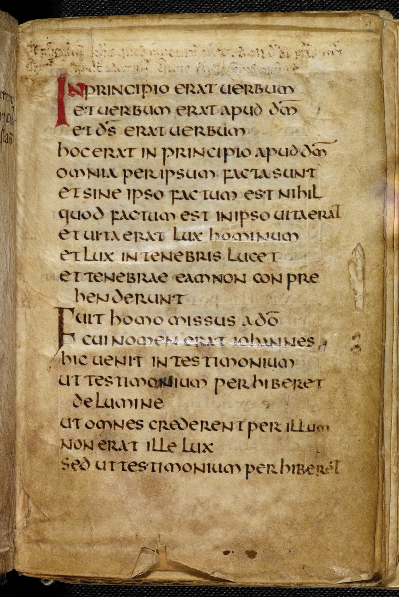
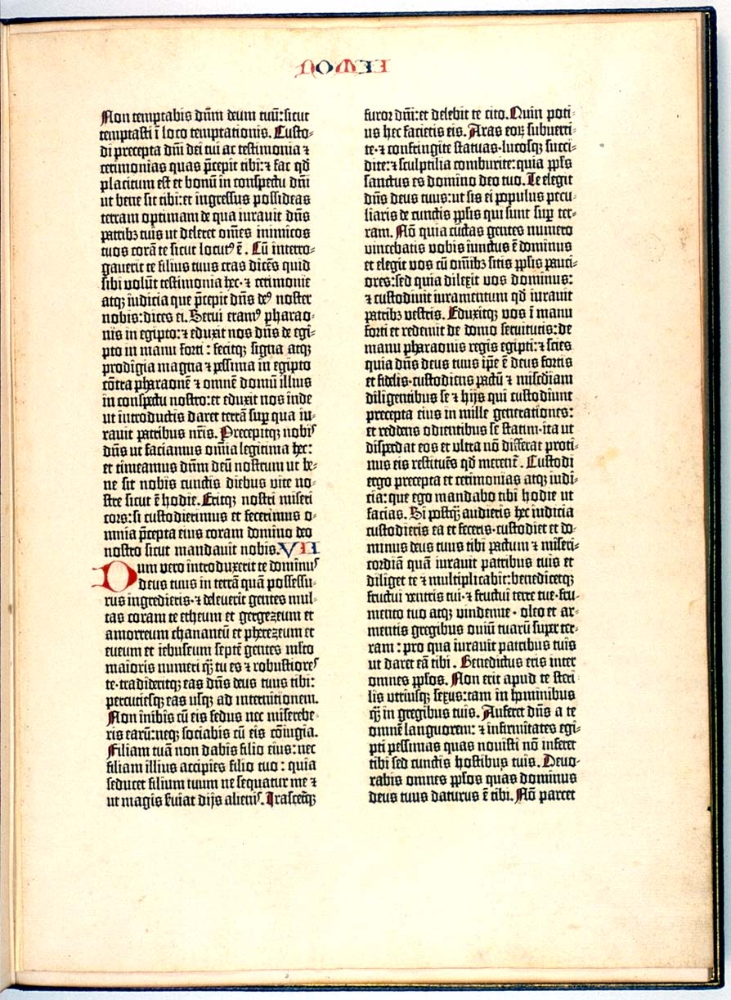
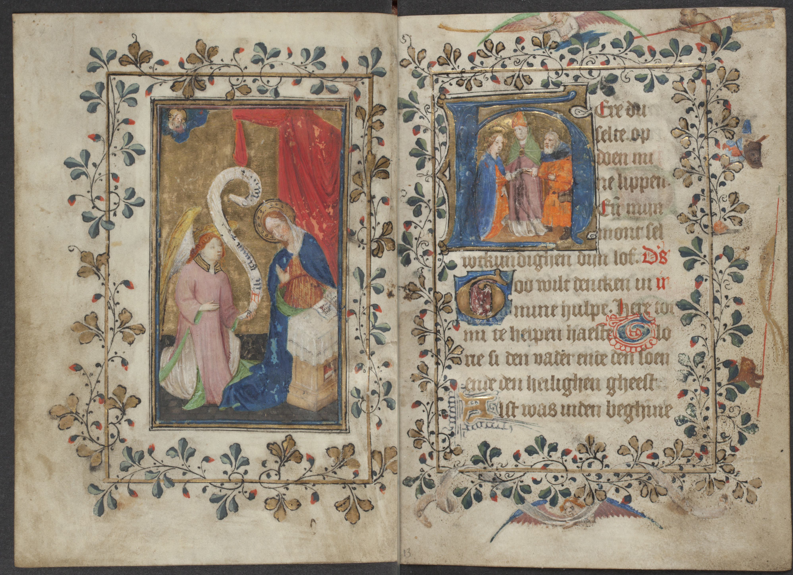

Was macht eine Schrift aus? Wir beginnen bei ihrer Geschichte, ihren Formen und Verbindungen – bevor wir aus ihnen eine ganze Seite bauen.
Agfi · 0123 · ∑
Anatomie und Overshoot, Antiqua, Sans Serif und gebrochene Schriften, Buchstabenvarianten, Strichkontrast und Strichabschlüsse gehören zusammen. Im Schriftenraum verbinden wir die Merkmale. Danach folgen Schriftaufgaben, Auszeichnungen, optische Größen, Ligaturen und Ziffern. Lucide-Symbole und mathematische Zeichen brauchen ebenfalls eine zum Text passende Form. Zum Schluss erkunden wir die Schriftdateien, ihren sicheren Lieferweg und unseren tatsächlichen Bestand.
Begleitende Einführung: Google Fonts Knowledge: Introducing type ↗ – Grundlagen zu Schriftformen, Klassifikation und typografischen Begriffen. Die englischsprachige Einführung ergänzt die eigenen Beispiele dieses Ateliers. Zum Nachschlagen gibt es am Ende ein Glossar der Fachbegriffe ↓.
I.1 Von der Inschrift zum Bildschirm
Buchstaben haben eine Geschichte.
Warum sehen unsere großen und kleinen Buchstaben so verschieden aus? Ihre Formen tragen Erinnerungen: an Stein und Feder, an Drucktypen, Zeitungsmaschinen und Bildschirmraster.
Wir verfolgen hier ausgewählte Stationen der lateinischen Schrift, nicht die Geschichte aller Schriftsysteme. Die Formen lösen einander nicht einfach ab: Handschrift, Inschrift und Druck existieren nebeneinander und beeinflussen sich gegenseitig.
01 · Ab dem 8. Jahrhundert v. Chr.
Griechen: Ein Alphabet wird angepasst.
Das griechische Alphabet greift auf das phönizische zurück. Entscheidend ist nicht nur die Übernahme von Formen: Zeichen für bestimmte semitische Konsonanten erhalten im Griechischen die Aufgabe, Vokale zu bezeichnen. Aus den Namen Alpha und Beta entsteht später das Wort „Alphabet“.
Es gibt zunächst unterschiedliche regionale griechische Alphabete. Über die Etrusker gelangen Formen und Schreibtraditionen nach Rom und werden erneut an eine andere Sprache angepasst. Unser A ist also keine spontan erfundene geometrische Figur, sondern Teil einer langen Überlieferung.
Schau hin: Auf dem Gefäß läuft das Alphabet im Kreis. Schrift gehört schon hier zur Gestaltung eines Gegenstands – nicht nur auf eine rechteckige Textseite.
Abbildung vergrößern Griechisches Alphabet auf einem Gefäß, um 420 v. Chr. Nationales Archäologisches Museum Athen. Foto: Marsyas; Bearbeitung: 1970gemini. Bildquelle ↗ · CC BY 2.5 ↗. Lokal als verkleinerte Commons-Fassung, ohne weitere Bearbeitung.
02 · Römische Antike
Römer: Monument und Alltag.
Inschriften wie jene am Sockel der Trajanssäule von 113 n. Chr. zeigen die Capitalis monumentalis: sorgfältig proportionierte Großbuchstaben mit kräftigen und feinen Partien und deutlichen Abschlüssen. Diese Formen bleiben für spätere Versalien ein wichtiger Bezugspunkt.
Aber die Römer schreiben nicht ausschließlich solche repräsentativen Kapitalen. Für zügiges Schreiben gibt es Kursivschriften mit anderen Bewegungen und Formen. Ein in Stein gemeißelter Buchstabe und ein schnell geschriebener Buchstabe erfüllen unterschiedliche Aufgaben. Schon deshalb führt kein gerader Weg von der Inschrift zu jedem heutigen Zeichen.
Schau hin: Suche A, R und M. Viele Formen sind uns vertraut. Unsere heutigen kleinen Buchstaben sind jedoch nicht einfach verkleinerte Kopien dieser Versalien.
Eine Minuskel ist nicht bloß eine kleine Majuskel. Ihre Buchstaben besitzen unterschiedliche Höhen: Der Kern liegt zwischen Grundlinie und x-Höhe, einzelne Formen haben Ober- oder Unterlängen. Vorstufen entwickeln sich aus spätantiken Schreibtraditionen; im Mittelalter entstehen verschiedene regionale Buchschriften.
Um 800 entwickelt sich die karolingische Minuskel; im 9. Jahrhundert verbreitet sie sich weiträumig. Die Förderung unter Karl dem Großen unterstützt ihre Verbreitung; er erfindet die Kleinbuchstaben nicht allein. Die klar unterscheidbaren Formen und ihre Ober- und Unterlängen prägen den Lesetext.
Humanisten des 14. und 15. Jahrhunderts greifen später auf mittelalterliche Handschriften zurück, die sie für Vorbilder aus der Antike halten. Aus der humanistischen Minuskel und den römischen Kapitalen entwickeln sich die Grundlagen der Renaissance-Antiqua. Unsere Groß- und Kleinbuchstaben bewahren damit unterschiedliche Traditionen.
Schau hin: Das rote A eröffnet den Abschnitt. In den folgenden klein geschriebenen Zeilen erkennst du schon vertraute Ober- und Unterlängen.
Abbildung vergrößern Karolingische Minuskel in einer Alkuin-Bibel. Burgerbibliothek Bern, Cod. 4, fol. 27v. Bildquelle und Rechteangabe ↗: gemeinfrei laut Commons. Der dort vorhandene Detailausschnitt wurde unverändert übernommen.
04 · Europäischer Buchdruck ab der Mitte des 15. Jahrhunderts
Die Feder wird zur wiederholbaren Druckform.
Druck und bewegliche Lettern haben ältere Vorläufer in Ostasien. Gutenbergs europäisches System verbindet jedoch den Guss von Metalllettern mit einem leistungsfähigen Druckverfahren. Ein Zeichen muss nun wiederholt hergestellt, gesetzt und gedruckt werden können. Die Schrift wird zu einem Bestand von Typen, der immer neue Texte ermöglicht.
Die Gutenberg-Bibel aus den 1450er-Jahren imitiert zunächst die vertraute Textura handgeschriebener Bücher. Ihr Satz enthält zahlreiche Ligaturen und Abkürzungsformen. Farben und Buchschmuck werden nach dem Druck von Hand ergänzt. Der technische Umbruch sieht also nicht sofort modern aus.
Andere Drucker greifen humanistische Formen auf. Nicolas Jensons venezianische Antiqua von 1470 ist ein wichtiges Beispiel. Handschriftliche Vorbilder werden für Metall und Papier neu gestaltet: Wiederholbare Buchstaben, passende Abstände und ein gleichmäßiges Textbild müssen zusammenarbeiten. Später entstehen eigene Kursive und neue Schriftfamilien.
Schau hin: Gedruckte schwarze Zeilen und handgemalte Initialen teilen sich dieselbe Seite. Die Technik verändert sich; vertraute Gestaltung bleibt zunächst erhalten.
Abbildung vergrößern Beginn der Genesis, Gutenberg-Bibel, um 1455. Staatsbibliothek zu Berlin, Band I, fol. 5r. Scan: Jossi. Bildquelle und Rechteangabe ↗: gemeinfreie Reproduktion. Verkleinerte Commons-Fassung, ohne weitere Bearbeitung.
05 · Massenpresse und industrielle Produktion
Die Zeitung: Viel Text, wenig Zeit.
Mit der Massenpresse wächst der Druck, viele Seiten schnell und wirtschaftlich herzustellen. Leistungsfähigere Pressen und mechanisierte Satzverfahren verändern die Produktion. Die Linotype setzt beispielsweise nicht einzelne fertige Lettern von Hand zusammen, sondern gießt ganze Druckzeilen. Der Satzraum auf dem Foto zeigt diese Arbeitsteilung.
Eine Zeitungsschrift muss auf wenig Raum deutlich bleiben: in kleinen Graden, in schmalen Spalten und unter den Bedingungen des jeweiligen Papiers und Druckverfahrens. Dünne Details dürfen nicht verschwinden, enge Innenräume nicht zulaufen. Die praktische Frage lautet nicht „Welche Schrift ist am schönsten?“, sondern „Welche Form funktioniert hier?“
Times New Roman wird 1932 für die Londoner The Times eingeführt. Die Weiterentwicklung Times Modern von 2006 zeigt, dass auch ein traditionsreiches Blatt seine Schrift an veränderte Produktion und Gestaltung anpasst. Nicht jede Zeitung nutzt Times, und die schmalste Schrift ist nicht automatisch die lesbarste.
Schau hin: Die Maschinen stellen gesetzte Zeilen her. Das Foto zeigt eine Satzabteilung, nicht die eigentliche Druckpresse. Die fertige Zeitung entsteht erst in weiteren Arbeitsschritten.
Abbildung vergrößern Satzraum der New York World, 1909. Foto laut Katalog: New York World; George Grantham Bain Collection, Library of Congress, LCCN 2004667832. Bildquelle und Rechteangabe ↗: gemeinfrei laut Commons; Bibliothek: keine bekannten Publikationsbeschränkungen. Verkleinerte Commons-Fassung, ohne weitere Bearbeitung.
06 · Bildschirm und digitale Schrift
Aus Metall wird ein Raster. Und eine Datei.
Am frühen Textbildschirm stehen Zeichen häufig in einem festen Raster. Ein Bitmapfont beschreibt die Form als Bildpunkte. Wenige Pixel lassen kaum Platz für feine Details; Bildschirmzeichen müssen deshalb für ihre tatsächliche Auflösung entworfen werden. Das Terminalfoto zeigt einen solchen Textbetrieb, nicht schon eine frei gestaltete Druckseite.
Konturschriften speichern dagegen skalierbare Umrisse. Beim Anzeigen werden diese in Pixel umgesetzt; Verfahren wie Hinting können die Anpassung an ein kleines Raster unterstützen. PostScript und digitale Schriftbibliotheken treiben in den 1980er-Jahren das Desktop-Publishing voran: Professioneller Satz wird vom Arbeitsplatzrechner aus zugänglich.
Für den Bildschirm entstehen auch neue Entwürfe. Die 1996 veröffentlichte Verdana von Matthew Carter, mit Bildschirmoptimierung durch Tom Rickner, setzt auf unterscheidbare Zeichen und passende Abstände. Ein Bildschirmfont ist nicht einfach eine verkleinerte Buchschrift.
Heute trennt Unicode die Identität eines Zeichens von seiner gezeichneten Gestalt. OpenType-Funktionen steuern etwa Ligaturen; variable Fonts können mehrere Ausprägungen in einer Datei bereitstellen. Mehr Möglichkeiten garantieren aber noch keinen guten Satz. Gewicht, optische Größe und wechselnde Bildschirmformate werden später selbst ausprobiert.
Schau hin: Der Bildschirm zeigt gleichmäßig angeordnete Textzeichen. Vergleiche das feste Zeilenraster mit den unterschiedlich breiten Buchstaben dieses Lesetexts.
Abbildung vergrößern Text auf einem Terminal der DEC-VT100-Familie. Am Gerät steht VT101; der Commons-Dateiname lautet „Vt100-adventure“. Sammlung der Retro-Computing Society of Rhode Island. Foto: Dave Fischer / Shieldforyoureyes, 2008 – eine spätere Aufnahme des historischen Geräts. Bildquelle ↗ · CC BY-SA 3.0 ↗. Verkleinerte Commons-Fassung, ohne weitere Bearbeitung.
Ein heutiges Experiment, kein historischer Font
Wie viele Bildpunkte braucht ein a?
Dasselbe a der lokal eingebundenen Fira Sans erscheint links in einem kleinen Raster, das wir stark vergrößern. Rechts zeichnet der Browser seine Kontur in der Anzeigegröße. Verändere die Rasterauflösung: Feinheiten brauchen Platz. Historische Bitmapfonts wurden oft eigens gezeichnet – dieses Experiment bildet deren Entwürfe oder Hinting nicht nach.
Das Rasterexperiment wird vorbereitet.
Vergrößertes RasterKontur in Anzeigegröße
Fondamento: die Feder als heutige Schriftdatei.
Die von Astigmatic / Brian J. Bonislawsky gestaltete Fondamento ist eine kalligrafische Schrift. Ihre Grundlage ist Edward Johnstons Foundational Hand, eine Lehrschrift aus dem frühen 20. Jahrhundert. Sie erinnert mit ihren breiten Federzügen an ältere Buchhände, ist aber keine Digitalisierung einer bestimmten mittelalterlichen Handschrift. Deshalb nennen wir die spätere Buchprobe eine heutige historische Anmutung, kein Faksimile.
Omnia tempus habent. Et suis spatiis transeunt universa sub caelo.
Oben siehst du den aufrechten Schnitt, darunter die echte Kursive. Es gibt in diesen Dateien nur Gewicht 400, keinen echten Fettschnitt. Die geprüften Fontdateien enthalten ÄÖÜäöüß sowie Standardligaturen, aber keine umschaltbaren Mediävalziffern. Für eine große kalligrafische Probe ist das interessant; für lange Gebrauchstexte ist sie kein automatischer Ersatz für eine ruhige Leseschrift.
Stein verlangt andere Bewegungen als eine Feder. Eine Drucktype muss sich wiederholen lassen; ein Zeitungstext muss klein und schnell funktionieren. Ein Bildschirm besitzt ein Raster, aber auch veränderbare Größen. Mit dieser Geschichte im Blick untersuchen wir nun, wie ein Buchstabe gebaut ist.
Eine Serife ist ein kleiner Abschluss am Ende eines Strichs. „Sans Serif“ bedeutet: ohne diese Abschlüsse. Das ist ein sichtbarer Unterschied, aber noch kein Qualitätsurteil.
Antiqua bezeichnet in der typografischen Tradition Schriftformen, die auf lateinischen, nicht gebrochenen Buchstaben beruhen. Im engeren Gebrauch meint man damit häufig Serifenschriften. Eine Grotesk beziehungsweise Sans Serif ist keine Frakturschrift, nur weil ihr die Serifen fehlen.
Die Grundlinie trägt die meisten Buchstaben. Die x-Höhe bezeichnet die Höhe kleiner Buchstaben ohne Oberlänge. b und h reichen darüber hinaus; g und p darunter. Zwei Schriften mit „16 Pixel“ können deshalb deutlich verschieden groß erscheinen.
Auch die Innenräume – die Punzen – und offene Enden etwa von c oder e prägen das Schriftbild. Vergleiche nicht nur ein großes A, sondern Wörter, Zahlen und Zeichen in der vorgesehenen Größe.
Eine Buchstabenprobe
abgpx
Oberkante b ↑x-Oberkante ↔Grundlinie —Unterkante g/p ↓
Die Konturdaten der lokalen Webfonts werden geladen …
Die Zeichnung zeigt die unveränderten Buchstabenformen als Vektoren. Das x bestimmt hier die sichtbare x-Höhe; diese kann von einer nominalen Höhenangabe in der Fontdatei geringfügig abweichen. Die Ober- und Unterkanten gelten für die genannten Zeichen, nicht pauschal für sämtliche Buchstaben.
Kleinbuchstaben können die Großbuchstaben überragen.
Versalhöhe und Oberlängenhöhe sind verschiedene Bezugshöhen. In vielen Schriftarten reichen Oberlängen – etwa von l oder f – über die Großbuchstaben hinaus. „Kleinbuchstabe“ bezeichnet eine Zeichenart, nicht die Vorschrift, kleiner als jeder Großbuchstabe zu bleiben.
Warum sind die Großbuchstaben dann niedriger? Ein wichtiger Grund ist der optische Ausgleich im Fließtext. Ein H verteilt seine Striche über einen breiten, hohen Bereich; beim l reicht nur ein schmaler Stamm so weit nach oben. Würden die Versalien bis zur Oberlängenhöhe reichen, könnten sie im Absatz zu stark hervortreten – besonders bei langen Oberlängen im Verhältnis zur x-Höhe. Etwas niedrigere Versalien können den Grauwert, also die optische Dichte des Textes, gleichmäßiger halten. Im Deutschen mit seinen vielen großgeschriebenen Substantiven ist das besonders relevant. Es ist eine verbreitete gestalterische Begründung, keine zwingende Regel für jede Schrift.
Auch der i-Punkt kann die Versalhöhe überragen. In der Probe ist es der Punkt, der über das H reicht – nicht der Stamm. Der endet auf der x-Höhe. Über ihm braucht der Punkt einen erkennbaren Abstand, damit beide Teile nicht zu einem Strich zusammenlaufen. Seine Höhe ergibt sich deshalb aus x-Höhe, Abstand und Punktgröße; die Versalhöhe ist dafür keine vorgeschriebene Obergrenze.
Warum nicht auch das t? Das t hat in vielen Schriften eine verkürzte Oberlänge. In der gezeigten Probe endet es oberhalb des x, aber unterhalb des H. Sein Querstrich und sein kürzerer Aufstrich gehören zu seinem eigenen Bauplan. Oberlängen müssen nicht alle gleich hoch sein; die unterschiedlichen Höhen gliedern das Wortbild.
BEISPIEL: FIRA SANS · GLEICHER SCHRIFTGRAD, GLEICHE GRUNDLINIE
Hliftx
Versalhöhe des H —x-Höhe ···Grundlinie —
Die zarten Farbflächen markieren den Bereich zwischen der Versalhöhe des H und den Oberkanten von l, i und f. Das t bleibt darunter. Die Konturen selbst bleiben unverändert; die Detailausschnitte zeigen alle drei Überstände im gleichen Vergrößerungsmaßstab. Die Probe verwendet eine lokale Fontdatei, Regular / Gewicht 400.
Kein bloßer Overshoot: Die langen Oberlängen und der i-Punkt sind Teile des Buchstabenaufbaus. Der kleine optische Überstand einer Rundung ist etwas anderes – den vergleichen wir im folgenden Abschnitt.
Eine Familie umfasst verwandte Schnitte, etwa Regular, Bold und Italic. Eine echte Kursive ist häufig neu gezeichnet: Ein lediglich schräg gestellter aufrechter Schnitt ist nicht dasselbe. Fehlende fette oder kursive Schnitte sollte man nicht unbemerkt vom Programm künstlich erzeugen lassen.
Warum darf ein O über die Linie hinaus?
Gleiche Messhöhe ist nicht immer gleiche Wirkung. Rundungen berühren eine gedachte Kante nur an einer kleinen Stelle; ein gerader Abschluss liegt über eine größere Strecke auf ihr. Gleich hohe runde Formen können deshalb kleiner erscheinen.
Schriftgestalter gleichen das aus: Ein rundes O reicht oft etwas über die Höhe eines H und unter die Grundlinie; ein kleines o über die x-Höhe. Dieser bewusst gezeichnete Überstand heißt Overshoot. Auch spitze Formen können einen optischen Ausgleich brauchen. Das ist kein Fehler und keine nachträgliche Verschiebung durch den Browser. Größe und Ausführung hängen von der Schrift ab.
GROSSBUCHSTABEN · H UND O
Die obere Linie folgt der tatsächlichen Oberkante des H. Die kräftige Linie ist die Grundlinie. Das O darf beide überschreiten.
KLEINBUCHSTABEN · x UND o
Die obere Linie folgt der tatsächlichen Oberkante des x. Unten sieht man, wie die Rundung des o über die Grundlinie hinausreicht.
Die gemessenen Schriftkonturen werden geladen …
Ein Überstand ist noch keine Unterlänge.
Das kleine Stück unter einem o ist ein optischer Ausgleich. Die ausgeprägte Unterlänge von g oder p ist dagegen Teil des Buchstabenaufbaus. Auch ein x oder H kann durch Spitzen und Serifen minimale Überstände besitzen. Deshalb bleibt die Grundlinie eine feste Bezugslinie – sie wird nicht einfach unter den tiefsten schwarzen Pixel gelegt.
Probiere Cardo, EB Garamond und Inter nacheinander. Wo ist der Überstand am deutlichsten? Schalte die Farbmarkierung aus: Wirken H und O trotz ihrer unterschiedlichen Konturhöhen zusammen ausgewogen? Die Lupe vergrößert nur einen Ausschnitt; sie streckt oder korrigiert keine Buchstaben.
Beispiele sind im vorhandenen Bestand tatsächlich nachweisbar: unter anderem in Cardo, EB Garamond, Goudy Bookletter 1911, Libre Baskerville, Libre Bodoni, Source Sans 3, Inter, Lora und Poppins. Die Probe verwendet ihre lokal gespeicherten Webfont-Konturen in Regular beziehungsweise Gewicht 400, nicht möglicherweise abweichende Desktopversionen. Bei Handschriften und ungewöhnlichen Schmuckschriften lässt sich das Schema nicht ohne Weiteres auf jede Form übertragen. Bildschirmrasterung kann kleine Konturunterschiede zusätzlich beeinflussen.
Renaissance, Barock, Klassizismus: Was verändert sich?
Die Namen sind Orientierungshilfen, keine lückenlosen Schubladen. „Venezianisch“ oder „französisch“ benennt historische Formtraditionen, nicht den heutigen Wohnort der Schriftgestalter. Zeitgenössische Google Fonts sind Interpretationen; sie ersetzen keine originalen Drucktypen.
I
Venezianische Renaissance
o e Ag
Die Schreibbewegung der Breitfeder bleibt gut erkennbar: eher geringer Strichkontrast, schräge Achse runder Buchstaben und häufig eine schräge Querlinie im e. Nicolas Jensons venezianische Typen des 15. Jahrhunderts sind ein historischer Bezugspunkt.
Live-Schriftprobe: Goudy Bookletter 1911, nach Goudys Kennerley Oldstyle – eine moderne Interpretation mit venezianischen Merkmalen, keine originale Jenson-Drucktype. Die schräge Achse des o meint die Verteilung dünner und dicker Striche, nicht einen kursiv geneigten Buchstaben. Die Formen werden unverändert dargestellt.
Garamond-Traditionen verfeinern die Formen: meist etwas größerer Strichkontrast, feinere Serifen, eine weniger geneigte Achse und eine waagerechte e-Querlinie. „Garalde“ verbindet die Namen Garamond und Aldus Manutius.
Live-Schriftprobe: EB Garamond, eine freie historische Interpretation.
III
Barock / Transitional
Ag & e
Die Formen werden aufrechter und der Unterschied zwischen dünnen und dicken Strichen deutlicher. Baskerville steht zwischen Renaissance-Modellen und späteren klassizistischen Typen. Nicht jede Schrift folgt dieser Entwicklung in allen Details.
Live-Schriftprobe: Libre Baskerville, nicht der historische Originalschnitt.
IV
Klassizistisch / Didone
Ag & e
Fast senkrechte Achsen, starke Kontraste, feine horizontale Serifen: Bodoni und Didot sind die bekannten Namen. Die feinen Linien können groß eindrucksvoll und klein empfindlich sein. Prüfe Bildschirm, Druck und Papier.
Live-Schriftprobe: Libre Bodoni. „Didone“ verbindet Didot und Bodoni.
Ohne Serifen kann eine Schrift ruhig und geschlossen wirken – oder offen, lebendig und von einer Schreibbewegung geprägt sein. Die Begriffe benennen aber nicht alle dieselbe Art von Unterschied.
Der Buchstabenbau lässt eine Schreibbewegung erkennen: Formen und Breiten sind stärker differenziert, Verbindungen folgen einem Schreibduktus. Gemeint ist eine Formwirkung, weder Animation noch eine Variable-Font-Datei. Auch eine aufrechte Schrift kann dynamisch wirken.
Der Name verweist auf die Schreib- und Buchkultur der Renaissance, nicht einfach auf „freundlich“ oder „menschlich“. Humanistische Sans übernehmen daraus Proportionen und Buchstabenbau ohne Serifen. Offene Formen und Schreibduktus sind häufige Merkmale – auch bei geringem Strichkontrast.
Hier ein eher gleichmäßiger, aufrechter Formrhythmus mit weniger sichtbar ausgeprägter Schreibbewegung. Das ist keine Wertung und keine Aussage über die Dateitechnik. Helvetica ist ein bekannter Bezugspunkt; Inter dient uns als groteskbetonte Vergleichsprobe.
Geometrisch beschreibt eine Konstruktion aus wiederkehrenden Grundformen, etwa Kreisen. Gerundet beschreibt dagegen weiche Strichabschlüsse oder Ecken. Eine Schrift kann beides zugleich sein; keines der Wörter ist ein Synonym für statisch.
Was lässt sich an der Probe sehen?
Inter vertritt hier die groteskbetonte, eher statische Position; Source Sans 3 die humanistische, dynamische. Poppins betont geometrische Grundformen, Nunito gerundete Abschlüsse. Frutiger und Helvetica dienen nur der historischen Orientierung: Unsere lokalen Google Fonts sind keine identischen Ersatzschriften dafür.
Betrachte die Öffnung im e, die Enden des c, den Bau von a und g und die unterschiedlichen Buchstabenbreiten. Schreibduktus ist die in der Form ablesbare Führung eines Schreibwerkzeugs; eine Schrift muss dafür nicht wie verbundene Handschrift aussehen.
Das Menü enthält alle sechs Paarungen der vier Vergleichspositionen und einen zusätzlichen Vergleich zweier humanistischer Familien. Die Positionen überschneiden sich: Wir zeigen Beispiele, keine vollständige oder trennscharfe Klassifikation aller Schriften.
Sachliche Orientierung, wiederkehrende Etiketten, Daten und kurze technische Informationen können von der zurückgenommenen, gleichmäßigen Anmutung statischer Formen profitieren.
Dynamisch: Gedanken begleiten
Dynamische Formen bringen Schreibduktus und stärker unterscheidbare Konturen mit. Sie sind ein guter Ausgangspunkt für längere Erklärungen, Reportagen und erzählende Texte – auch ohne Serifen.
Kein Text braucht allein wegen seiner Textsorte zwingend das eine oder das andere. Prüfe eine echte Textseite. Hier meinen wir das Formprinzip, nicht die Dateitechnik und nicht Bewegung auf dem Bildschirm. Geometrisch ist zudem nicht einfach ein anderes Wort für statisch.
Gebrochene Formen. Eine eigene Schriftwelt.
Neben Antiqua und Sans Serif gibt es eine weitere große Tradition: gebrochene Schriften, englisch Blackletter. Fraktur und Textura gehören dazu – sie sind aber nicht dieselbe Schriftart.
Warum heißt sie Fraktur?
Der Name geht auf das lateinische fractura – Bruch zurück. Gemeint sind die gebrochenen Rundungen: Wo eine Antiqua einen weitgehend fließenden Bogen zeigt, wechseln hier Kurven und kantige Richtungsänderungen. Die Buchstaben sind nicht beschädigt; ihre Form folgt einer anderen Schreibtradition.
An den großen o und e unten lässt sich dieser Unterschied betrachten. Fraktur verbindet gebrochene Partien mit runderen Zügen. Ihre Buchstaben lassen sich deshalb nicht einfach als Antiqua mit zusätzlichen Schnörkeln verstehen.
Textura ist nicht nur ein anderer Name.
Die ältere, mittelalterliche Textura betont eng stehende, senkrechte Striche und stark gebrochene Bögen. In einem ganzen Absatz entsteht ein dichtes, fast gewebtes Schriftbild. Die später entwickelte Fraktur wirkt dagegen in vielen Formen bewegter und weniger gleichförmig.
Pirata One vereinfacht diese Textura-Tradition für den Bildschirm. Texturina verbindet gebrochene mit weicheren Rundungen zu einer zeitgenössischen Mischform. Ihr Name macht sie noch nicht zur reinen historischen Textura.
Nach der Mainzer Fraktur von 1901. Historische Formen mit deutlich eigenem Wortbild. Vergleiche die Brechungen im o und die Form des e, nicht nur die verzierten Großbuchstaben.
Ein echter aufrechter Schnitt. Das lange ſ ist vorhanden; künstliches Fett oder Kursiv wird hier nicht erzeugt.
Schmal, kantig und markant. Die Gestalter vereinfachten Texturaformen für Bildschirme und empfehlen Titel oder kurze Passagen. Weniger historische Details können den Einstieg erleichtern.
Ein echter aufrechter Schnitt. Die lokale Datei enthält kein langes ſ; das gewöhnliche s gehört zur modernen Probe.
Gebrochene und weichere Kurven begegnen sich. Die Nähe zu vertrauten Buchstabenformen ist sichtbar, ohne die besondere Stimme ganz aufzugeben. Keine originalgetreue historische Textura.
Gewichte 100–900, echte Kursive und optische Größen 12–72. Kein langes ſ in den lokalen Dateien.
Die drei Proben zeigen dieselben Wörter bei derselben Schriftgröße und Gewicht 400. Ihre sichtbaren Höhen und Breiten unterscheiden sich dennoch. Für heutige Leser leichter zugänglich ist eine Gestaltungsabsicht, keine gemessene Rangliste: Prüfe Namen, Wortbilder und einen kurzen Absatz. Für lange Erklärtexte bleiben vertraute Leseschriften meist die unauffälligere Wahl. Eine ganze Überschrift in Fraktur-Versalien wird schnell schwer zu entziffern.
Beschreibungen der Schriftgestalter im offiziellen Google-Fonts-Repository: UnifrakturMaguntia · Pirata One · Texturina. Alle drei sind lokal eingebunden und im Schriftarchiv mit ihren tatsächlich verfügbaren Schnitten und Zeichen geprüft.
UnifrakturMaguntia · drei unterschiedliche Zeichen
ſLanges s
sRundes s
fEin f, kein s
ſagen · leſen Haus · Haustür
In „Haustür“ endet der Wortbestandteil „Haus“: Sein s bleibt rund, obwohl danach noch Buchstaben folgen.
Ein s im Wort. Ein s am Ende.
Im traditionellen deutschen Fraktursatz hat das kleine s zwei Formen. Das lange ſ steht etwa am Anfang und in vielen Positionen innerhalb eines Wortbestandteils: ſagen, leſen. Das runde s, auch Schluss-s genannt, beendet etwa Haus. Es bleibt auch am Ende eines Bestandteils wie in Haustür erhalten.
Die Faustregel „innen lang, am Ende rund“ reicht nicht für jeden Fall: Wortstruktur, Lautverbindungen und historische Schreibweise spielen mit. Daher nicht alle s außer dem letzten automatisch ersetzen. Das ſ ist eine historische Form des s, weder ein f noch das ß. Es wurde übrigens auch in älteren Antiquatexten verwendet.
Unsere historischen Beispiele setzen das ſ ausdrücklich als Unicode-Zeichen U+017F. Eine Schriftwahl allein korrigiert die Schreibweise nicht. Fehlt das Zeichen, kann der Browser unbemerkt eine andere Schrift einsetzen. Pirata One und Texturina zeigen deshalb hier keine vorgetäuschten ſ-Proben.
Dieselbe Schrift kann je nach Umgebung unterschiedliche Erinnerungen auslösen. Ein historisches Buch, ein Wirtshausschild und ein politisches Plakat geben ihren Formen jeweils einen anderen Zusammenhang. Die Wahl einer Schrift vermittelt deshalb mehr als den wörtlichen Inhalt.
Manche Schriften verändern nicht nur die Strichstärke. Sie geben einem Buchstaben einen anderen Bauplan. Besonders deutlich wird das beim kleinen a und g.
Das einstöckige a besteht vereinfacht aus einer Rundung und einem rechten Stamm. Das zweistöckige a hat über seinem unteren Innenraum einen zusätzlichen Bogen. Beim einstöckigen g folgt auf die obere Rundung ein abwärts laufender Schweif; das zweistöckige g besitzt darunter eine weitere Schleife. Diese kann je nach Schrift geschlossen oder offen gezeichnet sein. „Zweistöckig“ bedeutet beim a also nicht, dass es zwei vollständig geschlossene Löcher haben muss.
EB Garamond · aufrecht
a g
Zweistöckiges a, zweistöckiges g: vertraute Formen des aufrechten Buchsatzes.
Cardo · echte Kursive
a g
Einstöckiges a, aber ein g mit unterer Schleife: Eine Kursive übernimmt nicht automatisch alle Formen der Handschrift.
Poppins · aufrecht
a g
Einstöckiges a und g auch ohne Schräglage: Die geometrische Gestaltung greift die einfacheren Baupläne auf.
Inter · aufrecht
a g
Zweistöckiges a, einstöckiges g: Die beiden Entscheidungen müssen nicht zusammenfallen.
Fira Sans · Regular / 400
a g
Oben eine geschlossene Rundung, darunter eine offene Schleife: Auch eine Sans Serif kann ein zweistöckiges g besitzen.
Eine offene Schleife ist kein fehlendes Stockwerk.
Fira Sans zeigt eine weitere Variante: Das aufrechte g hat einen Verbindungssteg und eine unten offene Schleife. Der Steg zählt nicht als zusätzliches Geschoss. Die Form bleibt zweistöckig, auch wenn der untere Innenraum nicht vollständig geschlossen ist.
Die humanistische Familie ist hier in neun Strichstärken von 100 bis 900 mit jeweils echter Kursive lokal eingebunden. Die Formen der Kursiven müssen gesondert betrachtet werden; eine Familie schreibt nicht für jeden Schnitt denselben Buchstabenbau vor.
Unsere Druckschriften bewahren unterschiedliche Schreibtraditionen. Die aufrechten Antiquaformen wurden aus handgeschriebenen Buchschriften entwickelt; die echten Kursiven nehmen stärker Bezug auf die schnellere, fließende Schreibbewegung. Darum findet man in Kursiven häufig die einstöckigen Formen, die viele Menschen auch mit der Hand schreiben. Geometrische Schriften wählen sie oft aus einem anderen Grund: Kreis, Stamm und Schweif passen zu ihrem konstruierten Formprinzip.
Heute ist das eine bewusste Entwurfsentscheidung, keine automatische Folge von „Serifen“ oder „serifenlos“. Auch eine Sans kann zweistöckige Buchstaben haben. Der gewöhnliche Buchstabe a bleibt in all diesen Proben derselbe: Wir vergleichen unterschiedliche Glyphen, nicht andere Buchstaben oder eine neue Schreibweise.
Was hilft dem Lesefluss?
Ein guter Lesefont macht ähnliche Zeichen unterscheidbar und hält Innenräume auch klein offen. Das zweistöckige a bietet zusätzliche Merkmale gegenüber o und q. Forschung mit erwachsenen Lesenden fand Vorteile bei kurzer Darbietung und großer Lesedistanz. Das ist ein gutes Argument für diese Form – aber kein Beweis, dass jeder ganze Text damit immer schneller gelesen wird. Für das g folgt daraus erst recht keine pauschale Rangliste.
Warum trotzdem abweichen? Eine echte Kursive soll sich leise vom aufrechten Text unterscheiden; Handschriftnähe kann persönlich wirken, eine geometrische Form plakativ oder markant. Auch Lernmaterialien können an eine eingeübte Schreibweise anknüpfen. Entscheidend bleibt die konkrete Lesesituation. Ein vereinfachter Bauplan ist nicht automatisch leichter zu erkennen.
Eine geometrische Konstruktion kann Buchstaben einander annähern; unterscheidbare Konturen, offene Innenräume und passende Abstände sind deshalb besonders wichtig. Das Formprinzip allein legt die Lesbarkeit allerdings nicht fest. Es gibt für kleine Textgrade überarbeitete, geometrisch beeinflusste Schriften. Gerade das zeigt: Ein Displayfont und ein Textfont haben unterschiedliche Aufgaben. Google beschreibt selbst, weshalb die geometrische Markenform für längere Texte weniger kreisförmige, anders proportionierte Textformen brauchte.
Nicht jede Sans hat gleich dicke Striche.
Mit oder ohne Serifen ist eine Frage. Ob die Striche annähernd gleich dick bleiben oder deutlich zwischen fein und kräftig wechseln, ist eine andere.
Das Fachwort heißt Strichkontrast.
Geringer Strichkontrast bedeutet: Die Strichstärken unterscheiden sich wenig. „Monolinear“ meint annähernd gleichmäßige Stärke; optische Korrekturen können trotzdem nötig sein. Bei deutlichem Strichkontrast stehen dünne und dicke Partien einander gegenüber. Betrachte dafür den senkrechten Stamm und die Querstriche im H sowie die Seiten und den Scheitel des O.
„Kalligrafisch“ wäre dafür zu ungenau. Eine Breitfeder erzeugt zwar wechselnde Stärken, aber Schreibduktus kann auch bei wenig Kontrast sichtbar bleiben. Umgekehrt kann eine konstruierte, eher statische Displayform extreme Kontraste besitzen. Schreibbewegung, Strichkontrast und Serifen sind unabhängige Beobachtungen.
Vier Kombinationen. Vier wirkliche Fonts.
Die vertraute Kombination lautet oft: kontrastreiche Antiqua, kontrastarme Sans. Doch Belleza zeigt wechselnde Strichstärken ohne Serifen, Roboto Slab kräftige Serifen mit wenig Kontrast. Eine Serife macht noch keine dünn-dick-Schrift.
Die Felder sind Vergleichspositionen, keine absoluten Messklassen. „Gering“ heißt nicht mathematisch konstant, „deutlich“ nicht bei jeder Schrift gleich stark. Vergleiche hier jeweils Regular / Gewicht 400; Gewicht 700 würde nicht automatisch mehr Strichkontrast bedeuten.
Sans SerifGeringer Kontrast
Form HO
Poppins
Geometrische Grundformen, annähernd gleichmäßige Strichstärken. Konstruiert bedeutet nicht ohne optische Korrekturen.
Die Gesamtprobe „Form“ zeigt den Charakter einer Schrift. Für eine bestimmte Kante ist sie nicht immer die richtige Probe: Bei Podkova wird der schräge Abschluss erst am kleinen t sichtbar.
Strichabschluss ist der allgemeine Begriff. Ein freies Strichende ohne Serife wird auch Terminal genannt. Wir betrachten hier quer geschnittene und schräg geschnittene Kanten. Quer heißt ungefähr rechtwinklig zur örtlichen Strichrichtung: am senkrechten Stamm waagerecht, am waagerechten Auslauf senkrecht. Ein schräger Schnitt ist deshalb nicht einfach jeder senkrechte Rand.
Die Originalkonturen für den Vergleich werden geladen …
Roboto Slab · t
Quer zum Stamm: eine waagerechte obere Kante.
Podkova · t
Schräg zum Stamm: Die obere Kante steigt nach rechts an.
Die rostrote Markierung liegt auf der tatsächlichen Kontur des lokalen Fonts. Die gestrichelte Linie ist der rechtwinklige Vergleich. Es wird kein Buchstabe künstlich schräg geschnitten.
Ein Font kann verschiedene Abschlüsse gleichzeitig enthalten. Manche freien Enden sind zudem gerundet, kugelig oder zugespitzt und passen nicht in diese zwei Felder. Gerundete Enden wie bei Nunito bleiben hier ein ergänzender Hinweis, kein fünftes Merkmal des Schriftenraums. Bei Serifenschriften muss man außerdem freie Enden von den Serifen selbst unterscheiden. Darum benennt jedes besetzte Abschlussfeld unten ausdrücklich den untersuchten Buchstaben und die konkrete Kante.
Du bestimmst, was die beiden Achsen bedeuten. Aus zwei Gegensatzpaaren entstehen vier Vergleichsfelder – mit einer unverzerrten Schriftprobe pro belegtem Feld.
Beginne zum Beispiel mit Sans Serif / Serif auf der waagerechten und eher statisch / dynamisch auf der senkrechten Achse. Dann tausche ein Merkmal gegen den Strichkontrast oder den Strichabschluss aus. Die übrigen Merkmale bleiben dabei konstant und werden ausdrücklich angezeigt. Dynamisch meint Schreibduktus und Formenrhythmus, nicht Animation und nicht Variable-Font-Technik. Die Achsen ordnen Gegensatzpaare, keine gemessenen Zahlenwerte; der Abstand eines Beispiels vom Achsenkreuz hat keine quantitative Bedeutung.
Zwei Achsen. Vier Schriftbeispiele.
Wähle zwei unterschiedliche Merkmale. Wählst du das Merkmal der anderen Achse, tauschen die Achsen ihre Plätze. Klicke eine Schriftprobe an, um ihre Originalkonturen zu untersuchen.
Ein Vergleichsmodell, keine Naturgesetze. Kontrast und Dynamik verlaufen nicht nur in zwei Stufen. Die Einordnung der Beispiele ist redaktionell und vereinfacht. Besonders bei Serifenschriften ist eine binäre Ordnung freier Enden oft wenig aussagekräftig. Offene Felder bedeuten: Im hier geprüften Bestand fehlt ein überzeugender Beleg für diese Zuordnung – nicht, dass eine solche Schrift grundsätzlich unmöglich wäre.
Die lokalen Vergleichsschriften werden geladen …
Alle 16 Vergleichsfelder als flache Übersicht
Jedes Feld ist auswählbar. Derselbe Font kann in beiden Abschlussebenen stehen, wenn unterschiedliche Buchstaben die beiden Kanten zeigen. Die offene Kennzeichnung ist eine bewusst vorsichtige Arbeitsnotiz, keine Behauptung über alle existierenden Schriften.
Schreibbetonte, relativ kontrastarme Serifenschrift: Bree Serif (hier die freie Google-Fonts-Regular-Fassung). Kontrastreiche geometrische Sans: Limelight. Kontrastarme Sans mit einzelnen schrägen Enden: Abel. Die Primärquellen beschreiben die Fonts; ihre Positionen im Koordinatensystem sind unsere nachvollziehbare Vergleichseinordnung.
Eine Schrift bekommt eine Aufgabe.
Die erste Frage lautet nicht: „Welche Schrift gefällt mir?“ Sondern: „Was soll dieser Text beim Lesen leisten?“ Ein Plakat muss Aufmerksamkeit gewinnen. Eine Erklärung soll Gedanken tragen. Eine Tabelle muss Vergleiche ermöglichen.
Eine gut ausgebaute Antiqua wie EB Garamond oder Cardo ist ein sinnvoller Ausgangspunkt für längere Aufsätze, Geschichten, Essays und sorgfältig gestaltete Einladungen. Ihre differenzierten Formen und ihr Rhythmus können eine ruhige Lesefläche ergeben. Nonverbal rufen sie in vielen europäischen Kontexten Buchkultur, Kontinuität, literarische Sorgfalt oder einen feierlichen Anlass auf.
Das kann zum Inhalt passen – oder ihn unnötig auf Distanz halten. Eine klassizistische Schrift mit hauchdünnen Strichen ist klein nicht automatisch eine gute Leseschrift. „Serifen führen das Auge“ allein ist keine ausreichende Begründung: Die gesamte Gestaltung zählt.
Sans Serif: Direktheit und Orientierung
Eine Sans eignet sich häufig für kurze Hinweise, Menüs, Beschriftungen, Diagramme und technische Informationen: klare Konturen, robuste Striche, wenig dekorative Nebensignale. Sie kann zeitgenössisch, sachlich oder unmittelbar wirken. Eine humanistische Sans wie Source Sans 3 kann zugleich lange Erläuterungen angenehm tragen; serifenlos bedeutet weder gefühllos noch ungeeignet für Fließtext.
Diese Wirkungen sind kulturelle Erwartungen, keine eingebauten Bedeutungen. Eine Sans kann freundlich oder streng, eine Antiqua modern oder altmodisch auftreten. Inhalt, Größe, Gewicht, Raum und die Erfahrungen der Lesenden verändern die Botschaft.
Buch, Essay, Einladung · Cardo
Lesen heißt weiterdenken.
Ein guter Text gibt Gedanken Raum. Seine Form hilft uns, Zusammenhänge zu erkennen, Fragen zu stellen und einem Gedanken bis zum Ende zu folgen.
Die Antiqua kann Sorgfalt, Ruhe und literarische Nähe vermitteln. Für eine Einladung zählt auch der zum Anlass passende Ton.
Sachliche Orientierung · Inter
Lesen heißt weiterdenken.
Ein guter Text gibt Gedanken Raum. Seine Form hilft uns, Zusammenhänge zu erkennen, Fragen zu stellen und einem Gedanken bis zum Ende zu folgen.
Eher statisch und groteskbetont: passend zu Datenoberflächen, Formularen, Tabellenbeschriftungen und kurzen nüchternen Hinweisen. Tabellenziffern und klare Hierarchie bleiben eigene Entscheidungen.
Erklärung, Reportage · Source Sans 3
Lesen heißt weiterdenken.
Ein guter Text gibt Gedanken Raum. Seine Form hilft uns, Zusammenhänge zu erkennen, Fragen zu stellen und einem Gedanken bis zum Ende zu folgen.
Dynamisch und humanistisch: sinnvoll für längere Lerntexte, Erklärungen und erzählende Sachtexte, wenn eine offene, zugängliche Sans-Stimme gewünscht ist.
Plakativer Auftritt · Poppins
Lesen heißt weiterdenken.
Ein guter Text gibt Gedanken Raum. Seine Form hilft uns, Zusammenhänge zu erkennen, Fragen zu stellen und einem Gedanken bis zum Ende zu folgen.
Geometrische Formen geben einem kurzen Titel einen markanten Auftritt. Vergleiche den Absatz darunter: Wirkt der Rhythmus für einen ganzen Aufsatz noch ebenso angenehm?
Die vier Proben verwenden denselben Text, denselben Schriftgrad und denselben Zeilenabstand. Ihre x-Höhen und Umbrüche unterscheiden sich trotzdem. Das ist ein Anschauungsvergleich, kein kontrollierter Lesegeschwindigkeitstest. In der Satzwerkstatt lässt sich ein längerer Text mit unterschiedlichen Schriften und Abständen prüfen.
Prüfe eine Schrift mit deinem wirklichen Text, nicht nur mit ihrem Namen. Die Checkliste von Elliot Jay Stocks bei Google Fonts ergänzt unseren Formenvergleich um praktische Fragen.
Passt sie zur Aufgabe? Ein Einladungsmotto darf auffallen; der mehrseitige Lerntext muss angenehm lesbar bleiben.
Sind die nötigen Zeichen da? Teste Namen, Umlaute, ß und Währungszeichen. Fehlende Zeichen können unbemerkt aus einer Ersatzschrift stammen.
Bleiben Zeichen unterscheidbar? Vergleiche I, l und 1 sowie O und 0 – besonders bei Kennungen und Zahlen.
Sind die benötigten Schnitte vorhanden? Echte Kursive, Fett und gegebenenfalls optische Größen müssen in der tatsächlich geladenen Datei stecken.
Funktioniert die ganze Textfläche? Prüfe Abstände, Umbrüche und die Kombination mit einer zweiten Schrift, nicht nur Einzelbuchstaben.
Ist die geplante Nutzung erlaubt? Prüfe die konkrete Lizenz für Website, Dokument und Weitergabe; kostenlos bedeutet nicht ohne Bedingungen.
Eine kleine Belastungsprobe
Welche Formen kannst du sofort auseinanderhalten?
Poppins · geometrische Sans
I l 1 · O 0
Source Sans 3 · humanistische Sans
I l 1 · O 0
Schöne Grüße – Straße, 1.250 €.
Erweitere die Probe im Schriftarchiv um deine Namen und Fachbegriffe. Prüfe den echten Absatz danach in der Satzwerkstatt.
Namen mit besonderen Zeichen. Vollständig statt zusammengeflickt.
Auf einer Klassenliste, einem Zeugnis, einer Urkunde oder einem Namensschild gehört die richtige Schreibweise zur Sache. Ein Akzent ist kein Schmuck, den man bei Platzmangel weglassen kann. Diakritische Zeichen ergänzen oder verändern einen Buchstaben: etwa das türkische ğ und ı, das polnische ł, das tschechische ř und die ungarischen ő und ű. Im Rumänischen stehen bei ș und ț Kommas unter dem Buchstaben, keine Cedillen wie beim türkischen ş.
Fehlt ein Zeichen in der gewählten Schrift, kann der Browser es aus einer Ersatzschrift holen. Der Name bleibt dann scheinbar vollständig, aber einzelne Buchstaben haben andere Formen, Strichstärken oder Höhen. Auch kyrillische Namen brauchen einen nachgewiesenen Zeichenvorrat; lateinische Buchstaben, die ähnlich aussehen, sind kein Ersatz.
Eine Namensprobe. Eine konkrete Fontdatei.
Nur erfundene Proben verwenden, keine echten Namen aus Klassenlisten. Die Eingabe wird weder gespeichert noch übertragen. Geprüft wird der Zeichenvorrat der ausgewählten lokalen Datei, nicht die gesamte Schrift beim Anbieter.
Die Bestandsübersicht darunter ist auch ohne JavaScript lesbar. Für eine eigene interaktive Namensprobe ist JavaScript erforderlich.
Schau hin: Unterstrichene, umrahmte Zeichen fehlen in der ausgewählten Datei. Nicht nur den aufrechten Schnitt prüfen: Kursive und fette Varianten können einen anderen Zeichenvorrat enthalten.
Die Zeichenproben aller 41 Familien ansehen
Die Tabelle prüft den aufrechten Referenzschnitt bei Gewicht 400 oder den nächstliegenden vorhandenen Schnitt. TR, PL, CS, RO und HU stehen für die ausdrücklich aufgeführten türkischen, polnischen, tschechischen, rumänischen und ungarischen Proben, nicht für eine vollständige Sprachprüfung. Die kyrillische Probe umfasst 94 Buchstaben mehrerer Alphabete. Die Werkstatt prüft davon unabhängig jedes eingegebene Zeichen im gewählten Schnitt.
Geprüft werden die Unicode-Zuordnungen in den Fontdateien. Das belegt vorhandene Zeichen, nicht ihre gestalterische Qualität. Zusammengesetzte Eingaben werden für die Prüfung in NFC vereinheitlicht: Wo möglich, wird ein Buchstabe mit Akzent als ein vorgefertigtes Zeichen geprüft. Formen, Akzentpositionen und Abstände anschließend am echten Namen kontrollieren.
Die mit ↗ markierten Quellen führen zu anderen Anbietern. Erst beim Öffnen eines solchen Links werden Verbindungsdaten dorthin übertragen. Mit JavaScript erscheint vorher ein Hinweis; ohne JavaScript öffnen die Quellen als gewöhnliche externe Links. Die Schriftproben selbst bleiben lokal eingebunden.
Und bei besonderen Lesebedürfnissen? Anpassen statt versprechen.
Sogenannte Legasthenie-Schriften wie OpenDyslexic oder Dyslexie sollen das Lesen erleichtern. Ein besonderer Name ist aber noch kein Wirksamkeitsnachweis. Wery und Diliberto fanden bei zwölf Kindern mit Legasthenie in ihren Aufgaben keinen Vorteil von OpenDyslexic gegenüber Arial und Times New Roman. Kuster und ihre Kolleginnen untersuchten Dyslexie unter anderem bei 170 Kindern mit Legasthenie; auch dort zeigte sich kein Vorteil bei Lesetempo und Fehlerzahl gegenüber Arial.
Diese Ergebnisse sprechen gegen das Versprechen, eine Spezialschrift löse die Leseschwierigkeiten. Sie beweisen nicht, dass alle Menschen dieselbe Gestaltung angenehm finden. Vorliebe, Lesetempo und Textverständnis sind außerdem verschiedene Fragen. Die genannten Versuche untersuchten unterschiedliche Aufgaben und erlauben keine pauschale Aussage über jede Person oder jeden Text.
Was sich im Unterricht sinnvoll prüfen lässt
Ausreichende Schriftgröße, ein verlässlicher Zeilenanfang und passende Abstände sind konkrete Stellschrauben. Eine Studie von Zorzi und seinem Team fand bei italienischen und französischen Kindern mit Legasthenie Vorteile größerer Buchstabenabstände. Daraus folgt kein überall passender Abstandswert. Sehr weites Auseinanderziehen ist ebenso wenig ein allgemeines Rezept wie eine bestimmte Schriftfamilie.
Die vorhandene Satzwerkstatt in Teil II lässt Größe, Zeilenabstand, Zeilenlänge und Satzart vergleichen. Beginne für eine individuell angepasste Fassung mit linksbündigem Flattersatz und prüfe gemeinsam mit der lesenden Person, was hilft. Die I-l-1-Probe zeigt, woran sich unterscheidbare Zeichen erkennen lassen. Regeln und Werkstätten zu Neuumbruch und Kontrast stehen bereits in Teil III; sie werden hier nicht noch einmal aufgebaut.
Bei Sehbehinderung können Vergrößerung, neu umbrechender Text und anpassbare Farben wichtig sein. Die Bedürfnisse unterscheiden sich; eine einzige große Schrift oder ein dunkler Hintergrund passt nicht automatisch für alle. Eine veränderbare digitale Fassung kann deshalb zusätzlich zum Ausdruck sinnvoll sein.
Das ist eine gestalterische Orientierung, kein medizinischer Rat und keine Entscheidung über einen Nachteilsausgleich. Bei konkretem Unterstützungsbedarf mit der zuständigen schulischen Beratung und den beteiligten Fachkräften abstimmen. OpenDyslexic wird hier nur verlinkt, nicht als zusätzliche Schriftfamilie eingebunden; der Katalog bleibt bei 41 Familien.
Die echte Kursive geht auf fließende, handgeschriebene Formen zurück, besonders auf die italienische Schreibtradition der Renaissance. Sie ahmt in diesem Sinn eine Schreibbewegung nach. Sie ist aber nicht einfach eine verbundene Schreibschrift: Ihre Buchstaben müssen nicht zusammenhängen. Wie beim a und g sichtbar, werden Formen neu gezeichnet. Eine bloß schräg gestellte aufrechte Schrift heißt Oblique und folgt einem anderen Prinzip.
Kursiv: eine Hervorhebung beim Lesen
Eine Kursive eignet sich für eine betonte Wendung, eine begriffliche Unterscheidung oder – nach einer einheitlichen Satzkonvention – Werktitel. Sie verändert Form und Rhythmus, ohne die Zeile grundsätzlich dunkler zu machen. Die Hervorhebung begegnet uns eher im Verlauf des Lesens, statt beim ersten Blick auf die ganze Seite herauszuspringen. Lange kursive Absätze können trotzdem anstrengend sein; auch eine Kursive kann je nach Entwurf sehr auffällig werden.
Fett: ein Orientierungssignal vor dem Lesen
Fette Schrift erhöht die Strichstärke und erzeugt dunklere Stellen in der Textfläche. Deshalb finden wir wichtige Begriffe, Fristen oder Zwischenüberschriften bereits beim Überfliegen. In dieser Aufmerksamkeitswirkung ist sie einer kontrastierenden Textfarbe ähnlich – aber nicht identisch. Farbe kann zusätzliche Bedeutungen tragen und darf wichtige Informationen nicht allein vermitteln.
Ein Absatz voller fetter Wörter verliert die Hierarchie. Soll eine feine Betonung erst beim Lesen wirken, beginne mit Kursiv. Soll ein Schlüsselbegriff beim Suchen sofort auffallen, beginne mit Fett. Das ist eine brauchbare Ausgangsentscheidung, keine Garantie unabhängig von Schrift und Gestaltung.
Ein Inhalt. Drei Auftritte.
Ohne Auszeichnung · Cardo Regular
Für die Planung ist eine Angabe entscheidend: Bitte melden Sie sich bis zum 12. Oktober an. So können wir die Plätze rechtzeitig verteilen.
Betonung im Lesefluss · Cardo Italic
Für die Planung ist eine Angabe entscheidend: Bitte melden Sie sich bis zum 12. Oktober an. So können wir die Plätze rechtzeitig verteilen.
Beim Überfliegen auffindbar · Cardo Bold
Für die Planung ist eine Angabe entscheidend: Bitte melden Sie sich bis zum 12. Oktober an. So können wir die Plätze rechtzeitig verteilen.
Schau zuerst auf die Textfläche, ohne zu lesen. Wo entsteht ein dunkler Akzent? Lies danach alle drei Absätze. An welcher Stelle verändert sich die Stimme? Die Probe verwendet echte lokale Regular-, Italic- und Bold-Schnitte, keine künstliche Schräglage oder Verdickung.
Eine statische Fontdatei enthält einen festgelegten Schnitt. Ein Variable Font kann über Achsen wie wght mehrere Gewichte stufenlos in einer Datei bereitstellen. Eine Achse opsz passt die Formen an die optische Schriftgröße an, wenn die Schrift sie tatsächlich enthält. Das ist kein künstliches Strecken der Buchstaben.
Warum so viele Zwischenstufen? Ein Hinweis soll auffindbar sein, ohne den Absatz zu übertönen. Manchmal ist 600 dafür passender als 700. Mehr Freiheit bedeutet nicht mehr Effekte: Sie erlaubt, die Stärke der Hervorhebung genauer an Schrift, Größe und Hintergrund anzupassen.
Form folgt Gedanken.
Diese Probe lädt einen lokalen Variable Font mit wght-Achse. Das Formprinzip bleibt dabei eine Renaissance-Antiqua.
Eine kleine Erklärung und ein großer Titel stellen andere Anforderungen an Buchstaben. Eine gute Schrift kann dafür eigene Formen anbieten – statt denselben Entwurf nur größer auszugeben.
Die Form bekommt eine andere Aufgabe.
Für kleine Grade braucht der Entwurf robuste Details und klar unterscheidbare Innenräume. Bei Inter besitzt der Textentwurf zum Beispiel eine größere relative x-Höhe und Details für kleine Darstellung; der Displayentwurf verändert Proportionen und Kurven für große Schrift. Eine optische Größenachse, kurz opsz, verbindet solche Entwürfe stufenlos.
Das ist etwas anderes als die Schriftgröße: font-size skaliert die Anzeige. opsz verändert den zugrunde liegenden Entwurf. Deshalb zeigen wir hier beide Proben bewusst gleich groß, wie unter einer Lupe. Die Achsenwerte beziehen sich auf die optische Entwurfsgröße in typografischen Punkten, nicht auf die Pixelhöhe dieser vergrößerten Vorschau.
Gewicht und Abstand müssen mitpassen.
Auch das passende Fett hängt von Schriftgrad und Aufgabe ab. Dünne Details können klein verloren gehen; sehr schwere Formen können Innenräume bedrängen. Große Titel vertragen andere Feinheiten als kleine Hinweise. Daraus folgt aber keine Regel „größer muss fetter werden“. Prüfe den gewünschten Kontrast im vorgesehenen Grad.
Bei unseren beiden Proben ändern sich mit opsz auch Zeichenbreiten und eingebaute Seitenabstände relativ zum Schriftgrad. Das ist nicht bloß mehr Abstand, weil alles größer wird. Wir lassen die zusätzliche Sperrung auf null: Was du siehst, kommt aus dem Font. Nachträglicher optischer Ausgleich kann bei einem Titel trotzdem nötig sein; eine pauschale negative Sperrung ist keine Lösung für jeden Text.
Textentwurf · opsz 14
agHn
Hand in Hand
Displayentwurf · opsz 32
agHn
Hand in Hand
Beide Proben: gleiche Anzeigegröße und Gewicht 400. Links bleibt der Textentwurf fest; rechts verändern sich echte Fontformen.
Ziehe rechts auf den linken Mindestwert: Die Proben werden gleich. Gehe danach bis zum Maximum. Vergleiche die Höhe des kleinen n mit dem H, die Innenräume im a und die Breite der Wortzeile. Ändere anschließend das Gewicht: Wie wirken dieselben Zahlen im Text- und im Displayentwurf?
Diese Werkstatt lädt ausschließlich die bereits vorhandenen vollständigen lokalen TTFs von Inter und DM Sans, jeweils mit echten opsz- und wght-Achsen. Auch das Archiv verwendet, wo nötig, die vorhandenen vollständigen Originaldateien statt verkleinerter Zeichenteilmengen. Die optische Werkstatt behält eigene Schriftnamen, damit ihre Achsenwahl andere Proben nicht verändert. Inter: Erklärung der Text- und Displayentwürfe · OpenType: optische Größenachse. EB Garamond in der Werkstatt darüber enthält in unserem Bestand nur wght; dort wird keine optische Größenänderung behauptet.
Welche Größe in Word? Gleiche Zahl, andere Wirkung.
Beim Schriftwechsel beschreibt die Punktgröße nicht direkt die sichtbare Größe der Kleinbuchstaben. Als Bezug verwenden wir hier Arimo, eine metrisch zu Arial kompatible Schrift. Gemessen wurde Arimo selbst, nicht eine installierte Arial. Calibri und Aptos sind nicht lokal vorhanden und werden weder geladen noch nachgebildet.
Ausgangspunkt: 11 pt Arial, angenähert durch die gemessene Arimo
Lokale Schrift
Relative x-Höhe
Schriftgrad für dieselbe x-Höhe
Arimo · Bezug
1082 / 2048 ≈ 0,5283
11,0 pt
EB Garamond
405 / 1000 = 0,4050
etwa 14,3 pt
Fira Sans
527 / 1000 = 0,5270
etwa 11,0 pt
Regular / Gewicht 400, weitere variable Achsen auf Standardwert. Die relative x-Höhe ist hier die Oberkante der x-Kontur über der Grundlinie, geteilt durch die Einheiten des Schriftkörpers. Sie beträgt bei Arimo 0,5283, bei EB Garamond 0,4050 und bei Fira Sans 0,5270.
Wie wird das umgerechnet?
Mit s bezeichnen wir den Schriftgrad in Punkt, mit r die relative, einheitenlose x-Höhe. B steht für die Bezugsschrift, Z für die Zielschrift. Für gleiche sichtbare x-Höhe gilt:
Für EB Garamond ergibt sich \(11\,\mathrm{pt}\cdot\frac{1082/2048}{405/1000}\approx14{,}35\,\mathrm{pt}\). Die Tabelle rundet auf eine Nachkommastelle. Fira Sans liegt mit etwa 11,03 pt praktisch beim Ausgangswert.
Gleiche x-Höhe ist ein Ausgangspunkt, keine Gleichheit der gesamten Wirkung. Breite, Gewicht, Großbuchstaben und Formen unterscheiden sich weiterhin. Gerade bei Fira Sans ist keine pauschale Vergrößerung nötig. Prüfe mit dem neuen Schriftgrad auch den Zeilenabstand und die Zeilenlänge – in der vorhandenen Satzwerkstatt in Teil II.
Bei fi, fl oder ffi können Striche kollidieren. Eine Ligatur ersetzt mehrere Buchstaben durch eine gemeinsam gestaltete Glyphe. Die zugrunde liegenden Zeichen bleiben dieselben – wichtig für Suche, Kopieren und Barrierefreiheit. Man ersetzt sie nicht wahllos durch die Unicode-Zeichen fi oder fl.
In deutschsprachigem Feinsatz achtet man auf Wortbestandteilgrenzen, auch Wortfugen oder Morphemgrenzen genannt. Bei Auf|lage verbindet eine fl-Ligatur die Vorsilbe mit dem Stamm; im klassischen Satz löst man sie dort auf. Das ist nicht jede Sprech- oder Trennsilbengrenze: In Af-fe gehören beide f zum selben Stamm und dürfen eine ff-Ligatur bilden. Die senkrechte Markierung dient nur der Erklärung und gehört nicht in den fertigen Text.
Bei bestimmten Endungen wie -ig, -ich und -isch gibt es traditionelle Ausnahmen. Die Regel lautet also nicht pauschal „Ligaturen nie über Silben“. Maßgeblich sind Wortaufbau, Lesbarkeit und die gewählte Satztradition. Ralf Herrmann: deutsche Ligaturregeln.
Kerning ist nicht Sperrung.
Kerning korrigiert einzelne Paare, etwa AV oder To. Sperrung verändert den Abstand einer ganzen Zeichenfolge. Für große Titel kann nach der automatischen Paarbehandlung ein optischer Ausgleich nötig sein: gleiche rechnerische Abstände wirken nicht immer gleich groß.
Immer ohne Ligaturen
fi fl ffi
Probe mit Ligaturen
fi fl ffi
Affe fliegt fein.
Vergleiche die Bögen und die Verbindung zum nächsten Buchstaben. Der Schalter verändert die rechte Probe und den Satz darunter. Beide enthalten weiterhin gewöhnliche Einzelzeichen; nur die Darstellung ändert sich.
Einige Fonts unterdrücken Standardligaturen bei deutscher Sprachzuordnung. Nur diese technische Vergleichsprobe verwendet deshalb die OpenType-Sprachkennung ENG. Der Text bleibt deutsch; hier sollen die vorhandenen Verbindungen sichtbar werden. Das ist keine Empfehlung, in deutschen Dokumenten Wortfugen ungeprüft zu verbinden, und keine automatische Wortfugenprüfung.
AVATAR To
Cardo · aufrecht: fi, fl und ffi sind in der lokalen Fontdatei als Standardligaturen vorhanden.
Die Schriftwahl verändert beide Vergleichsproben und den Satz, nicht die Kerningprobe. Bei Lora verbinden sich fi und fl; für ffi ist kein eigener Standardersatz vorhanden. Diese Unterschiede sind Teil der Schrift, kein defekter Schalter. Kerningprobe: EB Garamond.
Wenn eine Verbindung ein eigenes Zeichen wird.
Eine fi-Ligatur ist heute meistens nur eine Darstellungsform zweier Buchstaben. Bei & und ß ist die Geschichte weitergegangen: Sie sind selbstständige Zeichen geworden.
&: aus dem lateinischen et
Das lateinische et bedeutet „und“. Die Verbindung von e und t wurde zu einem eigenen Und-Zeichen. Manche Formen bewahren eine erkennbare e-Rundung und einen t-Strich; andere verschlingen beides zu einer vertrauten Schleifenform. Besonders echte Kursiven können die Verbindung anschaulich machen.
e + t
&Cardo · kursiv e und t als Spur suchen&EB Garamond · kursiv eine andere et-Verbindung&Inter · aufrecht kompakte Schleifenform&Poppins · aufrecht die Bestandteile treten zurück
Vergleiche zuerst die beiden Kursiven, dann die aufrechten Sans. Wo kannst du einen e-Bogen und einen t-Anteil verfolgen? Die Formen werden hier nicht nachgezeichnet oder nachträglich in Bestandteile zerlegt.
ß: ein Buchstabe mit Ligaturgeschichte
Die Geschichte des deutschen ß führt zu langem s und z in gebrochenen Schriften: ſz. Das lange s ſ sieht einem f ähnlich, ist aber kein f. In Antiquaschriften ist auch die Formtradition ſs wichtig; viele heutige ß-Entwürfe folgen ihr. Herkunft und heutiger Bauplan dürfen deshalb nicht zu einer einzigen einfachen „s + s“-Geschichte verkürzt werden.
ſ + z · ſ + s
ßLora · aufrecht ſ-Bogen und s-Abschluss verfolgenßEB Garamond · aufrecht die Verbindung noch verfolgenßInter · aufrecht als zusammenhängende Form lesenßLibre Bodoni · aufrecht geschlossenere, kompakte Form
In den ersten beiden Proben lässt sich die Verbindung eher nachvollziehen; bei den kompakteren Formen tritt die Lesart als ein einzelner Buchstabe stärker hervor. Das ist eine Beobachtung an diesen Fonts, keine vollständige historische Ableitung jeder Kontur. ß ist weder ein B noch das griechische β.
Der Ligaturschalter kann & und ß nicht zerlegen.
In „Müller & Sohn“ steht heute ein einzelnes Und-Zeichen, in „Straße“ ein einzelner Buchstabe ß. Beim Kopieren bleiben sie & und ß – auch bei ausgeschalteten Standardligaturen. Die fi-Probe enthält dagegen weiterhin f und i. Historisch aus einer Ligatur entstanden ist also etwas anderes als heute durch die liga-Funktion zusammengesetzt.
Für den normalen Text schreibt man „und“; & gehört etwa zu feststehenden Namen oder einer bewusst gewählten grafischen Kurzform. Die Schreibweise mit ß richtet sich nach der Orthografie, nicht nach dem dekorativen Geschmack. Ein schwer erkennbares ß macht eine Schrift für deutsche Lesetexte nicht besser, nur weil sein Aufbau historisch interessant ist.
Kapitälchen sind eigens gezeichnete kleine Großbuchstaben. Ihre Strichstärke passt zu den Kleinbuchstaben. Einfach verkleinerte Versalien wirken häufig dünn. Für eine ruhige Zeile hilft eine leichte, optisch geprüfte Sperrung – keine pauschal riesigen Abstände.
Buchstaben mit Haltung
Echte smcp-Formen · EB Garamond · leicht gesperrt
BUCHSTABEN MIT HALTUNG
Verkleinerte Versalien zum Vergleich · kein echter Kapitälchenschnitt
In der Buchsatz-Werkstatt wird bei einer Schrift ohne smcp nicht so getan, als seien echte Kapitälchen vorhanden.
Ziffern haben Aufgaben.
Hier sind zwei unabhängige Entscheidungen wichtig: Wie hoch stehen die Ziffern? Und wie viel Platz nimmt jede Ziffer ein?
Mediävalziffern haben unterschiedliche Höhen wie Kleinbuchstaben. Einige reichen unter die Grundlinie, andere darüber hinaus. Versalziffern sind dagegen ungefähr so hoch wie Großbuchstaben.
Mediävalziffern · unterschiedlich hoch
0123456789
Die gestrichelte Linie ist die Grundlinie. Bei Cardo reichen 3, 4, 5, 7 und 9 deutlich darunter; 6 und 8 ragen nach oben.
Versalziffern · gleich hohe Formen
0123456789
Tabellenziffern · jede Ziffer gleich breit
1.111,00 8.888,00
Die Stellen und das Komma stehen übereinander: Eine 1 belegt genauso viel Breite wie eine 8.
Die Höhe ist nicht die Breite: Auch Mediävalziffern können tabellarisch gezeichnet sein. Für Preislisten, Rechnungen und Messwerttabellen sind gleich breite Ziffern besonders hilfreich; häufig wählt man dazu Versalformen. In einem fortlaufenden Buchtext können Mediävalziffern sehr gut passen. Sie sind nicht grundsätzlich für Dokumente oder Datumsangaben verboten.
Lokaler Cardo-Regular-Schnitt: onum schaltet die Mediävalformen ein. Seine normalen Ziffern sind bereits gleich hoch und gleich breit; die Tabellenprobe benötigt deshalb keinen zusätzlichen tnum-Schalter. Die übrigen Buchstaben bleiben proportional.
Ligaturen in Word: einschalten, vergleichen, kontrollieren.
Die Desktopversionen von Word können OpenType-Ligaturen verwenden. Installiere eine Schrift mit passenden Formen, etwa Cardo, und wähle sie für den markierten Text aus. Eine Einstellung erzeugt keine Ligaturen, die in der Fontdatei fehlen.
Am Mac
Den betreffenden Text markieren.
Format → Schriftart … → Erweitert öffnen.
Unter Erweiterte Typografie → Ligaturen zunächst Nur Standard wählen und mit OK bestätigen.
Mit „Keine“ vergleichen. „Alle“ aktiviert zusätzlich weitere vorhandene Ligaturarten; das ist für einen ruhigen Lesetext nicht automatisch besser.
Menübezeichnungen direkt in Word am Mac geprüft. Die Auswahl gilt für den markierten Text, nicht automatisch für alle künftigen Dokumente.
Unter Windows
Text markieren und den Dialog Schriftart öffnen: über den kleinen Dialogpfeil bei Start → Schriftart oder Strg + D.
Auf Erweitert wechseln und bei den OpenType-Funktionen unter Ligaturen die Standardligaturen auswählen.
Mit OK bestätigen und am Text prüfen, ob sich etwa fi oder fl verändert.
Bezeichnungen können je nach Wordversion und Sprache leicht abweichen. Die Browser- und Mobilversionen bieten nicht unbedingt dieselben Schalter. Alte Dokumentformate und Kompatibilitätsmodi können die verfügbaren Funktionen einschränken.
Prüft „Nur Standard“ auch die deutschen Wortfugen?
Nein, darauf kannst du dich nicht verlassen. Auch „Standard und kontextbezogen“ ist keine zuverlässige deutsche Wortfugenprüfung: Kontextregeln kommen aus der Schrift. Eine eingeschaltete Silbentrennung ersetzt die Kontrolle ebenfalls nicht. Suche bei der Schlusskorrektur nach möglichen Problemstellen, besonders in zusammengesetzten Wörtern und an Vorsilben.
Bei Auflage nur die beiden gewöhnlichen Buchstaben fl markieren und im selben Dialog Ligaturen → Keine einstellen. So bleibt das Wort durchsuchbar, ohne eine Verbindung über Auf|lage. In Affe darf die ff-Ligatur dagegen bleiben. Keine Leerzeichen, manuell eingesetzten Trennstriche oder fertigen Unicode-Ligaturzeichen in das Wort einbauen.
Für viele Absätze die Grundentscheidung in der betreffenden Formatvorlage speichern, einzelne Wortfugen gezielt ausnehmen. Anschließend Druckvorschau und exportiertes PDF kontrollieren: Ligaturen können die Zeichenbreiten und damit den Umbruch beeinflussen.
"Gute Typografie" - das kostet z.B. 10 EUR. Von 2024-2026.
BEWUSST GESETZT
„Gute Typografie“ – das kostet z. B. 10 €. Von 2024–2026.
Deutsche Anführungszeichen öffnen unten und schließen oben: „…“, innerhalb eines Zitats ‚…‘. Der Gedankenstrich – mit Abständen – ist länger als der Bindestrich in einem Wort. Für Bereiche wie 2024–2026 steht der Halbgeviertstrich ohne Leerzeichen. Geschützte Leerzeichen halten etwa Zahl und Einheit zusammen. Schmale geschützte Abstände können eine Abkürzung wie z. B. ordnen; sie gehören nicht blind zwischen beliebige Buchstaben.
Eine Anführungsmarke oder ein kleiner Satzpunkt kann bei großen Titeln etwas über die gedachte Kante hinausragen. Dadurch erscheint der kräftige Text optisch besser ausgerichtet. Dieses Beispiel zeigt das Prinzip; professioneller Randausgleich hängt von Zeichen, Schrift und Satzprogramm ab. In LaTeX übernimmt microtype je nach Engine unterstützte Teile davon.
Die Zeichen der Naturwissenschaften. Ähnlich ist nicht dasselbe.
Auf einem Arbeitsblatt kann ein kleines Ersatzzeichen die Bedeutung verändern. Ein x ist ein Buchstabe, ein × ein Multiplikationszeichen. Die folgende Übersicht zeigt die tatsächlichen Zeichen und ihre Unicode-Codepunkte, also ihre eindeutigen Kennungen. Dieselben Codes dienen für beide Eingabewege darunter.
Zeichen zum Nachschlagen und Kopieren
Zeichen und Aufgabe
Typische Verwechslung
Unicode-Code
× · Multiplikation
Buchstabe x
00D7
− · Minus
Bindestrich -
2212
° · Grad
hochgestelltes o, Ziffer 0 oder º
00B0
µ · Präfix Mikro
lateinisches u; etwa µm, nicht um
00B5
± · Plusminus
behelfsmäßige Folge +/-
00B1
→ · Pfeil nach rechts
Zeichenfolge ->
2192
⇌ · Gleichgewichtspfeil
einzelner Reaktionspfeil →
21CC
′ · Prime, etwa Winkelminute
Apostroph ' oder ’
2032
″ · Doppelprime, etwa Winkelsekunde
Anführungszeichen "
2033
… · Auslassungspunkte
drei einzeln eingegebene Punkte ...
2026
’ · typografischer Apostroph
Akzent ´ oder Gravis `
2019
Am Mac · auch mit deutscher Tastatur
Die Einfügemarke an die gewünschte Stelle setzen.
Mit Ctrl + Befehl + Leertaste die Zeichenübersicht öffnen; alternativ Bearbeiten → Emoji & Symbole.
In der gegebenenfalls erweiterten Übersicht den Code aus der Tabelle suchen, etwa 2212 für das Minus. Das Zeichen mit Doppelklick einsetzen.
Dieser gemeinsame Eingabeweg funktioniert ohne Wechsel auf eine andere Tastaturbelegung. Es werden keine ungesicherten einzelnen Wahltasten-Kürzel behauptet.
Word unter Windows
Einfügen → Symbol → Weitere Symbole öffnen.
Bei von die Auswahl Unicode (hex) verwenden und den Code aus der Tabelle bei Zeichencode eintragen. Eine Schrift wählen, die das Zeichen enthält.
Mit Einfügen übernehmen. Microsoft dokumentiert auch: Code im Text eingeben, genau den Code markieren und Alt + X drücken.
Microsofts allgemeine Kürzelliste bezieht sich auf das US-Tastaturlayout; lokalisierte Word-Belegungen können abweichen. Der Symbol-Dialog bleibt deshalb der verlässliche beschriebene Weg. Er zeigt auch die vor Ort zugewiesene Tastenkombination.
Zahl und Einheit bleiben zusammen.
Einheitenzeichen und Vorsätze werden aufrecht gesetzt: 12 µm, 20 °C. Zwischen Zahlenwert und Einheit steht ein Abstand. Für den Umbruch eignet sich ein geschütztes Leerzeichen (U+00A0): Beide Teile bleiben in derselben Zeile. In Word unter Windows lautet das dokumentierte Kürzel Strg + Umschalt + Leertaste; am Mac lässt sich das Zeichen ebenfalls über die Zeichenübersicht einsetzen.
Bei Winkelangaben gilt die wichtige Ausnahme 30°, 15′, 20″: Hier steht zwischen Zahl und Winkelzeichen kein Abstand. 20 °C braucht dagegen den Abstand vor °C. Das Präfix µ steht unmittelbar an der Einheit. Das griechische μ (U+03BC) und das Mikrozeichen µ (U+00B5) sind verschiedene Unicode-Zeichen; das µ in der Tabelle ist das Mikrozeichen.
Zusammenhängende Gleichungen gehören weiterhin in den Formelsatz in I.5, nicht in eine Reihe von optischen Ersatzzeichen. Dort wird auch die Unterscheidung von kursiven Variablen und aufrechten Einheiten erklärt.
Dancing Script kann eine Einladung persönlich machen. Die Informationen zu Ort, Zeit und Anmeldung brauchen trotzdem eine gut lesbare Textschrift. Verbundene Schreibschriften nicht sperren: Zusätzliche Abstände zerreißen ihre Verbindungen. Lange Versalzeilen, starke Umrandungen und mehrere Effekte gleichzeitig machen aus Ausdruck schnell ein Hindernis.
Die Schrift ist nicht „schlecht“, weil sie für einen wissenschaftlichen Absatz ungeeignet ist. Ihre Aufgabe ist eine andere. Wähle zuerst die Aufgabe, dann den Effekt.
I.4 Zeichen neben den Buchstaben
Lucide. Ein Symbol ist ein Hinweis.
Ein Downloadpfeil, eine Lupe, ein Buch: Gut gewählte Symbole helfen, Funktionen schnell zu erkennen. Sie ersetzen aber nicht automatisch ein verständliches Wort.
Lucide ist eine offene Sammlung von SVG-Symbolen. SVG beschreibt Linien und Formen als Vektoren, nicht als feste Pixel. Die Symbole bleiben beim Vergrößern scharf. Sie sind hier keine Buchstaben eines Iconfonts und benötigen keine Schriftinstallation.
Der Vorteil ist nicht bloß, dass ein Symbol hübsch aussieht. Du kannst seinen Auftritt an die Schrift anpassen: Größe, Liniengewicht und Farbe entscheiden darüber, ob es sich ruhig in eine Zeile einfügt oder bewusst Aufmerksamkeit bekommt. Ein feiner Pfeil neben einer Antiqua braucht nicht dieselbe Strichstärke wie ein kräftiger Hinweis in einer Sans Serif.
Bei einem fertigen Pixelbild oder einem farbigen Emoji kannst du diese Linien nicht ebenso frei umgestalten. Emojis können eine eigene, sehr auffällige Bildsprache mitbringen; ihr Aussehen hängt außerdem vom Betriebssystem ab. Das kann zu einem Text passen – oder ihm eine ungewollte zweite Stimme geben. Der entscheidende Vorteil gehört anpassbaren SVG-Symbolen allgemein, nicht ausschließlich Lucide. Lucide bietet dafür ein konsequent gestaltetes, offenes Set.
Eine Lupe kann „Suchen“ oder „Vergrößern“ bedeuten. Gib einem wichtigen Knopf eine sichtbare Beschriftung. Rein dekorative Symbole werden für Vorlesesoftware ausgeblendet; ein alleinstehender Symbolknopf benötigt einen zugänglichen Namen. Auch hier gilt: nicht nur Farbe als Bedeutungsgeber.
Lesen
Suchen
Herunterladen
Schrift
Kopieren
Layout
Verändere Größe, Liniengewicht, Farbe und Leseschrift. Die mittlere Vergleichszeile darunter übernimmt deine Einstellungen. Suche erst eine leise Integration und dann einen auffälligen Akzent; beide können eine bewusste Entscheidung sein.
Ein Emoji bringt seinen eigenen Stil mit.
📖 Ein guter Text gibt Gedanken Raum.
Die Farben und das Linienbild des Emojis sind keine frei einstellbare Strichstärke. Seine Darstellung kann auf einem anderen Gerät anders aussehen.
An den Text angepasst · deine Einstellung
Ein guter Text gibt Gedanken Raum.
Dieses Lucide-Symbol übernimmt Größe, Strichstärke und Farbe aus der Werkstatt. Kleine Unterschiede verändern, wie laut die Zeile wirkt.
Bewusst hervorgehoben
Ein guter Text gibt Gedanken Raum.
Hier bekommt das Symbol mehr Raum und einen kräftigen Akzent. Es soll auffallen – und steht deshalb nicht zufällig über dem Text.
Auch Symbole laden wir lokal.
Das Atelier verwendet die bereits im Schwesterrepository gespeicherte Lucide-Bibliothek. Es gibt keinen automatischen Abruf bei einem CDN. Die ISC-Lizenz erlaubt Nutzung, Änderung und Weitergabe unter ihren Bedingungen; Copyright- und Lizenzhinweise bleiben erhalten.
Ein Bruch ist mehr als ein Schrägstrich. Eine Wurzel muss ihren Inhalt überspannen, eine große Klammer zu ihrem Ausdruck passen. Eine gewöhnliche Textschrift kann nicht alle diese Aufgaben allein lösen.
Mathematische Schriften enthalten zusätzliche Zeichen, Größenvarianten und Informationen für den Formelsatz. Die erste Probe verwendet wie unsere naturwissenschaftlichen Apps MathJax mit lokal gespeicherten New-Computer-Modern-Dateien. Im Vergleich darunter kommen drei weitere lokale Mathematikschriften hinzu. Nicht nur das Hauptskript, auch nachgeladene Schriftteile und Erweiterungen müssen auf das eigene Angebot verweisen. Sonst kann „lokal“ beim ersten seltenen Symbol doch wieder in einem CDN enden.
Variablen stehen gewöhnlich kursiv, Funktionsnamen wie sin und log sowie Einheiten aufrecht. Ein Minuszeichen ist kein kurzer Bindestrich. Indizes können Variablen oder erklärende Wörter sein: Die Aufgabe des Zeichens bestimmt seine Form.
MathJax macht TeX-Formeln im Browser sichtbar. Das ist kein vollständiger LaTeX-Compiler für Dokumente. In unseren Wikipediafenstern bleibt vorhandenes MathML erhalten und wird vom Browser lokal dargestellt. Welche Schrift er dafür nutzt, hängt vom Browser und den verfügbaren Mathematikfonts ab.
\[x_{1,2}=\frac{-b\pm\sqrt{b^2-4ac}}{2a}\]
Zähler und Nenner stehen übereinander; die Wurzel umfasst den gesamten Ausdruck.
x_{1,2}=\frac{-b\pm\sqrt{b^2-4ac}}{2a}
Lokaler Formelsatz wird geladen …
Eine Rechnung. Vier Stimmen.
Auch Mathematik hat ein Schriftbild. Dieselbe Rechnung kann klassisch, buchbetont oder deutlich serifenlos auftreten. Entscheidend ist nicht nur die Formel für sich, sondern ihr Zusammenspiel mit dem lesbaren Text.
Wähle zuerst einen Ausdruck für alle vier Felder. Wähle anschließend dieselbe Leseschrift für alle Felder, um nur den Formelstil zu vergleichen. „Jeweils eine Beispielpaarung“ stellt die Ausgangspaare wieder her. Die Formelprobe oben bleibt mit dieser Auswahl synchron.
Alle Text- und Formelproben sind nominell 22 px groß. Die automatische Anpassung der Formel an die x-Höhe ist für diesen Vergleich abgeschaltet: Die tatsächlichen Unterschiede der Schriftbilder bleiben sichtbar.
01 · Klassischer TeX-Ausdruck
New Computer Modern
Fließtext: EB Garamond · mit Serifen
EB Garamond und die klassische Formelschrift geben der Seite zwei unterscheidbare, buchbetonte Stimmen.
02 · Publikationsorientierte Antiqua
STIX Two
Fließtext: Libre Baskerville · mit Serifen
Eine kräftigere Antiqua als Leseschrift: Prüfe Gewicht, Ziffern und Kursiven gemeinsam.
03 · Breitere, schreibbetonte Antiqua
Gyre Pagella
Fließtext: Cardo · mit Serifen
Cardo greift den buchbetonten Ausdruck auf; die breitere Rechnung braucht ausreichend Raum.
04 · Serifenloser Formelsatz
Fira Math
Fließtext: Source Sans 3 · ohne Serifen
Source Sans 3 und Fira Math ergeben eine humanistisch geprägte serifenlose Gestaltungsprobe.
Die vier lokalen Vergleichsproben laden, sobald sie in Sichtweite kommen.
Verwandtschaft oder bewusster Kontrast?
Serifentext + Serifenformel kann eine zusammenhängende Buchseite ergeben. Aber eine schwere Textantiqua und eine sehr feine Formel passen nicht schon deshalb zusammen, weil beide Serifen haben.
Sans-Text + Sans-Formel kann in einem technischen Arbeitsblatt oder einer Bildschirmoberfläche ruhig wirken. Fira Math und Source Sans 3 sind hier trotzdem keine identische Familie.
Sans-Text + Serifenformel trennt Erklärung und Rechnung sichtbar. Auch die umgekehrte Kombination ist möglich. Ein solcher Kontrast braucht einen Grund, nicht ein Verbot.
Woran erkennst du ein gutes Paar?
Größe: Vergleiche die Kleinbuchstaben im Text mit den Variablen in der Formel. Gleicher Schriftgrad bedeutet nicht gleiche sichtbare Höhe. Im fertigen Text kann eine behutsame Größenanpassung helfen.
Schriftfarbe: Wie dunkel wirkt eine ganze Zeile? Eine Formel soll weder verschwinden noch als unbeabsichtigte Überschrift auftreten.
Aufgabe: Lies einen Absatz mit einer kurzen eingebetteten Formel und danach den freistehenden Ausdruck. Prüfe das Paar auch mit griechischen Zeichen, Einheiten und Indizes – und auf einer ganzen Seite.
Familie und Auszeichnung sind verschiedene Entscheidungen. Ein Befehl wie \mathbf{F} macht innerhalb des gewählten mathematischen Schriftsystems ein Zeichen fett; \mathsf{x} fordert eine serifenlose Variante an. Das ersetzt nicht den Wechsel der vollständigen Formelschrift. Eine Textschrift wie Garamond lässt sich auch nicht allein durch eine CSS-Angabe in eine vollständige Mathematikschrift verwandeln.
Die Paarungen sind begründete Ausgangspunkte für die Gestaltung, keine vorgeschriebenen Kombinationen. Die vier mathematischen Spezialschriften werden getrennt von den 41 Schriftfamilien des Schriftarchivs gezählt. Alle Formelschriften und nachgeladenen Zeichendaten kommen vom eigenen Webangebot. Ein fehlendes Zeichen sollte nicht durch ein ähnlich aussehendes Bild ersetzt werden, das beim Kopieren und Vorlesen seine Bedeutung verliert.
Lokale Formelschriften: Herkunft und Lizenzen
Die unveränderten Mathematikpakete stammen aus dem offiziellen MathJax-Angebot, Version 4.1.2. Das vorhandene New Computer Modern wird im Schwesterrepository wiederverwendet. Der Vergleich lädt keine Fontdatei von Google oder einem CDN. Die Mathematik-WOFF2s sind Webdateien, keine Word-Installationspakete.
Stell dir vor: Du hast eine Webseite gestaltet. Alles sieht endlich gut aus. Dann kommt eine Zahlungsforderung. Der Vorwurf betrifft ausgerechnet die Schrift, die du für kostenlos und unkompliziert gehalten hast.
Die Google-Fonts-Abmahnwelle von 2022 verunsicherte zahlreiche Webseitenbetreiber. Eine frei verfügbare Schriftsammlung klang plötzlich nach Gefahr. Sollte man die Schriften lieber ganz meiden? Oder lag der entscheidende Fehler an einer Stelle, die man auf der fertigen Seite gar nicht sehen konnte?
Zunächst: Ein Font ist eine digitale Datei. Sie enthält Buchstabenformen, Abstände und Funktionen, etwa Ligaturen. Google Fonts stellt eine große Sammlung offener Schriftfamilien bereit. Der Browser kann damit Texte gestalten, auch wenn die lesende Person die Schrift nicht installiert hat. Genau das macht Webfonts so praktisch.
Die Auflösung steckt nicht in den Buchstaben, sondern in ihrem Lieferweg. Hintergrund war unter anderem eine Entscheidung des Landgerichts München I vom 20. Januar 2022 zur Übermittlung einer IP-Adresse beim Nachladen von Google Fonts ohne Einwilligung. Die Datei selbst war nicht das Datenschutzproblem: Der Browser hatte für sie eine zusätzliche Verbindung aufgebaut.
Das war kein allgemeines Verbot schöner Schriftarten. Auch waren nicht alle daraus abgeleiteten Forderungen automatisch berechtigt: Im Dezember 2022 berichtete die Berliner Staatsanwaltschaft über Ermittlungen wegen mutmaßlichen Abmahnbetrugs. Das bezeichnet einen damaligen Verdacht, keinen hier behaupteten rechtskräftigen Schuldspruch.
Man muss also nicht auf gute Schrift verzichten. Man muss wissen, wie man sie einbindet. Wir machen den unsichtbaren Lieferweg gleich sichtbar – und nutzen die Schriften danach zum Lesen, Vergleichen und Gestalten.
Ein Webfont ist nicht automatisch auf deinem Gerät. Der Browser lädt seine Datei, wenn die Seite ihn braucht. Die Frage lautet: von wo?
Bei externer Einbindung verweist die Seite auf einen Fontdienst. Der Browser stellt eine zusätzliche Verbindung zu dessen Servern her; dabei werden unter anderem IP-Adresse und technische Verbindungsdaten übertragen. Die lokale Alternative legt die erlaubten Fontdateien in das eigene Webangebot.
Lokal heißt hier: vom Server der Webseite, nicht von einem Google-Fontserver. Es heißt nicht, dass beim Aufruf einer Internetseite überhaupt keine Daten übertragen werden. Der eigene Hostinganbieter verarbeitet ebenfalls Verbindungsdaten. Die konkrete Datenschutzbewertung umfasst immer die gesamte Webseite, nicht nur ihre Fonts.
Die Bezeichnung „dynamische Einbindung“ ist in dieser Diskussion ein Ausdruck für externes Nachladen. Sie hat nichts mit dem dynamischen Schriftbild einer Frutiger-Tradition und nichts mit Variable Fonts zu tun. Drei ähnliche Wörter, drei unterschiedliche Fragen.
Dein Browser
→
Webseitenserver
→
Fontdienst
HTML und Schriftdateien kommen vom eigenen Webangebot. Keine zusätzliche Fontverbindung zu Google.
Das ist eine Simulation. Das Umschalten baut keine echte Verbindung zu Google auf.
Die Datei muss am angegebenen Ort liegen und die Lizenz diese Nutzung erlauben. Für Bold und Italic kommen passende Dateien hinzu; bei einem Variable Font deklariert man den vorhandenen Gewichtsbereich. Externe Font-Stylesheets und unnötige Verbindungs-Vorbereitungen zum Fontdienst entfernen. Im Netzwerkprotokoll des Browsers anschließend die Fontanfragen prüfen. „Lokal“ ist kein Zauberwort, sondern eine überprüfbare Dateiverbindung.
Die Formen und Zeichen kennst du jetzt; auch ihr Lieferweg ist geklärt. Im nächsten Abschnitt kannst du unseren tatsächlichen Schriftbestand erkunden und passende Desktopdateien herunterladen. Danach verbinden wir Schriftwahl und Raum zu einem gedruckten Schriftstück.
Die Links führen zur jeweiligen offiziellen Schriftseite bei Google Fonts. Lade die gewünschte Familie dort über die angebotene Downloadfunktion herunter und entpacke das Paket. Prüfe die enthaltenen Schnitte und den Lizenztext. Die Downloads kommen von Google, nicht von dieser Webseite. Beim ersten Öffnen eines solchen Links erscheint ein Hinweis auf den externen Anbieter.
macOS: ZIP entpacken, TTF oder OTF doppelklicken, in „Schriftsammlung“ installieren. Word vollständig beenden und neu öffnen. Bei Konflikten nicht blind vorhandene Schriften löschen.
Windows: ZIP entpacken, TTF oder OTF rechtsklicken und „Installieren“ wählen; „Für alle Benutzer installieren“ kann Administratorrechte verlangen. Word neu starten.
Variable oder statisch? Variable TTFs enthalten mehrere Gewichte in einer Datei. Ältere Wordversionen unterstützen sie möglicherweise nicht vollständig. Falls das offizielle Paket einen Ordner static enthält, können dessen einzelne Schnitte eine Alternative sein; installiere nicht beide Versionen übereinander. Cardo bietet ohnehin einzelne Schnitte.
iPad: Die Lernapp funktioniert im Browser. Ein ZIP allein installiert dort keine Schrift für Word; ein unterstützter Installationsweg und gegebenenfalls schulische Freigabe sind nötig. Ob die eingebetteten Fonts in der jeweiligen Wordansicht verwendet werden, muss am Gerät geprüft werden. WOFF2 ist ein Webformat, keine Desktop-Installationsdatei.
Alle 41 Familien auch für deinen Computer.
Die Webfonts bleiben lokal für die Webseite. Zum Installieren öffnest du die offizielle Google-Fonts-Seite der gewünschten Familie. Wir bieten keine eigenen Fontpakete zum Download an; bei Fondamento stehen zusätzlich die beiden unveränderten Original-TTFs bereit. Die bei Google erhältlichen Desktopdateien können neuer sein als unsere Webfonts und andere Schnitte oder Funktionen enthalten. Installiere nur die Familien, die du brauchst, und vermeide doppelte Versionen.
Die hier verwendeten Fonts stehen unter SIL OFL 1.1, Roboto Slab und Special Elite unter Apache 2.0. Nutzung und Einbettung sind erlaubt; bei Weitergabe gehören die jeweiligen Copyright- und Lizenzhinweise dazu. Bei OFL-Fonts sind bei Änderungen mögliche reservierte Fontnamen zu beachten. OFL-Lizenzinformationen · Apache 2.0. Die Lizenz der lokal verwendeten Fassung steht im Schriftarchiv; für einen neuen Download prüfe außerdem die Hinweise auf der offiziellen Schriftseite.
Was Word heute vorgibt. Eine Voreinstellung ist noch keine eigene Wahl.
Times New Roman war lange die Standardschrift von Word. Mit Office 2007 wurde Calibri zur Office-Standardschrift; Microsoft beschreibt den Wechsel von Times zu Calibri für Word unter Windows. Die frühen Mac-Versionen folgten nicht in jedem Detail derselben Abfolge. Im neuen Microsoft-365-Design stehen heute Aptos für Text und Aptos Display für Überschriften. Alte Dateien, andere Vorlagen und schulisch verwaltete Installationen können weiterhin anders aussehen.
Aptos stammt von Steve Matteson, dem Gestalter von Tinos und Arimo in unserem Archiv. Aus demselben Urheber folgt aber weder dieselbe Form noch dieselbe Lizenz. Aptos und Calibri werden hier nicht eingebunden oder durch nachgeahmte Schriftproben ersetzt.
Zwei Rollen dauerhaft festlegen
Eine Formatvorlage speichert etwa Schrift, Größe und Absatzabstände für eine Textart. Eine Dokumentvorlage ist dagegen die Ausgangsdatei für neue Dokumente. Lege zum Beispiel EB Garamond für „Standard“ und Fira Sans für „Überschrift 1“ fest. Prüfe die Größe mit dem x-Höhen-Vergleich. Das bloße Ändern eines markierten Satzes reicht nicht für künftige Dokumente.
Word am Mac
Die gewünschten Schriften installieren und Word neu starten. Eine leere Datei oder die eigene Vorlage öffnen.
Format → Formatvorlage … öffnen, Standard auswählen und Ändern … anklicken. Schrift und Größe festlegen.
Zur Dokumentvorlage hinzufügen aktivieren und bestätigen. Für Überschrift 1 mit der zweiten Schrift wiederholen; bei Bedarf auch „Überschrift 2“ und „Titel“ anpassen.
Für eine eigene Arbeitsblattvorlage Datei → Als Vorlage speichern … wählen und als Word-Vorlage (.dotx) sichern. Neue Dateien dann über Datei → Neu aus Vorlage … beginnen.
Der Formatvorlagen-Dialog und „Zur Dokumentvorlage hinzufügen“ wurden in Word am Mac geprüft. Für nur eine allgemeine Grundschrift bietet auch Format → Schriftart … → Standard den dokumentierten Weg; die Überschriftenrolle muss trotzdem gesondert festgelegt werden.
Word unter Windows
Die Schriften installieren und Word neu starten. Eine leere Datei oder die eigene Vorlage öffnen.
Unter Start → Formatvorlagen mit der rechten Maustaste auf Standard klicken und Ändern … wählen. Schrift und Größe festlegen.
Neue auf dieser Vorlage basierende Dokumente auswählen. Für Überschrift 1 mit der zweiten Schrift wiederholen; weitere Überschriftsebenen bei Bedarf anpassen.
Für eine eigene Arbeitsblattvorlage Datei → Speichern unter und Word-Vorlage (*.dotx) wählen. Künftig über Datei → Neu → Persönlich beziehungsweise Benutzerdefiniert von dieser Vorlage starten.
Nur die allgemeine Grundschrift ändern: Start → Schriftart-Dialog → Als Standard festlegen → Alle Dokumente, die auf der Vorlage Normal basieren. Bereits bestehende Dateien werden dadurch nicht nachträglich umgestaltet.
Die Vorgaben gelten für neue Dokumente auf Basis der betreffenden Vorlage, nicht automatisch für jede andere Schulvorlage. Danach eine neue Datei öffnen und Fließtext sowie Überschrift prüfen. Verwaltete Vorlagen oder Add-ins können lokale Vorgaben wieder überschreiben. Die fertigen Wordvorlagen in Teil II zeigen das Prinzip bereits an vollständigen Dokumenten; ihre Anleitung wird hier nicht wiederholt.
Ein Schriftstück ist mehr als ein Behälter für Informationen. Seine Form kann den Inhalt stützen – und zeigen, dass uns die lesende Person wichtig ist.
Vom Lesen13
Wir beginnen bei Tschichold und der ruhigen Leseseite. Satzspiegel, Schriftwahl und Grauwert führen zu eigenen Dokumenten: sechs Anlässe, jeweils klassisch und modern gestaltet, dazu die bestehende Klausurvorlage im Abiturformat. Arbeitsblatt und Elternbrief gehören ebenfalls zu den Beispielen. Wir arbeiten mit Formatvorlagen, prüfen Tabellen und zugängliche Dokumente und betrachten das Blatt auch nach dem Kopieren. Die Word-Grundlagen aus Teil I setzen wir dabei voraus. Anschließend werden Richtung, Farbe, Seitenaufteilung und Bilder zu Werkzeugen einer Aussage. Den Abschluss bilden LaTeX und das eigene Schriftstück.
Ergänzend zum praktischen Setzen: Google Fonts Knowledge: Using type ↗. Das englischsprachige Angebot ergänzt unsere Werkstätten; es ist keine Darstellung von Tschicholds Position.
II.1 Ein Gestalter, zwei produktive Perspektiven
Jan Tschichold. Ordnung ist nicht Starrheit.
Tschichold (1902–1974) war Schriftgestalter, Kalligraf und ein einflussreicher Typograf. Seine Arbeit lässt sich nicht auf „alles muss symmetrisch sein“ reduzieren.
Die frühe Neue Typographie, besonders sein Buch von 1928, setzt auf funktionale Ordnung, asymmetrische Komposition und häufig serifenlose Schriften. Später entwickelt er klassische Buchgestaltung weiter. Von 1947 bis 1949 gestaltet er die Satzstandards von Penguin Books neu; 1967 entsteht seine Schrift Sabon.
Diese Entwicklung ist interessant: Ein Plakat muss aus der Entfernung Orientierung geben, ein Buch über viele Seiten ruhig lesbar bleiben. Nicht jede gute Lösung passt zu jedem Medium.
Eigene Kompositionen nach unterschiedlichen Prinzipien, keine Reproduktionen eines Tschichold-Entwurfs. Verwendet werden Source Sans 3 und EB Garamond, nicht Sabon.
II.2 Form als Aufmerksamkeit
Die Form sagt: Du bist mir wichtig.
Eine Seite wird nicht allein durch ihren Text lesbar. Ihre Ränder, der Zeilenrhythmus und die Gewichtung der einzelnen Teile entscheiden mit darüber, wie wir ihr begegnen.
Weißraum ist deshalb nicht einfach eine leere Stelle. Er kann ordnen, Ruhe schaffen und dem Inhalt Gewicht geben.
Vergleiche anschließend die beiden Einladungen und Aufgabenblätter: Welche Ansprache entsteht, obwohl die Angaben dieselben bleiben?
Derselbe Inhalt. Eine andere Ansprache.
Die Paare enthalten jeweils dieselben Angaben. Nicht eine andere Botschaft, sondern ihre Anordnung verändert den ersten Eindruck. Das sind eigens gestaltete Studien, keine historischen Originale.
01 · Eine Einladung
Wie viel Feierlichkeit entsteht allein durch Schrift und Raum?
Ohne bewusste Gliederung
Ein Abend für gute Gedanken
Wir laden herzlich zu einem gemeinsamen Abend ein.
Freitag, 23. Oktober · 19 Uhr
Atelier im Schulhaus
Bitte melde dich bis zum 16. Oktober an.
Als gestaltetes Schriftstück
Ein Abend für gute Gedanken
Wir laden herzlich zu einem gemeinsamen Abend ein.
Lies den Text. Nenne die Position des Verfassers und belege sie mit zwei Textstellen.
Aufgabe 2 · Urteil begründen
Vergleiche die Position mit einer anderen Perspektive. Begründe dein Urteil.
Arbeitszeit: 45 Minuten
Als gestaltetes Schriftstück
Aufgaben · Geschichte
Name: ____________________
Aufgabe 1 · Quelle untersuchen
Lies den Text. Nenne die Position des Verfassers und belege sie mit zwei Textstellen.
Aufgabe 2 · Urteil begründen
Vergleiche die Position mit einer anderen Perspektive. Begründe dein Urteil.
Arbeitszeit: 45 Minuten
Die Studien sind keine starren Vorlagen für jeden Anlass. Entscheidend ist die Beziehung von Inhalt, Leseführung und Ausdruck. Eine Klausur braucht beispielsweise zusätzlich ausreichend Raum für Antworten – auf diesem Blatt oder auf gesondertem Papier.
II.3 Das Ganze der Seite
Weißraum ist Teil des Textes.
Der Satzspiegel ist der Raum, den Text und Abbildungen auf einer Seite einnehmen. Die Ränder heißen Innensteg, Außensteg, Kopfsteg und Fußsteg. Zusammen bilden sie eine Komposition, nicht vier zufällige Restflächen.
In einer klassischen Doppelseite liegen die inneren Ränder am Bund. Die beiden Innenstege ergeben zusammen einen Zwischenraum; die äußeren Ränder geben dem Buch und den Händen Platz. Ein größerer Fußsteg kann das Schriftfeld optisch nach oben ausbalancieren. Der Satzspiegel meint hier das Hauptschriftfeld; Kolumnentitel und Folio können im Rand stehen.
Ein einseitiger Brief und ein Arbeitsblatt müssen nicht wie ein gebundenes Buch aussehen. Die folgenden Konstruktionen sind begründete Ausgangspunkte für ruhige Doppelseiten, keine DIN-Vorschrift und kein universelles Schönheitsgesetz. Erst planen wir die Seite, anschließend beurteilen wir im Satzlabor ihren Grauwert.
Links ist außen links; rechts ist außen rechts. Die Linien im Schriftfeld sind nur eine schematische Textdarstellung. Die cm-Tabelle und die passende Word-Anleitung stehen unter dem historischen Vergleich.
Weniger Rand. Dieselbe Ordnung.
Ein guter Satzspiegel muss nicht besonders viel Papier frei lassen. Die Neunerteilung ist eine großzügige Lösung, nicht der Maßstab für jede lesbare Seite. Auch Humboldts historische Buchseite im Vergleich der Originalseiten zeigt einen ökonomischeren Umgang mit der Fläche. Daraus folgt aber nicht, dass ihr Setzer die hier angebotene Zwölferteilung verwendet hätte.
Der Teilungskanon lässt sich behutsam verdichten: Bei der Zwölferteilung werden Breite und Höhe jeweils in zwölf Einheiten geteilt. Innen und oben bleibt eine Einheit frei, außen und unten bleiben zwei. Das Schriftfeld nimmt neun von zwölf Einheiten ein – also je drei Viertel der Seitenbreite und -höhe. Die Seitenproportion und die Randverhältnisse bleiben erhalten; nur die Randbreiten werden kleiner.
Geometrisches Schriftfeld im Vergleich – ohne Kolumnentitel und Folio
Konstruktion
Anteil an Breite und Höhe
Anteil an der Papierfläche
Neunerteilung
je 66,7 %
44,4 %
Zehnerteilung
je 70,0 %
49,0 %
Zwölferteilung
je 75,0 %
56,3 %
Das rechteckige Schriftfeld ist nicht mit der tatsächlich schwarzen Druckfläche zu verwechseln: Zeilenzwischenräume, Absätze und Überschriften lassen auch darin Weißraum. Die Zwölferteilung bietet rechnerisch rund 27 % mehr Schriftfeldfläche als die Neunerteilung. Das bedeutet nicht automatisch 27 % weniger Buchseiten, denn Schriftgrad, Durchschuss, Abbildungen und Umbrüche entscheiden mit.
Bewährtes Prinzip, keine Schönheitsgarantie: KOMA-Script beschreibt diese veränderliche Teilung mit dem Parameter DIV; die Zwölferteilung entspricht dessen geometrischer Grundlage bei DIV=12. Die tatsächliche Satzberechnung berücksichtigt zusätzlich unter anderem das Zeilenraster und die Bindekorrektur. Für die Lesbarkeit müssen Schrift und Zeilenlänge zusammenpassen: Die Anleitung nennt etwa 60–70 Zeichen einschließlich Leer- und Satzzeichen als brauchbaren Ausgangspunkt. Gerade auf DIN A4 kann eine schmale Schrift bei kleinen Graden trotz vernünftiger Ränder zu lange Zeilen erzeugen.
Wähle oben „Zwölferteilung · kompakter Teilungskanon“, vergleiche die Doppelseiten und prüfe anschließend denselben Text im Modul mit den neu gesetzten historischen Texten oder im Schriftsetzer. Die Maßtabelle und die Word-Einstellungen ändern sich mit.
Warum lassen historische Bücher so viel Fläche frei? Zunächst müssen wir unterscheiden: Viele mittelalterliche Handschriften wurden auf Pergament aus Tierhäuten geschrieben, nicht auf Papier. Die Herstellung und die Schreibarbeit waren aufwendig. Materialökonomie spielte durchaus eine Rolle – wiederverwendetes, abgeschabtes Pergament zeigt das sehr deutlich. Kostbare Bücher mit breiten Rändern beweisen deshalb nicht, dass Material gleichgültig war.
Schon vor dem Schreiben wurden Seiten durch Einstiche und Linien vorbereitet. Freie Ränder konnten den Text fassen, Hände vom Schriftfeld fernhalten, Überschriften aufnehmen oder Raum für spätere Anmerkungen lassen. Bei Studienbüchern wurden sogar Haupttext und Kommentar gemeinsam geplant. Ein reich geschmücktes Andachtsbuch erfüllte wiederum andere Aufgaben. Es gab nicht die eine mittelalterliche Seite.
Der frühe Buchdruck übernahm vieles aus diesen Schreibtraditionen: Spalten, Rubriken und Initialen. Gutenberg-Bibeln entstanden sowohl auf Papier als auch auf Pergament. Gedruckter Text und nachträglich von Hand ausgeführter Schmuck sind dabei zu unterscheiden. Nicht jede Seite und nicht jedes Exemplar bekam dieselbe Ausstattung.
In der Renaissance führten Drucker diese Beziehungen von Schriftfeld, Format und Rand weiter – mit unterschiedlichen Lösungen, nicht einer einzigen verbindlichen „Renaissance-Formel“. Im 20. Jahrhundert untersuchten van de Graaf und Jan Tschichold ältere Seiten geometrisch. Solche Rekonstruktionen sind aufschlussreich; sie beweisen aber nicht, dass jeder mittelalterliche Schreiber genau diesen Plan benutzte.
Zerstört der Schmuck den Satzspiegel? Die Frage ist berechtigt. Der rechteckige Textblock kann unverändert bleiben, während Ranken und Figuren das freie Umfeld optisch besetzen. Die Seite ist dann nicht mehr von derselben Ruhe geprägt wie eine ungeschmückte Leseseite. Das kann als bewusstes Zusammenspiel von Text und Bild gelingen – oder die Aufmerksamkeit vom Text abziehen. Historische Kostbarkeit ist kein Beweis für ideale Lesetypografie.
Nein, die Ränder waren nicht immer für Ornamente bestimmt. Das St.-Cuthbert-Evangeliar zeigt ein handschriftliches Gegenbeispiel mit freien Rändern. Auch bei der schlichteren Gutenberg-Seite unten bleiben große Teile des Randes ungeschmückt. Ein leer gebliebener Rand ist weder automatisch ein unvollendetes Bildprogramm noch ungenutzter Raum.
Eigene, abschaltbare Überlagerungen auf unveränderten Reproduktionen. Die Schriftfelder sind nach dem sichtbaren Bild geschätzt, ohne Kolumnentitel, Initialausläufer und Randnotizen. Das Raster bezieht sich auf den rechteckigen Bildausschnitt, nicht auf rekonstruierte ursprüngliche Blattränder. Beschnitt, Wölbung und Fotoperspektive begrenzen den Vergleich. Dies ist kein Nachweis der ursprünglichen Konstruktion und keine exakte Vermessung des Originals.
Handschrift: Rand bleibt frei

St.-Cuthbert-Evangeliar, fol. 1r. Northumbria, um 700; British Library, Add MS 89000. Kleine Initial- und Schriftakzente ersetzen keine umlaufende Randillustration. Gerade der nicht mit Ranken belegte Rand macht das Schriftfeld als Ganzes sichtbar. Reproduktion: British Library; Wikimedia Commons, gemeinfrei (PD-Art). Zur Handschrift und Linierung: HMML School.
Früher Druck: der Rand als Bildraum
Gutenberg-Bibel, Genesis, um 1455. Staatsbibliothek zu Berlin, Band I, fol. 5r. Das Schriftfeld ist rechteckig, aber die Randmalerei beansprucht große Teile seines freien Umfelds. Beobachte Textordnung und Gesamtwirkung getrennt. Druck: Johannes Gutenberg; Scan: Jossi. Wikimedia Commons, gemeinfrei.
Früher Druck: ohne flächigen Randschmuck

Gutenberg-Bibel, Deuteronomium 6,16–7,16. Hier ist der Rand überwiegend frei; Rubrik und Initiale gliedern den Text, ohne den Außen- und Fußrand flächig zu besetzen. Das ist ein Gegenbeispiel zur geschmückten Druckseite, keine mittelalterliche Handschrift. Reproduktion laut Commons von der Southern Methodist University. Wikimedia Commons, gemeinfrei.
Handschrift: Bild und Text gemeinsam geplant

Stundenbuch der Meister des Zweder van Culemborg, um 1430–1435. Utrecht; KB, Den Haag, 79 K 2, fol. 12v–13r. Hier wäre ein reines Textrechteck als Beschreibung unzureichend: Miniatur, Bildinitiale, Schrift und Ranken bilden zusammen die Seite. Wegen Buchwölbung und ungleicher Blattkanten wird kein scheinpräzises Raster darübergelegt. KB / Wikimedia Commons, gemeinfrei (PD-Art).
Selbst gesetzt: Kohelet als ganzes Buch.
Keine Ranken, keine Bilder: Nur Fondamento, eine rote Initiale am Anfang jedes Kapitels und ein bewusst freier Rand. Nicht jeder Vers und nicht jede neue Seite beginnt mit einem Schmuckbuchstaben. Das Buch beginnt mit einer Titelseite rechts. Beim Weiterblättern siehst du gegenüberliegende Seiten und das Zusammenspiel von Innenstegen und Außenrändern. Die Blätteranimation, Zoom und Vollbild bleiben nutzbar.
Die Probe enthält den vollständigen Kohelet mit allen zwölf Kapiteln der lateinischen Vulgata. Die Kapitelzählung folgt der verlinkten Ausgabe; Großschreibung, Satzzeichen und Leseabsätze sind für diese heutige Probe eingerichtet. Der Text fließt über die Seiten weiter, ohne jeden Kapitelanfang auf ein neues Blatt zu zwingen.
Der Buchtext steht im Blocksatz mit lateinischer Worttrennung; die letzte Absatzzeile bleibt linksbündig. Das gewählte Folioformat misst 30 × 42 cm. Die Buchstaben sind im Verhältnis zur Seite deutlich kleiner als in der vorigen Probe. Das ist kein mittelalterliches Einheitsformat: Handschriften konnten auch klein sein. Zum Größenvergleich misst das Gutenberg-Exemplar der Library of Congress 30 × 40,7 cm. Fondamento ist eine moderne kalligrafische Schrift; Format, Titelseite und Satz sind eine freie historische Anmutung, keine Rekonstruktion eines bestimmten Codex.
Der vollständige Kohelet wird beim Erreichen der Probe in Buchseiten gesetzt …
Welche Konstruktion ist hier gemeint?
Neunerteilung
Breite und Höhe in neun Einheiten teilen. Innen und oben eine Einheit, außen und unten zwei: Das Schriftfeld belegt je zwei Drittel der Seitenbreite und -höhe. Die bekannte Diagonalkonstruktion von van de Graaf führt zum selben Ergebnis. Tschichold hat diesen klassischen Kanon beschrieben; wir bieten ihn nicht als zwei verschiedene Satzspiegel an.
Zehner- und Zwölferteilung
Varianten desselben Teilungskanons, keine neuen Epochenregeln: Bei zehn bzw. zwölf Einheiten bleibt innen und oben jeweils eine, außen und unten bleiben zwei frei. Das Schriftfeld wird größer; die Seitenproportion und die Randverhältnisse bleiben erhalten. Die Zwölferteilung bietet eine deutlich sparsamere Alternative zur großzügigen Neunerteilung. KOMA-Script arbeitet mit solchen veränderlichen Teilungszahlen, berücksichtigt dabei aber zusätzlich Schrift, Zeilenraster und Bindung.
Kreiskonstruktion
Die Satzhöhe entspricht der Seitenbreite; der Textblock behält die Proportion der Seite. Die Restflächen werden jeweils im Verhältnis eins zu zwei verteilt. Beim Format 2 : 3 ist das Ergebnis identisch mit der Neunerteilung – die Werkstätten fassen beide dann zusammen. Bei DIN-Formaten entstehen unterschiedliche Maße.
Die DANTE-Quelle: hilfreich, aber kritisch gelesen
Markus Kohms „Satzspiegelkonstruktionen im Vergleich“ erklärt die geometrischen Verfahren anschaulich. Wir übernehmen jedoch nicht jede historische oder wertende Aussage als Tatsache: 1 : 2 und 2 : 3 sind nicht der exakte Goldene Schnitt (der liegt bei etwa 1 : 1,618). „Quart“ und „Oktav“ bezeichnen bibliografisch die Falzung eines Druckbogens, nicht feste Seitenverhältnisse. Und ein einheitlicher mittelalterlicher Satzspiegel lässt sich daraus nicht ableiten.
Vier sehr schmale Ränder ergeben zwar viel Nutzfläche, können aber einen langen, schwer überschaubaren Zeilenweg und einen bedrängten Gesamteindruck erzeugen. Umgekehrt rettet ein riesiger Rand keinen zu kleinen Schriftgrad. Solche Gegenbeispiele lassen sich im Satzlabor untersuchen; sie gehören hier nicht zu den angebotenen Ausgangseinstellungen.
Ein Blatt zum Abheften. Keine halbe Doppelseite.
Ein einseitiges Arbeitsblatt hat keinen wechselnden Innenrand. In der Werkstatt kannst du deshalb „Einseitig“ wählen. Bei der Zwölferteilung bleibt das Schriftfeld gleich groß; nur seine seitliche Lage ändert sich. Links eine Einheit und rechts zwei ergeben auf A4 1,75 und 3,50 cm. Verteilen wir dieselbe Randfläche gleichmäßig, bleiben beidseits 2,625 cm, gerundet 2,63 cm. Diese symmetrische Aufteilung entspricht dem einseitigen Prinzip der KOMA-Script-Anleitung und ist die Ausgangseinstellung der Schulvorlagen.
Eine und zwei Einheiten: 1,75 cm links, 3,50 cm rechts.Je anderthalb Einheiten: 2,63 cm links und rechts.
Was braucht die Lochung? ISO 838 beschreibt zwei Löcher mit 80 ± 0,5 mm Mittenabstand, 6 ± 0,5 mm Durchmesser und 12 ± 1 mm Abstand der Lochmitte zum Blattrand. Das Loch kann damit rechnerisch bis 16,25 mm ins Blatt reichen. Bei 17,5 mm linkem Rand bleiben nur 1,25 mm Reserve bis zum Schriftfeld; bei 26,25 mm sind es 10 mm. Das ist eine geometrische Prüfung, keine Zusicherung für Lochverstärker, ungenaues Anlegen oder jeden Ordner. Die Norm legt keinen allgemeinen Textrand fest.
Auf A5 ergibt die symmetrische Zwölferteilung 1,85 cm links und rechts. Der asymmetrische Innenrand wäre dort nur 1,23 cm und würde die Lochung nicht freihalten. Prüfe ein tatsächlich ausgedrucktes und gelochtes Blatt. Für einen Fensterbrief liegt das Anschriftfeld unabhängig vom Schriftfeld: unser Form-B-Beispiel reserviert ab 20 mm links und 45 mm oben ein Feld von 85 × 45 mm; die Anschrift selbst steht nach der Rücksende- und Vermerkzone. Brieftext und Feld werden getrennt angeordnet. Das ist keine DIN-5008-Zertifizierung.
Wähle oben eine Konstruktion. Die Tabelle berechnet sie für die gängigen DIN-Formate und das Buchformat. Alle Werte in cm, gerundet auf zwei Nachkommastellen. Nur bei gegenüberliegenden Seiten wechseln innen und außen; bei einseitigen Blättern bleiben links und rechts unverändert.
Geometrische Seitenränder · gewählte Konstruktion
Papierformat
Innen
Außen
Oben
Unten
Papier festlegen: In Word (Desktop) unter „Layout → Größe“ A4 oder A5 wählen. Für das Buchformat eine benutzerdefinierte Papiergröße mit 15 cm Breite und 22,5 cm Höhe anlegen. Am Mac gegebenenfalls „Datei → Seite einrichten → Papierformat → Eigene Papierformate“ verwenden.
Ränder spiegeln:Windows: „Layout → Seitenränder → Benutzerdefinierte Seitenränder“. Mac: „Format → Dokument … → Seitenränder“. Bei „Mehrere Seiten“ für einseitige Blätter normale Seiten („Standard“), sonst „Gegenüberliegende Seiten“ auswählen. Dann Innen, Außen, Oben und Unten wie angegeben eintragen; auf das gesamte Dokument anwenden. Die genaue Beschriftung hängt von der Word-Version ab.
Bundsteg unterscheiden: Die Tabelle enthält keine zusätzliche Bindekorrektur; das zusätzliche Word-Feld „Bundsteg“ bleibt zunächst 0 cm. Für eine reale Bindung den nötigen Mehrraum mit der Druckerei abstimmen. Der geometrische Innenrand und der zusätzliche Bundsteg sind nicht dasselbe.
Umbruch kontrollieren: Kolumnentitel und Seitenzahl in den Rand setzen, nicht in den Lesetext. Schriftgrad, Zeilenlänge, Trennung und Grundlinienabstand abstimmen. Word und die Browserwerkstatt können trotz gleicher Ränder wegen unterschiedlicher Umbruchverfahren andere Seitenumbrüche erzeugen.
Die Maße sind geometrische Zielwerte, keine Druckerei-Norm. Das Auffüllen mit ganzen Zeilen kann am Fuß des Textes etwas Restfläche lassen. Zum PDF-Druck muss auch das gewählte Papierformat stimmen; keine zusätzliche Skalierung oder Browser-Kopfzeile.
Die folgenden Einstellungen verändern dieselbe Musterseite. Beginne mit „Buchsatz“ und ändere dann eine Entscheidung. Achte auf die Beziehung zwischen der laufenden Zeile, der Überschrift, dem Fußnotenbereich und der Seitenzahl. Die Bildschirmseite ist eine schematische Satzprobe, kein druckverbindlicher A4-PDF-Umbruch.
Den Grauwert auf der ganzen Seite prüfen: Wähle bei „Überschriften“ die Variante „Zu viele Auszeichnungen“. Wechselnde Schriftgrößen und wahllose Fettungen erzeugen nun auffällige Verdichtungen. Eine Überschrift darf sich bewusst vom Absatz absetzen; im fortlaufenden Lesetext soll dagegen ein verlässlicher Rhythmus bestehen bleiben. Zum folgenden Grauwert-Vergleich ↓
Zurückhaltender Buchsatz: Der Lesetext bleibt gleichmäßig. Überschriften, Fußnote und Seitenzahl haben eigene, klar erkennbare Aufgaben.
Vom Lesen und vom Raum
Eine leise Ordnung
Ein neuer Abschnitt beginnt ohne Einzug. Seine Überschrift sagt bereits, dass hier etwas Neues anfängt. Sie braucht nicht zugleich eine Farbe, eine Unterstreichung und eine andere Schriftfamilie.
Die folgenden Absätze beginnen mit einem Einzug. Das Zeichen ist klein, aber zuverlässig: Hier beginnt ein neuer Gedanke. Ein gleichmäßiges Satzbild entsteht nicht durch möglichst viel Schmuck, sondern durch wiederholte, nachvollziehbare Entscheidungen.1
Der Textblock steht nicht allein. Eine Fußnote muss dem richtigen Hinweis zugeordnet bleiben und darf nicht so klein sein, dass ihr Inhalt nur noch Dekoration ist. Die Seitenzahl hilft bei der Orientierung, ohne den Absatz zu unterbrechen.
Eine zweite Ebene
Unterüberschriften unterscheiden sich deutlich genug, aber nach demselben System. Im Buchsatz entfällt nach ihnen der Erstzeileneinzug. Mehr Weißraum ist nicht dasselbe wie eine leere Zeile, die man zufällig mit der Eingabetaste erzeugt.
13
Einzug statt Leerzeilen
Im klassischen fortlaufenden Buchtext genügt häufig ein Einzug von etwa einem Geviert (1 em). Nach Kapitel- oder Zwischenüberschriften beginnt der erste Absatz ohne Einzug. Ein normaler Folgeabsatz braucht nicht zusätzlich eine ganze Leerzeile. Für Webtexte und kurze Gebrauchstexte kann stattdessen ein systematischer Absatzabstand sinnvoll sein. Verwende Absatzformatierung, nicht mehrere Enter-Tasten.
Fußnoten, Folios, Hierarchie
Fußnoten stehen auf der zugehörigen Seite unter dem Text, nicht irgendwo als klein geschriebener Absatz. Zwei Punkt kleiner als der Haupttext ist ein klassischer Ausgangspunkt, aber die tatsächliche Lesbarkeit entscheidet. Word und LaTeX haben dafür echte Fußnotenfunktionen. Seitenzahlen heißen Folios: unten außen oder mittig kann passen, abhängig von Satzspiegel, Doppelseite und Kolumnentitel. Nummeriere automatisch, nicht von Hand.
Historischer Bezug für enge Wortabstände, Einzüge, Kapitälchen, Fußnoten und Folios: Tschicholds Penguin Composition Rules (Scan, englisch). Hier erläutert und für heutige Arbeitsweisen eingeordnet, nicht als unveränderliche Anweisung übernommen.
Warum stehen die Zeilen auf derselben Höhe?
Ein Grundlinienraster ist ein unsichtbares Netz gleich weit auseinanderliegender Linien. Auf ihnen stehen die Buchstaben des Lesetextes. Registerhaltig heißt: Die Zeilen treffen auf Vorder- und Rückseite eines Blatts und auf gegenüberliegenden Seiten in gleicher Höhe zusammen. Durchscheinende Rückseitenzeilen liegen dann möglichst hinter den Vorderseitenzeilen.
Eine Überschrift und ihre Abstände müssen zusammen eine ganze Zahl solcher Rasterzeilen einnehmen. Sonst kehrt der folgende Absatz versetzt in den Rhythmus zurück. Dasselbe gilt für Absatzabstände. Gleiche Schriftgröße allein reicht dafür nicht; auch Bilder, Fußnoten und der Seitenumbruch müssen berücksichtigt werden.
Garamond, Baskerville, Sabon: Diese Namen stehen für unterschiedliche klassische Lösungen. Garamond-Traditionen wirken eher federgeprägt, Baskerville aufrechter und kontrastreicher; Sabon ist Tschicholds eigene Garamond-inspirierte Familie. Im Atelier nutzt du EB Garamond und Libre Baskerville. Sabon ist kein Google Font und wird hier weder eingebunden noch zum Herunterladen angeboten.
II.4 Schriftwahl + Maß + Rhythmus
Ein Text. Viele Satzbilder.
Schriftgrad, Zeilenlänge und Durchschuss müssen zusammenpassen. Verändere immer erst eine Größe – dann weißt du, welche Entscheidung die Wirkung verändert hat.
Gleichmäßiger Grauwert. Ruhiger lesen.
Warum wirkt ein Absatz ruhig, ein anderer löchrig oder fleckig – obwohl beide dieselben Wörter enthalten? Schau nicht zuerst auf einzelne Buchstaben, sondern auf die ganze Textfläche. Aus etwas Entfernung verbinden sich dunkle Zeichen und helle Zwischenräume zu einem Gesamteindruck: dem Grauwert des Satzes.
Schriftform und Schriftstärke, Schriftgrad, Buchstaben- und Wortabstände sowie der Zeilenabstand wirken dabei zusammen. Zu große Wortlücken reißen helle Löcher in den Absatz; dicht gedrängte Zeichen und willkürliche Fettungen bilden dunkle Verdichtungen. Beides kann den Blick vom Gedankengang ablenken.
Je gleichmäßiger und ausgewogener der Grauwert eines längeren Lesetextes ist, desto ruhiger und meist angenehmer lässt er sich lesen. Das setzt gut unterscheidbare Zeichen, einen angemessenen Schriftgrad und ausreichenden Kontrast voraus. Gleichmäßig heißt weder möglichst dicht noch möglichst hell.
Lies beide Proben. Schriftart, Schriftgrad und Schriftfarbe sind gleich; links sind Wortabstände und Fettungen absichtlich gestört.
01 · Unruhig
Löcher und dunkle Flecken
Eine gut gesetzte Seite lässt den Gedanken Raum.Die Buchstaben bilden Wörter, die Wörter fügen sich zu Zeilen. Dazwischen bleibt genug Weiß, damit die Formen unterscheidbar sind. Dieses Weiß soll den Text gliedern, nicht in einzelne Inseln zerlegen.
Beim längeren Lesen hilft ein ruhiger Rhythmus. Dunkle Flecken und plötzlich große Lücken lenken den Blick von der Aussage ab. Ausgewogene Abstände halten den Absatz zusammen, ohne die Buchstaben aneinanderzudrängen. So bleibt die Form präsent, ohne sich ständig vorzudrängen.
Absichtlich überzeichnet: Lücken und willkürliche Fettungen konkurrieren mit dem Text.
02 · Ausgewogen
Ein verlässlicher Rhythmus
Eine gut gesetzte Seite lässt den Gedanken Raum. Die Buchstaben bilden Wörter, die Wörter fügen sich zu Zeilen. Dazwischen bleibt genug Weiß, damit die Formen unterscheidbar sind. Dieses Weiß soll den Text gliedern, nicht in einzelne Inseln zerlegen.
Beim längeren Lesen hilft ein ruhiger Rhythmus. Dunkle Flecken und plötzlich große Lücken lenken den Blick von der Aussage ab. Ausgewogene Abstände halten den Absatz zusammen, ohne die Buchstaben aneinanderzudrängen. So bleibt die Form präsent, ohne sich ständig vorzudrängen.
Gleichmäßige Abstände und eine durchgehende Grundschrift lassen den Absatz zusammengehören.
Beide Proben verwenden die lokal eingebundene EB Garamond. Der „Blick aus der Entfernung“ macht die Textflächen leicht unscharf, ohne Schriftfarbe oder Schriftgröße zu verändern. Das ist eine optische Veranschaulichung, keine Grauwert-Messung und kein Sehtest. Zum Lesen wieder auf „Lesen“ wechseln.
Jetzt selbst setzen: Verändere in der folgenden Satzprobe zunächst nur den Zeilenabstand. Wann wird die Fläche zu dicht, wann zerfällt sie in einzelne Streifen? Vergleiche anschließend bei schmaler Spalte den Blocksatz mit und ohne erlaubte Trennstellen. Achte auf die Wortlücken, nicht nur auf die gerade rechte Kante.
Zum Begriff und zur Wirkung ungleichmäßiger Textdichte: Microsoft Typography: „Color“ und „Spacing“. Der Vergleich ist eine eigene Satzstudie; er demonstriert keine bestimmte Hinting-Technik.
DEINE LIVE-SATZPROBE
Ein Raum für Gedanken
Ein guter Text lädt zum Weiterdenken ein. Die Buchstaben sollen nicht mit dem Inhalt um Aufmerksamkeit konkurrieren. Trotzdem ist ihre Form nie gleichgültig: Sie bestimmt, wie ruhig wir durch eine Zeile wandern und wie leicht wir die nächste finden.
Die Verantwortung der Gestaltung beginnt nicht erst beim großen Titel. Sie zeigt sich im Zusammenspiel von Zeilenabstand, Wortabständen und Absatzanfängen. Eine schmale Spalte braucht andere Entscheidungen als eine breite Buchseite.
Wer bewusst gestaltet, prüft nicht nur den ersten Eindruck. Entscheidend ist, ob die Gestaltung auch beim längeren Lesen trägt. Ein Anfang ist deshalb kein fertiges Rezept, sondern ein Beispiel, das sich am längeren Text prüfen lässt.
Wie lang ist eine Zeile?
Für einspaltigen Lesetext sind etwa 45–75 Zeichen einschließlich Leerzeichen ein brauchbarer Startbereich, keine Naturkonstante. Kleine Schrift in sehr langen Zeilen erschwert den Rücksprung. ch misst im Web die Breite der Ziffer 0; 60 ch sind nicht exakt 60 Zeichen.
Was ist Durchschuss?
Im Bleisatz ist Durchschuss der zusätzliche Raum zwischen den Schriftkörpern. Digital spricht man häufig vom gesamten Zeilenabstand. Bei 12 pt Schrift und 15 pt Zeilenabstand sind es rechnerisch 3 pt zusätzlich. Breitere Zeilen brauchen oft mehr Abstand; eine Schrift mit großer x-Höhe wirkt bei gleichem Abstand dichter.
Warum nicht überall Blocksatz?
Gute Trennung vermeidet Löcher und vertikale „Gassen“. Unser Beispiel enthält erlaubte weiche Trennstellen in einigen langen Wörtern. Webbrowser optimieren Zeilen anders als professionelle Satzprogramme; Silbentrennung hängt zusätzlich von Sprache und Browser ab. Schmaler Handytext ist oft besser linksbündig.
Zentrierter Satz kann einen kurzen Einladungstitel tragen. Lange Absätze verlieren dabei ihre verlässliche Anfangskante. Rechtsbündiger Satz hat gezielte Aufgaben, etwa eine Randnotiz oder ein Datum; er ist kein neutraler Ersatz für gewöhnlichen Lesetext.
Messwerte vergleichen. Nicht Kästchen zählen.
Bei einer Messwerttabelle ordnen klare Spalten und wenige waagerechte Linien die Daten. Die folgenden Beispiele folgen dem Prinzip von booktabs: keine senkrechten oder doppelten Linien, Abstand zwischen Kopf und Werten, Einheiten im Spaltenkopf. Das ist eine Gestaltungsweise für Zahlentabellen, kein Verbot jedes Gitters in jeder Unterrichtsaufgabe.
Ein Dezimaltabstopp richtet die Zahlen am Komma aus. Tabellarische Versalziffern geben gleichen Stellen gleiche Breiten; Teil I erklärt Höhe und Breite der Ziffern. Die Beschriftung steht über der Tabelle. Die frei erfundenen Messwerte zeigen nur die Gestaltung, keine geprüfte Versuchsreihe.
EB Garamond
Vorher: Einheiten wiederholt, dichtes Gitter
Spannung
Stromstärke
0,5 V
1,2 mA
1,0 V
2,4 mA
2,0 V
4,8 mA
Nachher: Stromstärke bei verschiedener Spannung
Spannung / V
Stromstärke / mA
0,5
1,2
1,0
2,4
2,0
4,8
Fira Sans
Vorher: Einheiten wiederholt, dichtes Gitter
Spannung
Stromstärke
0,5 V
1,2 mA
1,0 V
2,4 mA
2,0 V
4,8 mA
Nachher: Stromstärke bei verschiedener Spannung
Spannung / V
Stromstärke / mA
0,5
1,2
1,0
2,4
2,0
4,8
In Word und LaTeX umsetzen
Word für Windows: „Tabellenentwurf“ für die Tabellenformatvorlage; Rahmen dort gezielt reduzieren. Word für Mac: Die entsprechende Registerkarte heißt ebenfalls „Tabellenentwurf“. Für Zahlenspalten unter „Ansicht → Lineal“ einen Dezimaltabstopp setzen; am Mac ist auch „Format → Tabstopp …“ erreichbar. In Tabellen erzeugt Strg + Tab einen Tabulator, statt zur nächsten Zelle zu springen. Die erste Zeile als Kopfzeile kennzeichnen. Windows: In den Tabelleneigenschaften unter „Zeile“ die Wiederholung als Überschrift aktivieren; Mac: „Tabelle → Überschriftenzeilen wiederholen“. Wiederholung prüfen, wenn die Tabelle automatisch auf eine Folgeseite umbricht.
LaTeX:booktabs stellt \toprule, \midrule und \bottomrule bereit. Die S-Spalten aus siunitx richten Zahlen am Dezimalzeichen aus; locale=DE stellt die deutsche Zahlenausgabe ein. Einheiten gehören in den Spaltenkopf, nicht erneut hinter jeden Wert.
Vier allgemeine Anlässe und drei Schulbeispiele: Zwölf bearbeitbare Wordbeispiele zeigen klassische und moderne Gestaltung. Dazu kommt die bestehende Klausurvorlage im Abiturdesign 2025. Es sind Beispiele, keine verbindlichen Muster für jede Schule.
Die zwölf klassischen und modernen Beispiele verwenden die Zwölferteilung aus II.3. Die Klausur behält dagegen ihr eigenes Abiturformat. Mehrseitige Berichte und Protokolle erhalten gegenüberliegende Ränder; einseitige Blätter gleich breite Ränder links und rechts. Das Anschriftfeld der Briefe wird davon unabhängig positioniert. Die beiden Schriftrollen führen den Gedanken aus „Warum ich meine Schriften selbst wähle“ in Teil I praktisch weiter.
Klassisch orientiert
EB Garamond trägt Lesetext und Überschriften. Gewicht, echte Kursive und Abstand machen die Hierarchie sichtbar. Fortlaufender Berichtstext steht im Blocksatz mit deutscher Silbentrennung und Erstzeileneinzug; nach Überschriften entfällt der Einzug. Kurze Brief- und Aufgabenabsätze bleiben linksbündig. Fira Sans übernimmt kleine Gebrauchselemente: Kopf- und Fußzeilen, Tabellen, Bildunterschriften und Punkteangaben.
Das sind eigene heutige Beispiele, keine nachgebauten Tschichold-Originale. Ein Brief braucht andere Absatzabstände als ein Buch; auch im klassischen Beispiel folgt die Gestaltung dem Inhalt.
Modern gesetzt
Fira Sans trägt Lesetext und Überschriften. Linksbündiger Flattersatz und systematische Absatzabstände ersetzen den Erstzeileneinzug. Schriftgewicht und Kursive bilden eine ruhige Hierarchie. Nur ein abgesetzter Dokumenttitel darf größer sein. Eine zweite Familie ist dafür nicht nötig; EB Garamond bleibt für einen besonderen Titel oder ein Zitat verfügbar.
Beide Varianten verwenden dieselben Inhalte und höchstens diese zwei Schriftfamilien. Unterschiedliche Satzarten und Absatzführung machen den Vergleich sichtbar, nicht zusätzliche Effekte.
„Ansehen“ öffnet die tatsächlich aus der jeweiligen Worddatei erzeugten Seiten direkt im Atelier, ohne externen Word-Betrachter. Die Schriften sind lokal vorhanden und als statische TrueType-Schnitte in den Dokumenten eingebettet. Die älteren Cardo- und Source-Sans-Dateien bleiben als Archiv erhalten.
Aa
Sachlicher Brief
Adresse, Betreff, Anliegen und Abschluss. Ein Betreff in Textgröße statt einer übergroßen Sans-Serif-Überschrift.
Platzhalter ersetzen, vorhandene Formatvorlagen nutzen und vor der Weitergabe den Umbruch prüfen. Die Arbeitsblätter sind die bearbeitbaren Gegenstücke zur Studie „Ein Aufgabenblatt“ in II.2.
Aa
Arbeitsblatt
Fach, Name und Datum, nummerierte Aufgaben mit hängendem Einzug, ein klar abgesetztes Material und eine Formatvorlage für Bildunterschriften.
Die bestehende Blankovorlage aus dem Klausurassistenten folgt dem Abiturdesign 2025: neun Seitentypen für Vorblatt, Aufgaben, Materialien und Lehrkraftunterlagen mit Erwartungshorizont und Bewertung. Ihr eigenes Layout und ihre eingebetteten Schriften bleiben unverändert; sie wird nicht in unsere beiden Beispielgestaltungen umgebaut.
Platzhalter für Schulbriefkopf und Logo, ein unabhängig positioniertes Anschriftfeld und ein optionaler Rücklaufzettel mit Schnittlinie. Keine behauptete DIN-Zertifizierung.
Beide Schriftfamilien sind vollständig in jeder der zwölf neuen DOCX enthalten: statische TTF-Dateien für Regular, Italic, Bold und Bold Italic, dazu beide Lizenztexte der SIL Open Font License 1.1. Keine Variable Fonts und keine auf Platzhalter begrenzten Zeichensätze. Für kleine Gebrauchselemente bleibt Fira Sans Regular statt eines empfindlichen leichten Schnitts gesetzt. Die lokalen Dateien bieten Standardligaturen, Kapitälchen sowie die benötigten Ziffernformen; die tatsächliche Darstellung hängt auch vom verwendeten Word oder Betrachter ab. Vor der Weitergabe Druckansicht und PDF prüfen.
So wird die Datei deine Vorlage.
Eine DOCX öffnen, die Platzhalter in eckigen Klammern ersetzen und ihre vorhandenen Textarten beibehalten.
Die Angaben zu Schriftinstallation, eigenen Word-Vorgaben und dem Speichern einer DOTX stehen bereits in Teil I: „Was Word heute vorgibt“. DOCX ist das bearbeitete Dokument, DOTX die wiederverwendbare Ausgangsdatei.
Eine Formatvorlage bündelt die Gestaltung einer Textart. Der Grundbegriff und das dauerhafte Speichern stehen in Teil I; hier geht es um die Arbeit im geöffneten Dokument. Ändere „Überschrift 1“, statt jede Überschrift einzeln größer und fett zu machen. So bleibt die Gliederung zusammenhängend und lässt sich später ändern.
Welche Textart ist gemeint?
„Standard“ trägt den normalen Absatz, „Erster Absatz“ den Beginn ohne Einzug. „Überschrift 1“ und „Überschrift 2“ bezeichnen Gliederungsebenen, nicht nur ein Aussehen. „Aufgabe“, „Material“ und „Bildunterschrift“ haben eigene Aufgaben. Tabellen verwenden eine Tabellenformatvorlage und eine Absatzvorlage für ihren Inhalt. Markiere einen Absatz: Die zugewiesene Vorlage wird im Formatvorlagenbereich sichtbar.
Struktur lässt sich weiterverwenden
Aus echten Überschriften entstehen die Gliederung im Navigationsbereich und ein automatisches Inhaltsverzeichnis. Bloße Fettung reicht dafür nicht. Die Namen und die Reihenfolge der Ebenen müssen zum Inhalt passen; die Schriftgröße allein bestimmt keine Ebene.
Im aktuellen Dokument ändern · Mac und Windows
Word für Mac: „Format → Formatvorlage …“, die betreffende Vorlage wählen und „Ändern …“ öffnen. Für eine Änderung nur in diesem Dokument „Zur Dokumentvorlage hinzufügen“ nicht aktivieren. Word für Windows: Unter „Start → Formatvorlagen“ die Vorlage mit der rechten Maustaste öffnen und „Ändern …“ wählen; „Nur in diesem Dokument“ verwenden. Nicht unbemerkt „Automatisch aktualisieren“ einschalten.
Für neue Schulmaterialien ist eine eigene DOTX übersichtlicher als eine Änderung der allgemeinen Normal.dotm. Die Schritte zum Speichern werden in Teil I erklärt. Ein Inhaltsverzeichnis wird am Desktop unter „Referenzen → Inhaltsverzeichnis“ eingefügt; es muss nach Änderungen aktualisiert werden.
Das Dokument soll auch ohne seine Optik verständlich sein.
Auf einer Lernplattform wird ein Blatt nicht nur ausgedruckt: Schülerinnen und Schüler vergrößern es oder lassen es vorlesen. Verwende echte Überschriften in sinnvoller Reihenfolge, sprechende Linktexte und die richtige Dokumentsprache. Ein Alternativtext beschreibt, was eine Abbildung für die Aufgabe vermittelt; reiner Schmuck wird als dekorativ markiert. Eine Messwerttabelle braucht eindeutige Spaltenköpfe und eine einfache Struktur, nicht verschachtelte oder zusammengeführte Zellen.
Farbe darf eine Bedeutung unterstützen, aber nicht allein tragen. Wichtige Aufgaben, Punkte und Termine gehören auch in den normalen Lesefluss: Kopf- und Fußzeilen können beim Vorlesen fehlen. Deshalb enthalten die Schulbeispiele die entscheidenden Angaben im Haupttext; eine wiederholte Kopfzeile dient nur der Orientierung. Zu Kontrast, Vergrößerung und Bedienbarkeit verweisen wir auf Teil III, statt die Webregeln hier zu wiederholen.
Prüfen und als strukturiertes PDF exportieren
Windows: „Überprüfen → Barrierefreiheit überprüfen“. Beim Speichern als PDF unter „Optionen“ die „Dokumentstrukturtags für Barrierefreiheit“ aktiv lassen. Mac: Ebenfalls die Barrierefreiheitsprüfung unter „Überprüfen“ nutzen. Beim PDF-Export die Option „Am besten für elektronische Verteilung und Barrierefreiheit“ wählen, wenn sie angeboten wird. Diese Mac-Option verwendet laut Microsoft einen Onlinedienst und überträgt das Dokument zur Umwandlung. Vertrauliche Schülerdaten nicht ohne die schulisch erlaubte Grundlage darüber verarbeiten.
Tags kennzeichnen im PDF Absätze, Überschriften, Tabellen und Abbildungen. „Drucken → Als PDF sichern“ ist dafür kein gleichwertiger Ersatz. Ein bestandener automatischer Test oder ein PDF mit Tags garantiert noch keine vollständige Zugänglichkeit; Lesereihenfolge, Beschreibungen und das fertige PDF mitprüfen.
Die früheren Dateien bleiben unverändert verfügbar. Die oben angebotenen zwölf klassischen und modernen Beispiele sind die neue Fassung mit EB Garamond, Fira Sans und Zwölferteilung.
Die ruhige Leseseite ist ein Ausgangspunkt, kein Verbot anderer Formen. Ein Titel kann eine Bewegung auslösen. Eine Randzeile kann mehrere Absätze zusammenhalten. Ein Plakat kann sogar das Lesen unterbrechen – wenn genau darin seine Aussage liegt.
Tschichold öffnet die Tür.
Ausgerechnet Tschichold nur als Hüter symmetrischer Ordnung zu betrachten, wäre zu kurz gegriffen. Seine frühe Neue Typographie gehört zu einer experimentellen Moderne. Die Ausstellung des Bard Graduate Center zeigt neben Plakaten auch kleine Gebrauchsdrucksachen aus diesem Umfeld. Wir führen den Gedanken hier weiter, ohne die neuen Entwürfe zu Tschicholds Regeln zu erklären.
Die Aufgabe entscheidet: Im Buch bleibt die Aufmerksamkeit möglichst beim Gedanken. Ein Aushang muss zunächst bemerkt werden. Ein Protestplakat will vielleicht eine vertraute Aussage sichtbar zurückweisen. Für diese drei Situationen wäre dieselbe Gestaltung keine besondere Konsequenz, sondern eine versäumte Entscheidung.
Aufmerksamkeit hat einen Preis.
Eine auffällige Richtung ist kein kostenloser Gewinn. Sie kann Blickwege verlängern, Wörter schwerer erkennbar machen oder die Lesereihenfolge verändern. Deshalb trennen wir Signaltext und Gebrauchsinformation: Ein kurzer Titel darf experimentieren; Termin, Adresse, Sicherheitshinweis und langer Absatz brauchen eine verlässlichere Form.
Auch ein deutlich gekipptes Wort bringt nicht jeden Menschen dazu, den Kopf zu neigen. Man kann die Drehung gedanklich ausgleichen oder den Text übergehen. Beobachte deine eigene Reaktion; verkaufe eine mögliche Wirkung nicht als psychologisches Gesetz.
Die senkrecht laufende Zeile links kann ein Thema benennen, das rechts über mehrere Absätze ausgeführt wird. Ihre farbige Fläche macht den Zusammenhang sichtbar. Sie ist eine Randklammer, nicht eine zweite konkurrierende Lesespalte. Abstand verhindert, dass sie mit dem Absatz kollidiert. Ein einziges gedrehtes Wort ist oft genug; eine ganze Folge wechselnder Richtungen verbraucht den Effekt.
Die Leserichtung der Randzeile ist ebenfalls eine Entscheidung: von unten nach oben oder von oben nach unten. Keine davon lässt sich hier aus einer angeblichen universellen Blickregel ableiten. Prüfe, wie die Zeile im tatsächlichen Dokument angeordnet ist, wie lang sie ist und ob man sie vor dem Haupttext verstehen muss. Unverzichtbare Angaben sollten zusätzlich waagerecht erreichbar bleiben.
Schräge Buchstaben sind nicht schräger Text.
GEOMETRISCH GESCHERT
Haltung
Die Grundlinie bleibt waagerecht. Die Zeichen werden verzerrt. Das ist nicht der sorgfältig gezeichnete kursive Schnitt aus Teil I.
ALS GANZE ZEILE GEDREHT
Haltung
Die Grundlinie dreht mit. Die Buchstaben behalten ihre Form, stehen aber nicht mehr in ihrer gewöhnlichen Leserichtung.
GESCHERT, DANN GEDREHT
Haltung
Die Zeile steigt schräg an, die Seiten des H stehen wieder senkrecht. Die Querlinie steigt mit der Zeile an. Die Buchstaben sind dabei geometrisch verändert.
Eine Diagonale muss die Buchstaben nicht mitkippen lassen. Wird die Scherung vor der Drehung passend abgestimmt, richtet die Drehung die ursprünglich senkrechten Stämme wieder auf. So lässt sich die Bewegung einer schrägen Zeile mit einer vertrauteren Buchstabenorientierung verbinden. Vergleiche die beiden rechten Proben: Welche kannst du leichter lesen? Die Kombination ist in der Bildschirm-Werkstatt als „Schräge Zeile, aufrechte Stämme“ veränderbar.
Der Winkelregler gehört zur Scherung, Drehung und ihrer Kombination; die anderen Kompositionen sind bewusst feste Vergleichsstudien.
Eine künstliche Scherung kann als bewusster plakativer Eingriff dienen. Im gewöhnlichen Lesetext ist sie kein Ersatz für echtes Kursiv: Strichstärken, Abstände und charakteristische Formen wurden dabei nicht neu gezeichnet. Bei einer Drehung bleibt das Zeichen dagegen unverzerrt. Erst eine gemeinsame Diagonale mehrerer Elemente macht daraus eine Komposition statt eines einzelnen schief gestellten Wortes.
Die Banderole liest den Text für uns.
Ein Eingriff mit Bedeutung
Lauter ist nicht klarer.
Die rote Banderole liegt nicht dekorativ neben dem Absatz. Sie liegt über ihm. Sie verweigert dem darunterliegenden Text Raum und gewinnt selbst die Hauptrolle. Größe, deckende Fläche und Gegenrichtung lassen eine Zurückweisung entstehen.
Das funktioniert besonders gut, wenn der Leser die verdeckte Aussage bereits kennt oder aus den sichtbaren Resten erschließt. Ist der Hintergrundtext unbekannt, muss wenigstens klar werden, wem oder was widersprochen wird. Sonst entsteht Lautstärke ohne Argument.
Hier ist der Hintergrund ein eigens erfundener Werbespruch, kein verfälschtes Zitat einer realen Person. Bei echten Quellen darf Überdeckung nicht zu falscher Zuschreibung führen. Eine wissenschaftliche Dokumentation muss den Originaltext weiter zugänglich machen.
Den absichtlich verdeckten Beispieltext vollständig lesen
Mehr ist immer besser. Wer auffallen will, macht einfach alles größer. Jede Zeile bekommt eine Farbe. Jeder Satz wird fett. Alles schreit gleichzeitig. Das kann nur richtig sein.
Die Banderole antwortet: Lauter ist nicht klarer.
Bei einer Anleitung wäre dieselbe Überdeckung ein Fehler. Im Plakat ist der Lesewiderstand Teil der Aussage; im digitalen Angebot bleibt dieser vollständige Text als Alternative erreichbar.
II.7 Farbe ist Fläche, Gewicht und Kontrast
Farbe setzt einen Ton. Helligkeit erhält den Text.
Ein rotes Wort und weiße Wörter auf einem roten Balken sind nicht dieselbe Gestaltung. Im ersten Fall ist die Farbe an die Buchstaben gebunden. Im zweiten Fall entsteht eine Fläche, die gruppiert, unterbricht und Gewicht bekommt – auch zwischen den Buchstaben.
Farbige Schrift oder Schrift im Farbfeld?
Farbe in den Buchstaben
Ein farbiger Titel kann einen Akzent setzen, ohne den Raum um ihn zu besetzen. Wiederholt man den Akzent sparsam, entsteht eine erkennbare Hierarchie. Ein ganzer farbiger Absatz wird dagegen schnell zur gleichförmigen Auszeichnung: Wenn alles wichtig aussieht, fehlt die Unterscheidung.
Besonders kleine, leichte Schrift braucht ausreichend Abstand in der Helligkeit zum Papier. Ein leuchtendes Gelb auf Weiß ist nicht gut lesbar, nur weil die Farbe kräftig ist. Dunkles Blau oder ein dunkles Rot auf hellem Grund kann sehr gut funktionieren.
Farbe hinter den Buchstaben
Ein farbiges Feld erzeugt eine eigene Zone. Weiße oder sehr dunkle Schrift darin kann aus Titel und Untertitel eine Einheit machen. Die Fläche verändert aber auch die Balance der Seite. Ein kleiner Satz in einem großen dunklen Block hat mehr visuelles Gewicht als derselbe Satz ohne Block.
Gib der Schrift Abstand zur Feldkante. Der Hintergrund darf die Zeichen nicht berühren, ihre Unterlängen abschneiden oder durch ein Muster stellenweise verdunkeln. Auf Bildern und Verläufen muss der Kontrast an den ungünstigen Stellen stimmen – nicht nur an einem ausgewählten Pixel.
Positiv und negativ: Titel ist nicht Absatz.
Positivsatz bezeichnet hier dunkle Schrift auf hellem Grund, Negativsatz helle Schrift auf dunklem Grund. Der dunkle Titelbereich kann eine starke Bühne sein; ein kurzer kräftiger Titel braucht andere Entscheidungen als ein ganzer feiner Lesetext. Beim Negativsatz prüfe vor allem kleine Schrift, dünne Striche, enge Innenräume und den Zeilenrhythmus. Einfach alles fett zu machen löst das Problem nicht, sondern verändert erneut den Text.
Die Polarität ist mehr als ein rechnerischer Kontrastwert. Buchner und Baumgartner fanden 2007 in ihren Bildschirmexperimenten beim Korrekturlesen einen Vorteil dunkler Schrift auf hellem Grund. Daraus folgt kein pauschales Verbot dunkler Gestaltung, keine allgemeine Vorliebe aller Lesenden und keine direkte Druckvorschrift. Es ist ein Grund, längere Bildschirmtexte nicht allein nach der Wirkung eines dunklen Titelbilds zu beurteilen.
Auf Papier kommt die Herstellung hinzu: Kleine weiße Zeichen werden aus einer gedruckten dunklen Fläche ausgespart. Papier, Druckverfahren und Farbausdehnung können feine Details beeinträchtigen. Bildschirmlicht und Druckfarbe sind nicht dasselbe. Prüfe einen Ausdruck in tatsächlicher Größe, im vorgesehenen Verfahren und bei der Beleuchtung, in der er gelesen werden soll. Ein Aushang hinter Glas stellt andere Anforderungen als ein Blatt auf dem Tisch.
Zwei Farben können fast dieselbe Helligkeit haben.
Farbfeld und Akzentfarbe sind in ihren Vergleichsstudien feste Elemente. Die beiden Farbfelder ändern den normalen Lesetext und seinen Grund.
Farbunterschied ist noch kein Lesekontrast.
Rot und Grün können sich im Farbton stark unterscheiden, aber sehr ähnliche Helligkeit besitzen. Dann fehlt den Buchstaben eine stabile Hell-Dunkel-Kante. Unterschiedliche Farbwahrnehmung macht solche Paare zusätzlich problematisch. Im Graustufenvergleich wird sichtbar, wie viel vom Farbunterschied als Helligkeitsunterschied übrig bleibt.
Wir wandeln die sRGB-Farben anhand ihrer relativen Leuchtdichte in entsprechende Grautöne um. Das ist eine anschauliche Helligkeitsprobe, keine Simulation jeder Farbsehschwäche und kein Beweis dafür, wie ein bestimmter Drucker das Paar wiedergibt.
Farbe auf Farbe: ein Risiko, kein Verbot.
Viele spontane Kombinationen sind tatsächlich unangenehm oder unleserlich. Aber dunkelblaue Schrift auf einem sehr hellen warmen Grund kann einen großen Helligkeitsabstand haben. Die sinnvolle Regel lautet deshalb: Erst die Hell-Dunkel-Trennung prüfen, dann die Stimmung des Farbpaars. Ein reiner Farbtonkontrast genügt nicht.
Beschränke die Palette und gib Farben klare Aufgaben. Bedeutet Rot „zurückgewiesen“, muss außerdem ein Wort, eine Form oder eine Position diesen Sinn vermitteln. Farbnamen allein tragen keine universelle Bedeutung; Anlass, Kultur und gewohnte Signale beeinflussen die Wirkung.
Das Blatt nach dem Kopierer.
Was auf dem Bildschirm klar aussieht, kann als Schwarzweißkopie Unterschiede verlieren. Prüfe einen Ausdruck in tatsächlicher Größe und eine Kopie davon: dünne Schriftschnitte, helle Schrift und graue Hinterlegungen können verschwinden oder zulaufen. Markierungen müssen auch durch Wörter, Formen oder Muster verständlich bleiben.
Beim üblichen Verkleinern von A4 auf A5 beträgt der lineare Faktor näherungsweise 0,707, also rund 71 %. Für den neuen Schriftgrad gilt: alter Schriftgrad × Verkleinerungsfaktor. Aus 11 pt werden etwa 7,8 pt, aus 12 pt etwa 8,5 pt. Das ist deutlich kleiner, nicht bloß eine sparsamere Seitenaufteilung. Größere Ausgangsschrift oder ein neu gesetztes A5-Dokument kann die bessere Lösung sein.
Die Option „Schwarzweißkopie annähern“ wandelt die Probe in Graustufen um und erhöht den Kontrast mit einer Schwelle. Sie demonstriert möglichen Informationsverlust, bildet aber weder ein bestimmtes Kopiergerät noch Toner, Papier oder eine Kopie von der Kopie zuverlässig nach. Für die Entscheidung bleibt eine echte Kopierprobe nötig. Der angezeigte WCAG-Kontrastwert bezieht sich weiterhin auf die ursprünglichen Bildschirmfarben.
II.8 Achsen, Proportionen und freie Fläche
Eine Seite hat Beziehungen.
Nicht jeder Textblock gehört in die Mitte. Nicht jedes gute Layout folgt dem Goldenen Schnitt. Eine Seite wird überlegt, wenn ihre Teile aufeinander antworten: durch Kanten, Abstand, Größe, Richtung und gemeinsames Gewicht.
Mittelsymmetrie: Ruhe durch eine gemeinsame Achse.
In einer mittelsymmetrischen Anordnung beziehen sich die Elemente auf eine gemeinsame Mittelachse. Das heißt nicht, dass jede dunkle Form gespiegelt werden muss. Ein Titel kann zweizeilig sein und eine Zeile länger als die andere; die gemeinsame Ausrichtung erzeugt dennoch Zusammenhang. Kurze Einladungen, feierliche Titelblätter oder ein einzelnes Motto können von dieser Ruhe profitieren.
Für lange Absätze ist die Mitte kein guter Automatismus: Jeder Zeilenanfang liegt woanders, der Rücksprung wird weniger verlässlich. Mittelsymmetrie auf der Seitenebene verpflichtet außerdem nicht zu zentriertem Absatzsatz. Ein symmetrisch platzierter Textblock kann innen linksbündig oder sorgfältig im Blocksatz gesetzt sein. Diese beiden Entscheidungen sind unabhängig.
Goldener Schnitt: eine Teilung, kein Schönheitsbeweis.
61,8 %der größere Bereich
38,2 %der kleinere Bereich
Beim Goldenen Schnitt verhält sich das Ganze zum größeren Teil wie der größere zum kleineren. Das Verhältnis beträgt ungefähr 1,618:1. Teilt man eine Strecke, liegen etwa 61,8 Prozent auf der einen und 38,2 Prozent auf der anderen Seite. Die Linie kann eine Bild-Text-Grenze, eine Randspalte oder ein Ausgangspunkt für die Verteilung von Flächen sein.
In unserer Studie wird ausdrücklich die Nutzbreite innerhalb gleicher Außenränder geteilt, nicht die Papierbreite. Die Textspalte und das Terminfenster brauchen danach trotzdem eigene Innenabstände. Eine Textmenge lässt sich nicht sinnvoll behandeln, indem man sie nur kleiner macht, bis sie in ein schön berechnetes Kästchen passt.
DIN A4 ist kein goldenes Rechteck. Sein Verhältnis beträgt 1:√2, ungefähr 1:1,414. Auch die zuvor gezeigte Neunteilung des Buchsatzspiegels ist nicht automatisch der Goldene Schnitt. Verschiedene Konstruktionsideen dürfen nicht unter einem berühmten Namen zusammengeworfen werden. Das Verhältnis liefert einen Versuch; ob er dem Inhalt hilft, prüfst du an der Seite.
Asymmetrie: Bewegung mit verlässlichen Kanten.
Ungleichheit kann ausgewogen sein.
Ein dunkles Feld links und mehrere Textzeilen rechts wiegen optisch nicht einfach nach ihrer Fläche. Dichte, Helligkeit, Größe und Abstand verändern die Wirkung. Ein kleiner kräftiger Akzent kann eine größere helle Zone ausbalancieren. „Optisches Gewicht“ ist eine Beschreibung der Wahrnehmung, keine berechenbare Masse mit einer garantierten Schwerpunktformel.
Asymmetrie erlaubt Hierarchie und gerichtete Bewegung. Sie verliert aber ihre Qualität, wenn alle Abstände zufällig werden. Finde gemeinsame Kanten: Wo beginnen Titel, Text und Termin? Was gehört zusammen? Welche freie Fläche trennt Aufgaben?
Ein Raster schafft Möglichkeiten.
Ein Gestaltungsraster ordnet wiederkehrende Beziehungen. Spalten, Zwischenräume und horizontale Teilungen helfen beim Wechsel von Haupttext, Bild, Randnotiz und Termin. Ein Element darf mehrere Rasterfelder überspannen. Das Raster ist nicht der sichtbare Inhalt und muss nicht überall durch Linien gezeigt werden.
Bei mehrseitigen Dokumenten spart eine konsistente Konstruktion Sucharbeit. Bei einem einzelnen Plakat kann man eine Kante gezielt brechen. Voraussetzung ist eine erkennbare Grundordnung: Wer jede Kante bricht, hat nicht mehr viele Ausnahmen, sondern keine Regel mehr.
Eine freie Komposition kann Buchstaben anschneiden, Ebenen übereinanderlegen und einen Titel fast zum Bild machen. Der Anschnitt deutet an, dass die gedachte Form über den Seitenrand hinausgeht. Er erzeugt Spannung, darf aber nicht versehentlich das entscheidende Wort zerstören. Ein kurzer vertrauter Titel verträgt eher einen Eingriff als ein unbekannter Name, eine Uhrzeit oder ein Fachbegriff.
Entscheide vor dem Entwurf, welche Teile vollständig lesbar sein müssen. Danach folgt eine zweite Reihenfolge: Was wird zuerst gesehen, was wird als Nächstes verstanden, was wird zuletzt gebraucht? Ein Plakat kann den Titel expressiv setzen und den Rest ruhig halten. Eine Klausur hat meistens andere Prioritäten. Eine Rechnung verlangt zuverlässige Zuordnung, kein Rätsel darüber, welche Zahl zu welcher Zeile gehört.
01
Aus der Entfernung
Ist die Hauptaussage erkennbar, bevor man den kleinen Text lesen kann? Ein A4-Entwurf ist noch kein Nachweis für Lesbarkeit eines großen Plakats.
02
In der Nähe
Sind Termin, Ort und Handlung vollständig, geordnet und angenehm lesbar? Der Blickfang darf die Gebrauchsinformation nicht verdrängen.
03
Ohne den Effekt
Was bleibt in Graustufen, ohne Hilfslinien und ohne Erklärung des Designers? Die Ordnung sollte nicht allein von einem Trick leben.
II.9 Abbildungen gehören zum Gedankengang
Das Bild ist kein Lückenfüller.
Eine Zeichnung erklärt eine Beziehung. Eine Fotografie zeigt einen Ort. Ein Kunstwerk gibt einem Text eine zweite Stimme. Entscheidend ist nicht nur, welches Bild wir wählen, sondern wie Sehen und Lesen zusammenfinden.
Bevor du eine Grafik platzierst, gib ihr eine Aufgabe: Liefert sie einen Beleg, macht sie etwas verständlich oder schafft sie eine Atmosphäre? Eine Messkurve gehört an die Stelle, an der ihre Aussage diskutiert wird. Ein Stimmungsbild darf einen Auftakt tragen. Beide gleich zu behandeln, wäre eine verpasste Gestaltungsentscheidung.
Im Lesefluss
Das Bild folgt dem Absatz, der es einführt, oder steht direkt davor. Seine Kanten nehmen den Satzspiegel auf. Bild und Unterschrift bilden eine Einheit, bevor der Text weitergeht. Besonders geeignet für erklärende Abbildungen in Arbeitsblättern und Berichten.
Neben dem Text
Eine Randspalte hält Zusatzmaterial nah am Bezugstext. Der Leseblock bleibt geschlossen. Das funktioniert nur, wenn für beide genug Breite übrig bleibt: Ein Absatz aus wenigen Wörtern pro Zeile ist kein eleganter Preis für ein großes Bild.
Als Auftakt
Eine größere Abbildung kann ein Kapitel eröffnen oder eine Einladung prägen. Der Titel antwortet auf sie, der Lesetext bekommt eine ruhige Fläche. Nicht jedes Bild muss von Schrift überlagert werden. Freiraum kann die Beziehung deutlicher machen.
Ein Bild. Ein Text. Drei Seiten.
Vergleiche die folgenden Entwürfe: Der Text und die Abbildung bleiben gleich, nur ihre Beziehung verändert sich. Öffne die Seiten groß oder lade die bearbeitbaren HTML-Dateien herunter. Die Druckansicht ist für DIN A4 angelegt; Bildschirmvorschau und tatsächlicher Druck können je nach Browser und Druckeinstellungen abweichen.
01 / Im Satz
Ein gemeinsamer Lesepfad: Absatz, Abbildung, Bildunterschrift, Fortsetzung.
Abb. 1 Drei Bezugspunkte spannen den Raum auf. Ein Ausschnitt, der Haus oder Baum entfernt, verändert die Komposition. Eigene Illustration des Ateliers.
Verweise bei fachlichen Texten ausdrücklich auf eine nummerierte Abbildung: „Wie Abb. 1 zeigt, …“. „Das Bild rechts“ funktioniert nach einer neuen Seitenaufteilung möglicherweise nicht mehr. Bildnachweis und Lizenzhinweis haben eine andere Aufgabe als die erklärende Unterschrift. Beide müssen auffindbar bleiben; ein Quellenname allein ersetzt keine Nutzungserlaubnis.
Ein Ausschnitt ist bereits eine Aussage.
Beschneiden kann eine Komposition verdichten. Es kann aber auch einen Beleg verfälschen: Wer in einem historischen Foto die Umgebung wegschneidet oder in einer Grafik die Achse abschneidet, nimmt dem Leser Kontext. Bei Kunstwerken und Quellenabbildungen kennzeichnest du einen Ausschnitt und ermöglichst, wo nötig, den Blick auf das vollständige Werk. Überlagere nicht ausgerechnet das Detail, das der Text erklären soll.
Beim Umfließen ist Zurückhaltung hilfreich. Ein einzelnes Bild kann einen Absatz begleiten; mehrere kleine Bilder mit wechselnden Konturen machen den Text oft unruhig. Vermeide winzige Restzeilen zwischen Bild und Rand. Auf einer Doppelseite darf das Bild über den Bund reichen – ein entscheidendes Gesicht oder eine wichtige Beschriftung sollte aber nicht im Falz verschwinden.
Vor dem Druck: Größe ist nicht nur ein Regler.
Rasterbild: Die vorhandenen Pixel müssen zur gedruckten Größe passen. Als häufiger Ausgangspunkt für nahe betrachtete, hochwertige Drucke gelten 300 ppi, nicht als universelle Pflicht für jedes Plakat. 1200 Pixel ergeben bei 300 ppi rund 10,2 cm Breite; bei doppelt so großer Ausgabe bleiben 150 ppi. Einfaches Hochrechnen erzeugt keine ursprünglichen Details.
Vektorgrafik: Unsere Landschaft besteht aus Pfaden. Sie kann ohne pixelbedingte Unschärfe vergrößert werden; Strichstärken und sehr kleine Details müssen trotzdem geprüft werden. Bei eingebetteten Rasterbildern innerhalb einer SVG gilt die Pixelfrage weiterhin.
Bis zum Rand: Eine Druckerei benötigt für randabfallende Bilder häufig Beschnittzugabe außerhalb des Endformats. Sie gleicht Schneidetoleranzen aus und ist nicht mit dem Seitenrand des Textes zu verwechseln. Maß und Exportvorgaben mit der Druckerei abstimmen. Die A4-HTML-Studien sind Übungsseiten, keine fertigen Druckerei-Dateien mit Beschnitt.
Arbeitsauftrag: Wähle eine Seite für einen fachlichen Bericht und eine für eine Einladung. Begründe die Wahl mit Lesereihenfolge, Bildfunktion und Freiraum – nicht mit „gefällt mir“. Verändere dann nur die Bildgröße. Ab wann kippt das Verhältnis?
Sieben Eingriffe in die Richtung, sechs Farbentscheidungen und sechs Seitenkompositionen. Jede Studie lässt sich groß ansehen und einzeln herunterladen. Das Studienheft ergänzt Fragen und Erläuterungen; die eigentlichen Musterseiten bleiben frei von didaktischen Randnotizen. Die ergänzte Studie 19 „Geschert, dann gedreht“ steht zum direkten Vergleich hinter den Studien 03 und 04.
PDF: festes DIN-A4-Format mit eingebetteten Schriftuntergruppen, direkt zum Vergleichen und Drucken. SVG: scharfe Vektorformen; die Buchstaben sind in Pfade umgewandelt, deshalb ist für diese Datei keine Schriftinstallation nötig. Die Formen lassen sich in geeigneten Vektorprogrammen verändern, aber die Wörter nicht mehr wie normalen Text umschreiben. Offline-HTML: eine einzelne Datei mit eingebetteten Fonts, den 19 Varianten, Graustufenvergleich und Konstruktionslinien – ohne nachzuladende Internetdateien. Zum Benutzen herunterladen und im Browser öffnen.
Die Downloads enthalten feste Vergleichsstudien mit ihren ursprünglichen Farben und Winkeln, nicht den gerade veränderten Stand der Regler. Im Offline-HTML bleiben die Vergleichsfunktionen verfügbar. Die absichtlich schlechte Farbstudie ist im Dateinamen und im Studienheft klar als Gegenbeispiel gekennzeichnet. Alle Entwürfe sind eigene Lehrbeispiele; keine Museumsabbildungen werden weitergegeben. Die Fontlizenzen sind in der Offline-Datei und im Paket enthalten.
Ein Entwurf beginnt mit vier Fragen.
Welche Aufgabe hat das Blatt? Still lesen, schnell orientieren, einladen, protestieren oder etwas dokumentieren?
Was muss vollständig verständlich bleiben? Besonders Namen, Zahlen, Quellen, Termine und Anweisungen.
Welcher Eingriff trägt eine Bedeutung? Die Drehung sollte etwas ausdrücken, die Farbe eine Beziehung herstellen, der Raum eine Gewichtung ermöglichen.
Hält der Entwurf die Prüfung aus? Normalgröße, Entfernung, Graustufen, Ausdruck – und eine zweite Person, der du nicht vorher erklärst, wie sie die Seite lesen soll.
II.11 Inhalt beschreiben, Satz erzeugen
LaTeX denkt in Strukturen.
Du sagst „Das ist eine Überschrift“, nicht „Diese Zeile ist 17 Punkt groß und zwei Zentimeter weiter links“. Ein Satzsystem macht aus dieser Struktur ein Dokument.
TeX ist die Satzmaschine. LaTeX ist ein verbreitetes darauf aufbauendes System von Befehlen und Dokumentklassen. pdfLaTeX, LuaLaTeX und XeLaTeX sind unterschiedliche Arbeitswege beziehungsweise Engines. Ein Web-Mathematikrenderer wie MathJax ist kein vollständiger LaTeX-Compiler für Briefe und Bücher.
Eine Klasse wie scrartcl legt die Grundstruktur fest; babel regelt unter anderem deutsche Sprachkonventionen und Trennung. geometry steuert Ränder. microtype verbessert je nach Engine unter anderem den optischen Randausgleich. KOMA-Script bietet zusätzlich differenzierte Einstellungen für Absätze, Überschriften und Satzspiegel.
Bei LuaLaTeX oder XeLaTeX erschließt fontspec OpenType-Schriften. Eine lokal auf deinem Mac installierte Schrift ist aber nicht automatisch auf einem Onlinecompiler vorhanden: Du musst erlaubte Fontdateien in das Projekt hochladen oder eine dort verfügbare Schrift verwenden. Die neuen Beispiele verwenden die TeX-Live-Pakete ebgaramond und FiraSans, nicht unbemerkt die Webfont-Dateien. Klassisch trägt EB Garamond Text und Überschriften, Fira Sans die kleinen Gebrauchselemente; modern trägt Fira Sans den Text. Die Rollen entsprechen den Wordbeispielen und der bewussten Schriftwahl aus Teil I. Wähle im Generator die passende Variante.
STRUKTUR STATT HANDARBEIT
\documentclass[11pt,a4paper]{scrartcl}
\usepackage[T1]{fontenc}
\usepackage[ngerman]{babel}
\usepackage{microtype}
\begin{document}
\section{Eine klare Frage}
Ein Absatz beschreibt einen Gedanken.
Ein neuer Absatz folgt hier.
Eine Anmerkung\footnote{Sie bleibt
mit ihrem Hinweis verbunden.}
\end{document}
Eine Leerzeile im Quelltext beginnt einen Absatz. Ein einzelner Zeilenwechsel tut das nicht. \\ ist kein Ersatz für Absatzstruktur.
Sonderzeichen schützen
% beginnt einen Kommentar; & trennt Tabellenspalten; _ und $ haben mathematische Aufgaben. Gewöhnlicher Text braucht \%, \& und \_. Unser Generator maskiert Texteingaben automatisch, statt sie als Befehle auszuführen.
Keine Leerzeichenbilder
Mehrere Leerzeichen erzeugen nicht die gewünschte Ausrichtung. Für Listen, Tabellen, Zitate und Überschriften gibt es Strukturen. Schriftgrößen und Ränder möglichst zentral einstellen. Echte Kapitälchen benötigen einen passenden Schriftschnitt und eine geeignete Fontkonfiguration.
Umbruch prüfen
Auch ein automatisches Satzsystem braucht eine letzte Kontrolle: Übervolle Zeilen, unpassende Trennungen, isolierte Anfangs- oder Schlusszeilen und verschobene Abbildungen. Word und LaTeX bieten Absatz- und Umbruchkontrollen; keine davon ersetzt die Druckvorschau.
DIV=12,BCOR=0mm lässt KOMA-Script das Schriftfeld berechnen. typearea passt seine Höhe zusätzlich an ganze Textzeilen an; der Fußrand kann deshalb etwas von der reinen Geometrie abweichen. Die neuen herunterladbaren Beispiele und der Generator setzen die gemeinsamen geometrischen Werte mit geometry ausdrücklich: A4 oben 24,75 mm, unten 49,5 mm; zweiseitig innen 17,5 und außen 35 mm, einseitig links und rechts 26,25 mm. Kopf und Fuß liegen außerhalb des Hauptschriftfelds. Die Schrift darf dadurch trotzdem keine zu langen Zeilen erzeugen.
Ein präzise gesetztes Rechteck ist noch kein Grundlinienraster. Geometrische Gleichheit zwischen Word, Browser und LaTeX garantiert weder identische Zeilen noch identische Seitenumbrüche. Der alternative DIV-12-Vergleich gibt die tatsächlich berechneten Maße im Dokument aus.
Die LaTeX-Beispiele als Dateien
Dieselbe Zwölferteilung und dasselbe Schriftpaar wie in den neuen Wordbeispielen. Beide Gestaltungen lassen sich mit pdfLaTeX und LuaLaTeX setzen; Beide Schriftpakete verwenden ihre Type-1-Dateien, ohne installierte Systemschriften vorauszusetzen.
Wähle einen Anlass, schreibe deinen Text und erzeuge ein vollständiges A4-LaTeX-Dokument. Die Vorschau zeigt die Gliederung, nicht einen echten PDF-Umbruch.
Deine Eingaben bleiben im Arbeitsspeicher dieses Browsers und werden beim Neuladen verworfen. Es gibt keine automatische Speicherung und keine Übertragung an einen Compiler. Du kannst den fertigen Code kopieren oder als TEX-Datei herunterladen. Hier wird Code erzeugt, nicht im Browser zu PDF kompiliert.
GLIEDERUNGSVORSCHAU · KEIN PDF
Vollständige TEX-Datei
Für sehr lange Titel, Tabellen, Formeln und Sonderzeichen außerhalb des Zeichenvorrats kann Nacharbeit erforderlich sein. Für komplexere Unicode-Texte ist LuaLaTeX ein sinnvoller Ausgangspunkt; die gewählte Schrift muss die Zeichen dennoch besitzen. Der Briefgenerator setzt eine allgemeine Anrede, die du im heruntergeladenen Code anpassen kannst. Eingaben werden als Klartext behandelt, nicht als ausführbare LaTeX-Befehle.
Wo wird daraus ein PDF?
Overleaf
Onlineeditor mit kostenlosem Basistarif und Konto. Ein leeres Projekt anlegen, Code in die Hauptdatei einsetzen, zur gewählten Engine passend kompilieren und PDF laden. Im Gratisangebot gelten Grenzen, unter anderem für Rechenzeit und Zusammenarbeit. Die Dokumente liegen auf fremden Servern.
Frei zugängliche Onlinekompilierung, unter anderem hinter den Beispielen von LearnLaTeX. Geeignet zum Erproben kurzer Dokumente. Die Testseite ist kein dauerhaftes Projektarchiv. Sende keine vertraulichen Schülerdaten oder unveröffentlichten persönlichen Texte an einen fremden Compiler.
Offline-Alternative: MacTeX am Mac, TeX Live auf verschiedenen Betriebssystemen oder MiKTeX. Dabei bleiben deine Quelldateien beim lokalen Kompilieren auf dem Gerät; die Installation kann umfangreich sein.
Scribus: Seiten frei gestalten.
Du möchtest Titelseiten, Bildstrecken oder ganze Doppelseiten gezielt komponieren? Scribus ist ein kostenloses, quelloffenes Layoutprogramm für macOS, Windows und Linux. Text- und Bildrahmen lassen sich auf der Seite anordnen; Musterseiten helfen bei wiederkehrender Gestaltung. Das fertige Dokument kann als druckfähiges PDF ausgegeben werden.
Unser Schriftsetzer eignet sich zum Erproben von Schriften, Satzspiegeln, Titelseiten und Kapitelauftakten. Scribus bietet darüber hinaus freie Seitengestaltung, verlangt aber Einarbeitung. Für fortlaufendes Schreiben und häufige größere Textänderungen ist eine Textverarbeitung wie LibreOffice Writer oft der bequemere Ausgangspunkt.
Vergleiche vollständige Lesetexte: Sherlock Holmes mit zehn Illustrationen und Humboldts naturkundlichen Essay. Dazu kommen Protokolle mit einer Abstimmungstabelle. Jede Struktur hat eine Aufgabe – und kann eine eigene Schrift erhalten. Als Buchbeispiel steht auch der vollständige lateinische Kohelet zur Wahl: Setze denselben Text hier modern, mit frei wählbaren Schriften, Formaten und Satzspiegeln statt der historischen Fondamento-Gestaltung.
Die Worttrennung folgt der Textsprache: Deutsch (reformierte Rechtschreibung), Englisch (britisch oder amerikanisch) und Latein (klassische Trennung). Bei eigenen und importierten Texten die Sprache passend wählen. Lokale TeX-Trennmuster liefern die Trennstellen; Titel, Internetadressen und Code bleiben ungetrennt. Eigennamen und seltene Fremdwörter im fertigen Umbruch prüfen. Quellen und Lizenzen der Trennmuster.
Deinen Text gestalten
Text eingeben oder einfügen. Setze den Cursor in einen Absatz und wähle eine Überschrift; für Kursiv markierst du die betreffende Textstelle. Dein Text bleibt im Arbeitsspeicher dieses Browsers und wird weder gespeichert noch an eine KI oder einen anderen Dienst übertragen.
Ein Gedanke braucht Raum
Hier kannst du deinen eigenen Text eingeben oder einen längeren Text einfügen. Markiere einzelne Wörter, um sie kursiv auszuzeichnen.
Eine klare Gliederung
Überschriften ordnen die Gedanken. Aus ihnen entsteht automatisch das Inhaltsverzeichnis mit den wirklichen Seitenzahlen.
Die Satzprobe aktualisiert sich nach einer kurzen Schreibpause.
Satz einstellen · zum Lesen einklappen
Drei Beispiele für diese Textart – jeweils mit höchstens zwei Schriftfamilien. Die Kombination übernimmt Schriften, Gewichte und Überschriftenart; deine übrigen Einstellungen bleiben erhalten.
Zum Knopf „KI-Prompt kopieren“: Der Prompt verwendet EB Garamond und Fira Sans mit Zwölferteilung; andere Werkstatt-Schriften werden nicht übernommen. Er bindet Schriftdateien und die Satzbibliothek lokal über relative Pfade ein, ohne Schrift-CDNs. Am Ende nennt die KI die benötigten Dateien und offiziellen Quellen. Die Grundlagen stehen in Teil I zur lokalen Einbindung. Die KI fragt zuerst nach deinem Text oder Thema; vertrauliche Schülerdaten nicht an einen fremden KI-Dienst geben.
Im Lesetext können Mediävalziffern mit Ober- und Unterlängen mitlaufen. Tabellen, Seitenangaben und Metadaten verwenden Versalziffern; Zahlenkolonnen zusätzlich gleiche Ziffernbreiten. Standardligaturen sind aktiv, Schmuckligaturen bleiben aus. Nur vorhandene Formen werden verwendet.
Schriftfunktionen und Ziffern vergleichen
Die Satzproben werden geladen …
Feste Druckseiten mit wählbarem Satzspiegel. Neuner-, Zehner- und die sparsamere Zwölferteilung stehen zur Wahl; bei DIN-Formaten zusätzlich die Kreiskonstruktion. Geometrisch identische Ergebnisse werden zusammengefasst. Maße in cm und Word-Hilfe findest du bei den Satzeinstellungen. Der Lesetext folgt einem gemeinsamen Grundlinienraster; Zwischenüberschriften und Zitatabstände nehmen ganze Rasterzeilen ein. Mindestens drei Absatzzeilen bleiben an einer Umbruchkante zusammen. Die Vorschau verkleinert nur die Ansicht, nicht die Druckmaße.
Zum Ausdrucken oder als PDF sichern: Papierformat wie oben wählen, Skalierung 100 % und zusätzliche Kopf- und Fußzeilen des Browsers ausschalten. Für einen A4-Drucker wähle oben DIN A4.
Seitenumbruch mit Paged.js ↗ (MIT-Lizenz), lokal eingebunden. Schriften und Texte werden ebenfalls vom eigenen Webangebot geladen.
TEIL IIIBildschirme im Schulalltag
III
Der Bildschirm. Kein Blatt Papier.
Ein Arbeitsauftrag auf dem Tablet, ein Text an der Wand, eine Nachricht im Kursraum: Derselbe Inhalt braucht nicht überall dieselbe Form.
Aa↔
Hier geht es um die Bildschirme, mit denen wir unterrichten und Material weitergeben. Wir prüfen Lesegröße und Umbruch, Projektion und Tablet-PDFs, Lernplattformen und mitgeschickte Schriften. Dazu musst du keine Webseite programmieren. Die vorhandenen Werkstätten bleiben zum Vergleichen und Ausprobieren erhalten. Wer selbst Webseiten baut, findet die ausführliche Technik in der Vertiefung. Der Essay „Die Handschrift der Seite“ fragt zum Schluss, was eigene Gestaltung im Umgang mit KI bedeutet.
III.1 Lesen statt eine Seite verkleinern
Der Text bleibt. Die Zeilen verändern sich.
Auf dem Bildschirm ist die verfügbare Lesefläche nicht fest. Ein Fenster wird schmaler, ein Tablet wird gedreht, jemand vergrößert die Schrift. Eine geeignete Seite ordnet den Text dabei neu, statt nur das gesamte Blatt kleiner zu zeigen.
Zur Einordnung: Die feste Seitenproportion behandeln wir in II.3; veränderliche Leseflächen erläutert das W3C zum Neuumbruch. „Bei jeder Helligkeit“ ist hier ein gestalterischer Anspruch, keine physikalische Garantie. Für die tatsächlichen Lichtbedingungen bleiben Kontrast und Lesegröße am Zielgerät zu prüfen.
Mehr Schrift, nicht weniger Inhalt.
Beim Vergrößern sollen die Wörter in neue Zeilen fließen. Der rechte Rand darf nicht verschwinden. Das ist etwas anderes als bei einem fest angelegten PDF, in dem die Seite zunächst dieselbe Form behält. Für lange Lektüre ist deshalb eine Plattformseite oft geeigneter als ein angehängtes Blatt.
Auch ein großer Monitor braucht keine endlos langen Zeilen. Begrenze die Textspalte und prüfe, ob der Blick den nächsten Zeilenanfang gut wiederfindet. Auf dem Handy werden die Zeilen kürzer; im Querformat kann dagegen die Höhe knapp werden. Titel, Text, Abbildung und Verweise müssen ihren Zusammenhang behalten.
Die vier Profile sind Beispielgrößen von Browserfenstern, keine maßstäbliche Nachbildung bestimmter Geräte. In der Überblicksansicht siehst du die Anordnung; die Lesbarkeit prüfst du zusätzlich am wirklichen Gerät. Die technische Erklärung der Fenstermaße steht in der Vertiefung.
Eine Seite. Vier andere Aussichten.
1440 × 900 PixelÜberblick
Die Überblicksansicht verkleinert erst das fertig umgebrochene Browserfenster, damit du seine Komposition sehen kannst. Sie ist keine Lesbarkeitsprüfung. Wähle dafür „1:1“; passt das Fenster nicht in den verfügbaren Platz, kannst du den Rahmen seitlich und nach unten verschieben. Die tatsächlichen Fenstermaße bleiben in beiden Ansichten gleich. Die Vorschau simuliert weder Safari noch einen Touchscreen, Farbwiedergabe oder die physische Größe eines bestimmten Geräts. Die Formatwerkstatt selbst ist in der eingebetteten Seite ausgespart, damit nicht endlos weitere Vorschauen entstehen.
Ob ein Text im Raum lesbar ist, entscheidet sich nicht an einer pauschalen Punktzahl. Wichtig sind die Entfernung zur letzten Sitzreihe, die Größe des tatsächlich gezeigten Bildes und die Höhe der sichtbaren Buchstaben.
Eine große PDF-Seite und ein kleines eingeblendetes Fenster werden unterschiedlich vergrößert. Dieselben 18 pt können deshalb an der Wand verschieden groß erscheinen. Prüfe das Material vom entferntesten vorgesehenen Sitzplatz aus – mit dem Licht, das im Unterricht wirklich eingeschaltet bleibt.
Eine begründete Größenorientierung.
Dieses Beispiel verwendet die öffentlich zugängliche AVIXA-Tabelle zur Erkennbarkeit einzelner Inhalte. Es ist keine Normprüfung und keine Garantie für entspanntes Lesen. Hier wird vorsichtig die Höhe der Kleinbuchstaben als relevante Elementhöhe angesetzt. Die beiden verwendeten Höhenverhältnisse stammen aus unseren lokalen Schriftdateien.
Beispiel: 8 m Entfernung, 2,4 m Bildbreite und 16:9 ergeben in der verwendeten Tabelle etwa 4,05 cm Elementhöhe. Der Punktwert hängt zusätzlich von Dokument und Schrift ab.
Was verändert sich im Licht?
Diese Schrift hat einen klaren Grund. Feine Linien und blasse Hinweise brauchen besondere Aufmerksamkeit.
Die Probe zeigt auf deinem Bildschirm nur eine Kontrastveränderung, keine maßstäbliche Projektion und keine Messung des Raumes. Die gewählten Punktgrößen beziehen sich auf das Dokument, nicht auf die Größe dieser Vorschau.
Rechenweg und Grenzen
Bildhöhe H und Bildbreite B werden in Metern angegeben; a:b ist das Bildformat. D ist die Entfernung. Der Tabellenanteil q bestimmt die sichtbare Elementhöhe h. Für die Punktgröße p kommen die Dokumentvergrößerung V und die relative Kleinbuchstabenhöhe x der Schrift hinzu.
Für die letzte Gleichung wird h in Millimeter umgerechnet. V ist Bildbreite in Millimeter geteilt durch Dokumentbreite in Millimeter. Fira Sans hat hier x = 0,527, EB Garamond x = 0,400.
Die Tabelle enthält abgestufte Bereiche für Entfernung geteilt durch Bildhöhe. Außerhalb des belegten Bereichs wird nicht weitergerechnet. Bei einem schmaleren PDF-Bild als dem gesamten Projektionsbild muss dessen wirkliche Breite eingesetzt werden. Sehvermögen, Licht, Bildschärfe, Aufgabenart und längere Lektüre sind damit nicht vollständig erfasst.
Dunkel am Monitor ist nicht dunkel an der Wand.
Eine Projektionsfläche reflektiert auch das Raumlicht. Dunkle Bildflächen können dadurch deutlich heller wirken, helle und dunkle Abstufungen rücken zusammen. Ein direkt leuchtendes Smartboard ist dagegen kein Beamer; auch dort können Spiegelungen und Raumlicht das Lesen erschweren. Der Schalter oben zeigt nur den möglichen Kontrastverlust, nicht diese unterschiedlichen Geräte.
Beginne mit deutlichen Helligkeitsunterschieden und ausreichend kräftigen Buchstaben. Prüfe besonders blasses Grau, dünne Linien und feine Schriftteile. Ein am eigenen Monitor berechneter Kontrastwert ersetzt den Blick von der letzten Reihe nicht.
III.3 Das Blatt passt – aber der Text wird kleiner
A4 auf dem Tablet. Was bleibt von zwölf Punkt?
Eine PDF-Datei behält ihr Seitenformat. Wird ein A4-Blatt auf einem kleineren Display vollständig eingepasst, werden Schrift und Antwortfelder gemeinsam verkleinert. Die Zahl im Dokument bleibt dabei unverändert.
Als konkretes Beispiel dient ein iPad (A16): Apple nennt 2360 × 1640 Bildpunkte bei 264 Bildpunkten pro Zoll. Daraus ergeben sich rechnerisch etwa 15,8 × 22,7 cm Displayfläche. Gerundete Ecken, App-Leisten und Ränder sind dabei noch nicht abgezogen. Die folgende Rechnung ist deshalb eine idealisierte Obergrenze des verfügbaren Platzes, kein Versprechen für jede PDF-App.
Eigene Rechnung aus Apples Gerätedaten; A4 hochkant: 210 × 297 mm. „Wirkt wie“ meint dieselbe physische Schriftgröße auf Papier, nicht eine geänderte PDF-Punktgröße.
Ansicht
Maßstab
11 pt wirken wie
12 pt wirken wie
Hochformat · an Breite
75,1 %
8,3 pt
9,0 pt
Querformat · an Breite
108,1 %
11,9 pt
13,0 pt
Querformat · ganze Seite
53,1 %
5,8 pt
6,4 pt
Querformat hilft also nur dann bei der Schriftgröße, wenn die Seite an die Breite angepasst wird. Ihre Höhe reicht dann über das Display hinaus: Man muss nach unten scrollen. „Ganze Seite zeigen“ macht dieselbe A4-Seite im Querformat dagegen besonders klein.
Dieselbe Probe, zwei Ansichten.
Wie verändert Licht das Wachstum?
Vergleiche zwei gleich große Pflanzen derselben Art. Eine steht hell, die andere deutlich dunkler. Wasser, Erde und Temperatur bleiben möglichst gleich.
1. Vermuten. Notiere, welchen Unterschied du erwartest, und begründe deine Vermutung.
2. Beobachten. Halte nach einer Woche fest, was du tatsächlich erkennen kannst. Trenne Beobachtung und Erklärung.
3. Begründen. Welche Bedingung wurde verändert? Was darfst du aus diesem Vergleich noch nicht schließen?
Eigene Arbeitsblattprobe · derselbe Inhalt in beiden Ansichten
Hochformat · an Breite: 75,1 %; 12 pt wirken wie etwa 9,0 pt.
Wie verändert Licht das Wachstum?
Vergleiche zwei gleich große Pflanzen derselben Art. Eine steht hell, die andere deutlich dunkler. Wasser, Erde und Temperatur bleiben möglichst gleich.
1. Vermuten. Notiere, welchen Unterschied du erwartest, und begründe deine Vermutung.
2. Beobachten. Halte nach einer Woche fest, was du tatsächlich erkennen kannst. Trenne Beobachtung und Erklärung.
3. Begründen. Welche Bedingung wurde verändert? Was darfst du aus diesem Vergleich noch nicht schließen?
Eigene Arbeitsblattprobe · derselbe Inhalt in beiden Ansichten
Querformat · an Breite: 108,1 %; 12 pt wirken wie etwa 13,0 pt. Nach unten scrollen.
Hochformat: 157,8 mm / 210 mm ≈ 0,751; 12 pt × 0,751 ≈ 9,0 pt.
Wie die Größen berechnet werden
Die Displaybreite W wird in Millimeter berechnet. N ist die Bildpunktzahl, P der Zahlenwert der Dichte in Bildpunkten pro Zoll. In der folgenden Umrechnungsformel werden beide Angaben als reine Zahlen eingesetzt. Ein Zoll entspricht 25,4 mm. Der dimensionslose Maßstab s ist beim Einpassen an die Breite die Displaybreite geteilt durch 210 mm. p ist die Schriftgröße der Datei; p′ die physisch entsprechende Papiergröße.
Beim Einpassen der ganzen Seite gilt der kleinere der beiden Maßstäbe aus Breite und Höhe. Beide Vorschauen zeigen nur Größenverhältnisse; auf deinem jetzigen Bildschirm sind sie nicht originalgroß. Die Rechnung berücksichtigt weder Bedienleisten noch eine vom Nutzer gewählte Vergrößerung.
Für Lesen und Schreiben getrennt planen.
Für eine Tablet-Fassung sind eine ausreichend große Schrift, einspaltiger Text und überschaubare Abschnitte ein sinnvoller Ausgangspunkt. Prüfe die tatsächliche Ansicht, nicht nur die Druckvorschau. Schmale Ränder können Platz gewinnen; ein nachträglich beschnittenes Blatt ersetzt aber keine passende Gestaltung. Die Arbeitsblattvorlage in II.5 zeigt, wie Aufgaben, Material und Antwortbereich gegliedert werden.
Freies Schreiben mit dem Stift braucht ausreichend große, tatsächlich beschreibbare Flächen. Ausfüllbare PDF-Felder sind dagegen dafür vorgesehen, Text einzugeben oder Optionen auszuwählen. Ob beides funktioniert und gespeichert bleibt, hängt vom verwendeten Programm ab; teste die Datei dort, wo die Klasse sie bearbeitet. Ein Scan ohne erkannten Text erschwert zusätzlich Suche und Vorlesen – dazu mehr unter „Text als Bild“.
Delgado u. a. (2018) · Clinton (2019) · Stavanger-Erklärung (2019). Einordnung: Die Metaanalysen betreffen Untersuchungen bis 2017 beziehungsweise 2018. Sie zeigen kleine durchschnittliche Vorteile für Papier, besonders bei Sachtexten; der Zeitdruckbefund stammt aus Delgado u. a. Der zeitliche Trend bezieht sich auf das Veröffentlichungsjahr der Studien, nicht auf unmittelbar gemessene Gewöhnung. Bei Delgado u. a. war die Textlänge selbst kein signifikanter Einflussfaktor. Die Erklärung fasst vorhandene Forschung zusammen und ist keine zusätzliche Metaanalyse.
III.4 Material im Kursraum
Nicht alles muss ein Anhang werden.
Ein kurzer Arbeitsauftrag, ein Link und eine Rückmeldung lassen sich direkt auf einer Lernplattform lesbar gliedern. Dafür genügt der vorhandene Texteditor. Ein zusätzliches PDF ist nicht automatisch die bessere Form.
LOGINEO NRW LMS ist das vom Land bereitgestellte Lernmanagementsystem und basiert auf Moodle. Auch Moodle-Installationen und Teams bieten entsprechende Bearbeitungsfunktionen; Namen und Umfang der Werkzeuge unterscheiden sich. Daraus folgt keine Rangliste ihrer Verbreitung an NRW-Schulen. Eine belastbare, unmittelbar vergleichbare aktuelle Nutzungsstatistik wird hier nicht behauptet.
SCHEMATISCHES KURSBEISPIEL · KEINE FREMDE PROGRAMMOBERFLÄCHE
Wachstum beobachten
Vergleiche die beiden Pflanzen und trenne Beobachtung und Erklärung.
Wähle für Zwischenüberschriften die Überschriftenfunktion des Editors und halte ihre Reihenfolge ein. Gib Verweisen einen Namen, der das Ziel beschreibt, statt nur „hier“ zu schreiben. Kennzeichne wichtige Zustände auch mit Wörtern oder Zeichen, nicht allein mit einer Farbe. Abbildungen erhalten eine kurze Beschreibung ihrer wichtigen Information. Eine einfache Tabelle braucht erkennbare Spalten- oder Zeilenüberschriften; baue damit keine ganze Seite nach.
Beim Einfügen aus Word können Schriftgrößen, Farben und Abstände mitkommen. Füge den Inhalt möglichst ohne die alte Formatierung ein und gliedere ihn anschließend mit den Werkzeugen der Plattform neu. Die genaue Bezeichnung dieses Befehls hängt vom Editor und seiner Einrichtung ab. Die Grundidee der Formatvorlagen aus Teil II bleibt dieselbe: Eine erkennbare Textfunktion erhält eine gemeinsame Form.
Eine Plattformseite eignet sich für Text, der auf verschiedenen Geräten neu umbrechen und später leicht geändert werden soll. Ein PDF ist sinnvoll, wenn die feste Seitenform Teil der Aufgabe ist, ein Ausdruck vorgesehen ist oder ein unveränderlicher Stand weitergegeben wird. Auch ein PDF braucht eine lesbare und zugängliche Fassung.
III.5 Die Datei ist da – die Schrift vielleicht nicht
Die Schrift muss mit ankommen.
Eine Schrift, die auf deinem Rechner installiert ist, steht auf dem Schulrechner oder bei Kolleginnen und Kollegen nicht automatisch bereit. Dann können Ersatzschriften erscheinen, Zeilen anders umbrechen oder Zeichen fehlen.
Für eine bearbeitbare Word-Datei kann das Einbetten der Schrift helfen. Das muss sowohl die Schriftlizenz als auch die verwendete Programmversion erlauben. Sollen andere weiterschreiben, ist der vollständige Zeichenvorrat sinnvoller als nur die bisher verwendeten Buchstaben. Die Datei wird dadurch größer; ein identischer Umbruch in jedem fremden Programm ist trotzdem nicht garantiert.
Word: Einbetten nach Microsoft-Support. Die genaue Beschriftung kann mit Sprache und Version variieren.
Programm
Weg
Grenze
Word unter Windows
Datei → Optionen → Speichern → Schriftarten in der Datei einbetten.
Nicht jede Schrift erlaubt das Einbetten. Für das Weiterbearbeiten nicht nur verwendete Zeichen einschließen.
Word für Microsoft 365 auf dem Mac
Word → Einstellungen → Speichern → Schriftarten in der Datei einbetten.
Microsoft nennt ausdrücklich diese Mac-Ausgabe. Die Funktion nicht pauschal für jede ältere Mac-Version voraussetzen.
Zum verlässlichen Weitergeben eines fertigen Seitenstands ist ein PDF mit eingebetteten Schriften geeignet. Kontrolliere nach dem Export die Schriftliste: In Acrobat steht sie unter Dokumenteigenschaften → Schriften. Dort sollte bei den verwendeten Schriften „Eingebettet“ oder „Eingebettete Untergruppe“ stehen. Schriftprüfung allein beweist noch keine gute Lesereihenfolge oder vollständige Zugänglichkeit; dazu II.5.
In E-Mails und Messengern hast du weniger Kontrolle über die endgültige Darstellung. Das Empfängerprogramm kann eine fehlende Schrift ersetzen und die Ansicht verändern. Schreibe die Nachricht deshalb einfach und gut gegliedert. Wenn beim Elternbrief die feste Gestaltung erhalten bleiben soll, füge eine geprüfte PDF-Fassung bei; die wesentliche Nachricht sollte nicht ausschließlich im Anhang stehen.
Ein Bildschirmfoto oder eine fotografierte Buchseite hält ein Aussehen fest. Es macht aus den abgebildeten Wörtern aber nicht automatisch auswählbaren, durchsuchbaren oder vorlesbaren Text.
Wird eine zu kleine Rasterabbildung vergrößert, werden ihre Bildpunkte sichtbar oder ihre Konturen weich. Suche und Vorlesen funktionieren ohne erkannten Text nicht wie bei einer echten Textfassung. Manche Geräte erkennen Wörter inzwischen automatisch; darauf solltest du dich beim Weitergeben nicht verlassen. Ein Bild mit zusätzlicher Texterkennung ist ein anderer Fall als ein reines Foto.
Übernimm einen benötigten Absatz als Text und prüfe ihn sorgfältig. Texterkennung kann helfen, aber Namen, Zahlen, Formeln und die Lesereihenfolge müssen kontrolliert werden. Ein Link auf eine zugängliche Originalquelle kann besser sein als eine schlecht lesbare Kopie. Für Diagramme und Zeichnungen ist eine geeignete Vektorfassung oft sinnvoll; auch sie braucht verständliche Beschriftungen und gegebenenfalls eine Textbeschreibung.
Wenn die historische Buchseite selbst untersucht wird, bleibt ihre Abbildung wichtig. Stelle den Wortlaut daneben bereit, soweit er für die Aufgabe gebraucht wird. So müssen Lernende nicht erst ein unscharfes Bild entziffern, bevor sie sich mit dem Inhalt beschäftigen können.
Farbwirkung und Helligkeitskontrast kennen wir aus II.7. Am Bildschirm kommen wechselndes Umgebungslicht, unterschiedliche Displays und die Wahl einer hellen oder dunklen Ansicht hinzu.
Keine Ansicht ist für alle Menschen und alle Situationen die beste. Prüfe Lesetext, Links, Hinweise und Bedienelemente in beiden Fassungen. Dunkler Grund verlangt eigene abgestimmte Farben; einfach nur den Hintergrund umzukehren reicht nicht. Ein unruhiges Bild hinter dem Absatz braucht eine verlässliche ruhige Lesefläche.
Die Farbwerkstatt.
Vergleiche Text und Grund. Die Anzeige bewertet nur das gewählte ebene Farbpaar – nicht die Projektion im Klassenraum, nicht jedes Pixel eines Kunstbilds und nicht die gesamte Zugänglichkeit der Seite. Die Messwerte und vier Farbvergleiche stehen ausführlich in der Vertiefung.
Kunstbilder werden erst nach Zustimmung direkt von Wikimedia Commons geladen. Die Schriftbeispiele funktionieren ohne Bilder.
Ein bewusstes Verhältnis
Ein Gedanke braucht Raum.
Farbe setzt eine Stimmung. Lesbarkeit bewahrt den Inhalt. Wenn der Hintergrund lebhaft wird, erhält der Text hier eine deckende Fläche – nicht nur einen zufällig günstigen Bildausschnitt.
Ein Ablauf, eine Veränderung oder ein Weg kann durch Bewegung verständlicher werden. Ein Absatz, der gerade gelesen wird, braucht dagegen einen verlässlichen Ort. Die Systemeinstellung „Bewegung reduzieren“ und eine erkennbare Pause müssen berücksichtigt werden. Biete den Zusammenhang außerdem ohne laufende Animation an.
EINE TYPOGRAFISCHE CHOREOGRAFIE
Aus Unruhe wird Hierarchie.
24 Sekunden · vier Entscheidungen
02 / ORDNEN
Die Wörter bekommen eine gemeinsame Kante. Abstand trennt Titel, Erklärung und Handlung. Das große Et-Zeichen antwortet auf den Text, statt eine weitere Überschrift zu spielen.
Die Animation ist angehalten. Starte die ganze Folge oder wähle einen Schritt.
Ein Klick auf einen Schritt oder eine Änderung des Zeitreglers hält die Folge an. Mit den Pfeiltasten am Regler kannst du Zwischenstände untersuchen. Kein Ton, keine Endlosschleife. Bei „Bewegung reduzieren“ bleiben alle Standbilder erreichbar.
Die vier Entscheidungen ohne Animation lesen
Material: Die drei Wörter, ein Absatz, ein Zeichen und eine Handlungsfläche sind vorhanden, konkurrieren aber um Aufmerksamkeit. Ihre zufälligen Richtungen helfen nicht beim Lesen.
Ordnen: Eine gemeinsame Kante und klare Abstände schaffen einen Leseweg. Der Titel bleibt groß, der Absatz bleibt ruhig.
Gewichten: Das Zeichen bekommt eine eigene Fläche. Die geteilte Komposition unterscheidet Hauptaussage, Erklärung und Motiv. Weniger Gedränge kann mehr Wirkung erzeugen.
Neu umbrechen: Bei weniger Breite werden Abstände und Schriftgrade neu abgestimmt. Das Motiv bleibt angeschnitten am rechten Rand, ohne den Titel zu überlagern. Der Absatz und die Handlungsfläche bleiben eigenständige Teile.
Das Beispiel lässt sich schrittweise als Standbild lesen. Es ist eine Entwurfsanimation, keine Simulation eines Browserumbruchs. Den tatsächlichen Neuumbruch prüfst du in der Formatvorschau. Technische Umsetzung und ausführlichere Prüfmaßstäbe stehen in der Vertiefung zur Bewegung.
Eine gute Ansicht auf dem eigenen Rechner ist noch kein Test im Unterricht. Prüfe das Material dort, wo es gelesen und bedient werden soll.
Größe: Kannst du Text vergrößern, ohne den Zusammenhang oder wichtige Funktionen zu verlieren? Teste schmale Fenster sowie Hoch- und Querformat.
Raum: Ist der Text vom entferntesten Sitzplatz aus lesbar? Bleibt er es bei eingeschaltetem Raumlicht?
Kontrast: Sind Lesetext und Hinweise klar erkennbar? Tragen Worte oder Zeichen die Bedeutung auch ohne den Farbunterschied?
Verweise und Abbildungen: Sagen Linktexte, wohin sie führen? Gibt es eine sinnvolle Beschreibung der wichtigen Bildinformation?
Reihenfolge und Bedienung: Ergibt die Lektüre ohne die räumliche Anordnung noch Sinn? Sind alle Funktionen auch mit der Tastatur erreichbar, und bleibt die aktuelle Auswahl sichtbar?
Bewegung: Kann sie angehalten werden? Ist der Inhalt auch ohne Animation verständlich?
Datei: Stimmen Schriften, Seitenstand und Lesereihenfolge im exportierten PDF? Lässt es sich in der verwendeten App wie vorgesehen bearbeiten und speichern?
Was geschieht mit anderen Textabständen?
Manche Menschen benötigen größere Abstände. Diese kleine Probe zeigt, ob ein Absatz damit noch vollständig lesbar bleibt. Die Prüfabstände sind keine Vorgabe dafür, jeden Text so zu setzen.
Ein gut gegliederter Arbeitsauftrag bleibt auch dann vollständig, wenn jemand Buchstaben, Wörter und Absätze weiter auseinandersetzt. Er verschwindet nicht hinter einem festen Rahmen. Der Verweis auf die Schulvorlagen bleibt erreichbar.
Normale Abstände. Die Prüfung ist auf diesen Beispielabsatz begrenzt.
Welche Abstände werden geprüft?
Zeilenabstand: 1,5-fache Schriftgröße. Abstand nach Absätzen: zwei Schriftgrößen. Zusätzlicher Zeichenabstand: 0,12 Schriftgrößen; Wortabstand: 0,16 Schriftgrößen. Das sind Prüfwerte aus den Richtlinien für zugängliche Webinhalte. Eine vollständige Prüfung müsste die gesamte Seite umfassen. In der Web-Werkstatt kannst du dieselben Abstände an weiteren Beispielen erproben.
Bei Word-Dokumenten beginnt diese Prüfung schon vor dem Export: mit Formatvorlagen, Beschreibungen und einer sinnvollen Reihenfolge. Die Schritte stehen in II.5; sie werden hier nicht noch einmal aufgebaut.
Zur Einordnung: KI-Unterstützung kann passende Satzanweisungen erzeugen. Tatsächlich ausgeführt werden Ligaturen, Ziffernformen und Umbruchregeln durch geeignete Schriftdateien und Satzprogramme; eine Garantie für fehlerfreien Satz folgt daraus nicht. W3C: Schriftfunktionen · W3C: Absatzumbruch · Microsoft: von Times New Roman über Calibri zu Aptos. Die Aussagen über einen eigenen gestalterischen Stil sind persönliche Beobachtung und Urteil.
Vertiefung Webgestaltung und Technik
Für alle, die selbst Webseiten bauen.
Der Hauptteil behandelt Unterrichtsmaterial, ohne Programmierkenntnisse vorauszusetzen. Hier bleiben die ausführlichen Browserbeispiele, Werkstätten und Downloads versammelt. Ihre bisherigen Sprungadressen gelten weiterhin. Die dreizehn Webstudien sind weiterhin dreizehn Beispiele – unabhängig von der neuen Zahl der Hauptkapitel.
Der Auftritt darf rufen. Der Absatz darf erzählen.
Eine Startseite, ein Onlineartikel und ein Formular haben nicht dieselbe Aufgabe. Wer eine Veranstaltung sucht, will den Termin finden. Wer einen Essay liest, will einem Gedanken folgen. Eine gute Seite entscheidet, wo sie Aufmerksamkeit fordert – und wo sie sie nicht mehr stört.
Die ruhige Leseseite aus Teil II liefert dafür eine Haltung: Abstimmung statt Zufall, Ordnung statt beliebiger Hervorhebung. Im Web kommen neue Bedingungen hinzu. Es gibt keinen festen unteren Blattrand. Die Breite kann sich ändern, die Leser können zoomen, und Navigation, Links oder Eingabefelder gehören zum Textangebot. Ein auf dem großen Monitor überzeugendes Bild genügt deshalb noch nicht.
Ein Auftritt
Ein großer Titel darf den Ton setzen. Seine Form kann Neugier, Widerspruch oder Feierlichkeit vermitteln. Ein kurzer Text verträgt mehr Spannung als zehn aufeinanderfolgende Absätze. Danach braucht die Seite eine ruhigere Stimme.
Ein Leseweg
Zwischenüberschriften benennen den nächsten Gedanken. Die Absätze bekommen eine begrenzte Breite und verlässliche Abstände. Nicht jede Zeile wird zum Plakat. Die Auszeichnung unterstützt die inhaltliche Hierarchie, statt sie zu ersetzen.
Eine Handlung
Ein Link muss als Link erkennbar sein. „Anmeldung“ sagt mehr als „Hier“. Ein Button darf deutlich anders aussehen als der Absatz; seine Bedeutung darf aber nicht allein von einer Farbe abhängen. Tastaturfokus bleibt sichtbar.
Nicht kleiner machen. Neu ordnen.
Eine Desktopseite als Ganzes auf Handybreite zu verkleinern macht die Buchstaben ebenfalls klein. Responsives Layout arbeitet anders: Der Text behält eine brauchbare Größe, bricht neu um, und die Teile wechseln ihre Anordnung. Zwei Spalten werden zu einer Folge. Eine gedrehte Randmarke kann oberhalb des Absatzes stehen. Dabei bleibt der Inhalt derselbe.
Auch die Zeilenlänge ist kein fester Pixelwert. Ein Textblock mit max-width: 64ch begrenzt sich in einer schriftbezogenen Einheit: ch orientiert sich an der Breite der Ziffer 0, nicht an einem durchschnittlichen Buchstaben. „64ch“ bedeutet deshalb nicht genau 64 Zeichen pro Zeile. Es ist ein Startwert für eine echte Textprobe, keine allgemeine Lesbarkeitsgarantie. Schrift, Grad und Zeilenabstand müssen zusammen geprüft werden.
Im deutschen Fließtext können lange zusammengesetzte Wörter den Umbruch erschweren. Sprache mit lang="de" angeben und automatische Trennung gezielt prüfen. Nicht jede Überschrift profitiert davon. Für URLs und Kennungen ist ein anderer Umbruch sinnvoll als für normale Wörter. Erzwungene Zeilenwechsel in einem Desktoptitel können auf dem Handy eine unschöne oder unlesbare Treppe erzeugen.
Praktischer Maßstab: W3C: Reflow beschreibt Umbruch ohne Informationsverlust bei schmaler Ansicht, grundsätzlich bis 320 CSS-Pixel Breite für vertikal fließenden Inhalt; besondere zweidimensionale Inhalte haben Ausnahmen. W3C: Visual Presentation enthält weitergehende Kriterien auf Stufe AAA, unter anderem zur Zeilenlänge und zum Absatzsatz. AA und AAA sind nicht dasselbe. Technische Erläuterungen: MDN: schriftbezogene Maße wie ch · MDN: sprachabhängige Trennung.
Vertiefung 2 Das Format ist nicht mehr unsere Entscheidung
Eine Seite. Vier andere Aussichten.
Auf Papier entscheiden wir über Breite und Höhe. Im Browser entscheidet darüber zunächst der Leser: großer Monitor im Querformat, derselbe Arbeitsplatz mit hochkant gedrehtem Bildschirm, iPad oder Handy. Ein Entwurf muss unter diesen Bedingungen seine Aussage behalten – nicht seine unveränderte Anordnung.
„PC“ und „Mac“ sind hier keine zwei Layoutklassen. Entscheidend ist die nutzbare Breite und Höhe des Browserfensters, nicht der Name des Betriebssystems. Ein halbes Fenster auf einem großen Monitor kann schmaler sein als ein Tablet. Unsere vier Profile sind nachvollziehbare Beispielgrößen, keine exakten Nachbildungen jedes Gerätemodells.
Die bedienbare Formatvorschau steht in III.1. Hier folgen die technischen Hintergründe und weiterführenden Aufgaben.
Du befindest dich in der eingebetteten Formatvorschau. Die vollständigen Inhalte und Werkstätten bleiben erreichbar; diese Vorschau wird hier nicht noch einmal verschachtelt. Die Formatregler stehen außerhalb dieses Fensters.
Breite verändert Beziehungen.
Ein breiter Einstieg kann Text und Motiv nebeneinander stellen. Auf dem Handy stehen sie häufig nacheinander. Deshalb muss der Text zuerst seinen Zusammenhang erklären; das Bild darf folgen. Eine lange Titelzeile wird nicht einfach winzig, sondern bekommt neue Umbrüche. Begrenze auch am großen Monitor die Textspalte – zusätzlicher Raum muss nicht mit längeren Zeilen gefüllt werden.
Höhe verändert den ersten Blick.
Auf dem Hochkant-Monitor sieht man unter Umständen schon den nächsten Abschnitt, während ein Handy im Querformat nur einen kleinen Ausschnitt zeigt. Prüfe deshalb nicht nur die Breite. Eine Navigation, die am Monitor unauffällig oben steht, kann im niedrigen Fenster einen erheblichen Teil des Leseraums beanspruchen. Ein Hero darf wachsen, soll aber den Zugang zum Inhalt nicht verstellen.
Ein Bild braucht mehrere Ausschnitte.
Eine breite Landschaft wird in einem hohen Feld anders beschnitten. Ein wichtiges Detail kann verschwinden; ein Textfeld kann das Motiv verdecken. In der Bildwerkstatt kannst du Einpassung und Fokus ändern. Prüfe anschließend im Gerätevergleich den ganzen Zusammenhang: Bild, Titel, Bildunterschrift und nächsten Schritt. Nicht jeder Inhalt ist als dekorativer Ausschnitt geeignet.
Neu umbrechen ist nicht verkleinern.
Leser können Text vergrößern. Die Zeilen müssen weiterhin Platz finden, statt rechts aus dem Fenster zu laufen. Das W3C verwendet für gewöhnliche vertikal gelesene Inhalte 320 CSS-Pixel als wichtige Reflow-Prüfbreite; dies entspricht etwa einem 1280 Pixel breiten Fenster bei 400 % Browserzoom. Ausnahmen für notwendige zweidimensionale Darstellungen machen einen horizontal überstehenden Fließtext nicht sinnvoll.
Ein Pixel ist nicht immer ein Bildschirmpunkt.
Die Maße hier sind CSS-Pixel. Hochauflösende beziehungsweise Retina-Displays können mehrere physische Pixel für einen CSS-Pixel verwenden. Deshalb ist die beworbene Displayauflösung nicht automatisch die Breite, auf die ein Weblayout reagieren sollte. Browserzoom verändert diesen Zusammenhang zusätzlich. Unsere Vorschau prüft Layout und Ausschnitt; wie angenehm die Schrift am wirklichen Bildschirm lesbar ist, musst du dort prüfen.
Vier Formate. Dieselbe Frage.
Auftakt: Vergleiche die vier Profile. Was ist ohne Scrollen sichtbar? Ist der Zugang zu Teil I in allen Fällen erreichbar?
Reihenfolge: Wähle „Teil II“ und danach „Bild und Text am Bildschirm“. Wo entsteht ein Nebeneinander, wo ein Nacheinander? Bleiben die Beziehungen verständlich?
Höhe: Drehe Tablet und Handy. Verändert sich nur der Bildausschnitt – oder auch, wie viel Leseraum die Navigation übrig lässt?
Hero: Wähle „Vier Hero-Entwürfe“ und probiere innerhalb der Vorschau die vier Varianten. Welches trägt bei welcher Breite? Begründe anhand von Titel, Motiv und Handlung, nicht mit „gefällt mir“ allein.
Grundlagen: W3C: Reflow erklärt Neuordnung und die 320-CSS-Pixel-Prüfbreite. MDN: devicePixelRatio unterscheidet CSS- und physische Pixel. Die vier Maße sind eigene Prüfprofile, keine Zusage über ein bestimmtes Gerätemodell.
Vertiefung 3 Richtung als nonverbale Aussage
Auch ein Text kann Haltung zeigen.
Die Richtung einer Zeile ist in Teil II erklärt. Hier prüfen wir die Wirkung im veränderlichen Browserfenster: Ein gedrehter Titel braucht zusätzlich reservierten Raum, eine Randzeile bei wenig Breite einen anderen Platz.
90 Grad: nicht der Absatz, sondern seine Klammer.
Die thematische Randklammer kennen wir bereits vom gedruckten Blatt: Eine kurze, um 90 Grad gedrehte Zeile sagt zum Beispiel „Form und Inhalt“, während der Text rechts diese Beziehung entfaltet. Abstand verbindet die beiden Teile; Farbe gibt der Randzeile eine eigene Rolle. Der eigentliche Absatz muss dafür nicht gedreht werden.
Diese Randzeile braucht Platz, aber keinen festen Platz auf jedem Gerät. Wird die verfügbare Breite zu gering, wandert sie in unseren Beispielen über den Text und steht wieder waagerecht. Die Idee bleibt, ihre Form verändert sich. Ein langer vertikaler Absatz wäre dagegen mühsam und würde die Randfunktion verlieren. Die Klammer soll helfen, nicht die eigentliche Lektüre verdrängen.
Scheren, drehen – oder beides verbinden.
NUR GESCHERT
Haltung.
Die gemeinsame Grundlinie bleibt waagerecht. Die Konturen werden verzerrt, nicht wie bei einer echten Kursive neu entworfen.
NUR GEDREHT
Haltung.
Die Grundlinie kippt mit. Die Buchstaben behalten untereinander ihre Form, stehen aber nicht mehr in der üblichen Leserichtung.
GESCHERT, DANN GEDREHT
Haltung.
Die Zeile steigt an, die ursprünglich senkrechten Stämme stehen wieder aufrecht. Am H sind die Seiten senkrecht, während die Querlinie mit der Zeile ansteigt.
Die Unterscheidung von Scherung und Drehung steht in Teil II. Im Browser muss die sichtbare Lage zusätzlich mit dem Platz im Textfluss abgestimmt werden; die folgenden Proben und der gemeinsame Winkelregler machen diesen Unterschied überprüfbar.
Scheren und anschließend drehen eröffnet eine dritte Möglichkeit. Zunächst werden die Buchstaben auf waagerechter Grundlinie geschert. Danach wird die ganze Zeile so gedreht, dass die vorher geneigten Stämme wieder senkrecht stehen. Die Grundlinie bleibt nun schräg. Dadurch müssen die Buchstaben beim Lesen nicht mehr insgesamt gedanklich aufgerichtet werden – eine vertrautere Orientierung, obwohl die Zeile Bewegung zeigt. Prüfe selbst, ob dir diese Fassung leichter fällt als die bloße Drehung.
Aufrecht heißt nicht unverzerrt: Die Querstriche des H steigen mit der Zeile an, Proportionen und Winkel verändern sich. Auch runde Formen werden geschert. Deshalb bleibt das ein Mittel für kurze plakative Texte, kein Ersatz für eine unveränderte Leseschrift in langen Absätzen.
So stimmen Scherung und Drehung zusammen
Unsere Probe verwendet eine Drehung um −14° und eine vorherige horizontale Scherung um ebenfalls −14°. Die beiden Eingriffe richten die ursprünglich senkrechten Striche zusammen wieder senkrecht aus. Im CSS steht die Drehung links, die Scherung rechts: Bezogen auf das feste Koordinatensystem wird die rechte Funktion zuerst angewendet. Vertauscht man die Reihenfolge, entsteht ein anderes Ergebnis.
transform: rotate(-14deg) skewX(-14deg);
Der Regler in der Bildschirm-Werkstatt stimmt beide Eingriffe gemeinsam ab – auch für eine fallende statt steigende Zeile. Die Hilfslinie sitzt an der wirklichen Textgrundlinie und verändert ihre Richtung mit. MDN: Zusammensetzung und Reihenfolge von CSS-Transformationen.
Im Browser hat die Drehung noch eine technische Falle: Eine CSS-Transformation ändert die sichtbare Lage, reserviert aber nicht automatisch den entsprechend gedrehten Platz im normalen Textfluss. Ein Titel kann deshalb in einen Absatz hineinragen. Unsere Titel bekommen einen eigenen Bereich mit zusätzlichem Abstand. Die Extremprobe ist sinnvoll; das fertige Layout braucht danach eine Kontrolle auf schmalen Ansichten und mit vergrößerter Schrift.
Eine Banderole ist ein Kommentar in der Fläche.
Ein echtes HTML-Beispiel: Die rote Fläche verhindert absichtlich, dass der Werbespruch auf einen Blick vollständig gelesen wird. „Den überdeckten Text vollständig lesen“ hält seinen Wortlaut trotzdem zugänglich.
Die gestalterische Wirkung erläutert die Banderole in Teil II. Im Browser lässt sich zusätzlich ein vollständig zugänglicher Wortlaut anbieten, ohne die sichtbare Überdeckung aufzuheben.
Die Überdeckung ist hier beabsichtigt; bei einer Gebrauchsanweisung oder einem unbekannten wichtigen Argument wäre sie ein Fehler. Auch im Plakat darf eine überdeckte Quelle niemandem etwas Falsches zuschreiben. Im Web können wir beides anbieten: die sichtbare Geste und einen separat lesbaren vollständigen Text. Der Beispieltext ist eigens erfunden. Kein echtes Zitat wird zurechtgeschnitten.
Gestalterischer Bezug: Ellen Lupton / Cooper Hewitt: How Posters Work beschreibt unter anderem Diagonale, Überlagerung und Text als Bild. Technischer Bezug: MDN: CSS transform. Die hier gezeigten Entwürfe sind eigene Webstudien, keine Kopien der ausgestellten Plakate.
Vertiefung 4 Farbe + Fläche + Bildschirm
Die Seite darf wirken. Der Text muss bleiben.
Wie wir bereits in Teil II über Farbe und Fläche gesehen haben, sind Farbwirkung und Helligkeitskontrast nicht dasselbe. Die vier vertrauten Varianten dienen hier als Vergleich. Am Bildschirm kommen wechselndes Umgebungslicht, unterschiedliche Displays, dunkle Ansichten und Hintergründe hinzu, die beim Scrollen ihre Lage zum Text verändern können.
Farbe am Zeichen ist nicht Farbe um das Zeichen.
Eine farbige Überschrift auf einem neutralen Grund markiert die Buchstaben. Ein farbiges Feld mit heller oder dunkler Schrift markiert zusätzlich einen Bereich. Die Fläche kann Zugehörigkeit herstellen, einen Wechsel ankündigen oder ein Statement vom übrigen Text absetzen. Sie hat ein größeres visuelles Gewicht und braucht mehr Abstand. Das ist nicht dieselbe Aussage mit einem anderen Farbschalter.
01 / DUNKEL AUF HELL
Ein Gedanke braucht Raum.
Die helle Fläche gibt dem dunklen Lesetext einen ruhigen Grund.
02 / HELL AUF DUNKEL
Ein Gedanke braucht Raum.
Der dunkle Grund verändert den Auftritt, nicht nur den Messwert.
03 / FARBE AN DEN ZEICHEN
Ein Gedanke braucht Raum.
Nur die Überschrift setzt einen farbigen Akzent. Der Absatz bleibt neutral.
04 / FARBE ALS GEMEINSAMES FELD
Ein Gedanke braucht Raum.
Die Fläche macht aus dem Titel einen abgegrenzten Bereich.
Die Überschrift ist nicht der ganze Lesetext.
Ein kurzer heller Titel auf dunklem Grund kann einen konzentrierten, feierlichen oder bühnenartigen Auftritt bekommen. Solche Wirkungen sind Gestaltungsangebote, keine überall gültigen Farbbedeutungen. Ein längerer Absatz stellt eine andere Aufgabe: Viele Zeilen müssen entspannt verfolgt und wiedergefunden werden. Ein gelungener dunkler Hero-Bereich ist deshalb kein Beweis, dass das gesamte Dossier denselben dunklen Grund braucht.
Für längere Lektüre ist dunkler Text auf hellem, nicht blendend weißem Grund ein sinnvoller Ausgangspunkt. Das macht eine gut gestaltete dunkle Ansicht nicht grundsätzlich falsch. Sehvermögen, Umgebungslicht, Display und persönliche Vorlieben unterscheiden sich. Wer beide Ansichten anbietet, muss beide gestalten: Links, Hinweise, Fokus und Formeln brauchen in jeder Variante einen passenden Kontrast. Ein bloßes Umkehren aller Farben kann neue Probleme schaffen.
Ein Forschungsbefund, keine Universalregel: Buchner / Baumgartner (2007), Text-background polarity affects performance fand in Korrekturleseversuchen Vorteile für dunklen Text auf hellem Grund. In diesen Versuchen konnte ein Rot-Grün-Farbkontrast fehlenden Leuchtdichtekontrast nicht ersetzen. Die hier beschriebenen atmosphärischen Wirkungen sind eigene gestalterische Erläuterungen.
Wenn nur die Farbe verschieden ist, fehlt oft die Kante.
Rot und Grün können verschieden aussehen und trotzdem ähnlich hell sein. Der Farbabstand springt ins Auge, doch die einzelnen Buchstabenkonturen bleiben schwer zu erfassen. Für Text brauchen wir vor allem eine deutliche Hell-Dunkel-Trennung. Farbige Schrift auf farbigem Grund ist deshalb ein häufiger Stolperstein. Sie ist nicht automatisch falsch: Ein sehr dunkles Blau auf hellem Sand kann gut lesbar sein. Nicht der Name des Farbpaars entscheidet, sondern sein Helligkeitsverhältnis und die wirkliche Textgröße.
Die Werkstatt berechnet relative Leuchtdichte aus den gewählten sRGB-Werten. Sie bewertet das ebene Farbpaar, nicht die Wirkung eines ganzen Entwurfs. Eine Struktur, ein Foto oder ein Verlauf kann unmittelbar unter einem Buchstaben einen ganz anderen Hintergrund erzeugen. Hinter einem wichtigen Lesetext ist eine ausreichend deckende ruhige Fläche verlässlicher als die Hoffnung, dass der aktuelle Bildausschnitt zufällig passt.
WCAG 2.2 verlangt für gewöhnlichen Text auf Stufe AA grundsätzlich mindestens 4,5:1, für große Schrift 3:1. Groß bedeutet dabei mindestens 18 pt (24 CSS-Pixel) oder 14 pt fett (etwa 18,7 CSS-Pixel), nicht einfach „größer als der Nachbartext“. Die Anzeige prüft das gewählte flache Farbpaar; sie misst keine Bildpixel und ist keine vollständige Barrierefreiheitsprüfung.
Für ein System reichen oft ein neutraler Grund, eine Textfarbe und ein gezielter Akzent. Wiederhole denselben Akzent für dieselbe Funktion. Farbe allein darf nicht verraten, ob ein Feld richtig, wichtig oder anklickbar ist. Hintergrundraster bleiben zurückhaltend und liegen hier nicht unter dem eigentlichen Lesetext.
Ein Akzent kann alle Links verbinden. Ein Feld kann ein Kapitel zusammenhalten. Viele gleich laute Farben nehmen einander die Bedeutung. Eine Zurückweisung braucht zusätzlich ein Wort oder Zeichen, nicht nur Rot.
Fläche mit Abstand
Text darf nicht an einem dunklen Feldrand kleben. Der Innenraum gehört zum Entwurf. Eine farbige Banderole ist ein Eingriff; ein diskreter Hinweis ist ein anderes Textangebot. Nicht alles bekommt dieselbe Lautstärke.
Struktur mit Grenze
Ein leises Raster kann den Hintergrund ordnen. Direkt unter dem Absatz kann dieselbe Linie das Schriftbild stören. Die Kunstbild-Option legt deshalb eine deckende Textfläche über das Bild.
Vertiefung 5 Eine zweite Ebene hinter dem Gedanken
Ein Zeichen wird Raum. Der Text bleibt vorn.
Ein übergroßes &, ein A oder ein Fragezeichen muss nicht als Wort gelesen werden. Nur wenig heller oder dunkler als seine Umgebung, kann es dem Hintergrund eine Form geben. Beim Scrollen erhält diese zweite Ebene sogar eine eigene Geschwindigkeit – eine Möglichkeit, die das gedruckte Blatt nicht hat.
Zentral
Ein großes Zeichen in der Mitte hält den Bereich zusammen. Seine Kontur liegt möglicherweise direkt hinter mehreren Zeilen. Je deutlicher sie hervortritt, desto eher konkurriert sie mit dem Text davor.
Seitlich
Am Rand wirkt dasselbe Zeichen eher wie eine Begleitung. Die Mitte bleibt ruhiger. Links und rechts sind keine neutralen Orte: Eine Form kann den Blick in den Text führen oder aus ihm herausziehen.
Angeschnitten
Noch größer und weit nach außen versetzt, verliert das Zeichen seinen vollständigen Umriss. Es wird eher Fläche, Bogen oder Rhythmus. Der Anschnitt kann einen großzügigen Raum andeuten, der über das Fenster hinausreicht.
Die Seite selbst wird zum Beispiel.
Beim Gang durch dieses Atelier wechseln angeschnittene Randzeichen zunächst zwischen links und rechts. Ihre Auswahl folgt dem Thema: a für Buchstabenformen, & für Verbindungen und Ligaturen, π für mathematische Zeichen, ¶ für den Absatz, H für die Richtung, F für Formate und Farbe und B für Bilder. Sie werden ausschließlich mit unseren lokalen Schriftdateien gesetzt.
Die Randzeichen bewegen sich beim Scrollen etwas langsamer als die Seite; ihr Weg bleibt begrenzt. In der dunklen Ansicht werden sie leise aufgehellt, in der hellen abgedunkelt. Im Menü „Darstellung“ kannst du fünf Farbwelten mit heller und dunkler Lesefläche vergleichen und die Position der Randzeichen für die gesamte Seite verändern: abwechselnd, links, rechts oder mittig, mit einstellbarem Randabstand und einstellbarer Höhe. Die Gerätevorschau übernimmt dieselbe Wahl. Papierproben und bewusst entworfene Farbvergleiche behalten ihren eigenen Grund. Mit der Animationspause oben oder der Systemeinstellung „Bewegung reduzieren“ entfällt die zusätzliche Bewegung. Wer lieber ohne Hintergrundformen liest, kann sie ganz ausblenden.
Wie bei den Farbbeispielen zuvor entscheidet der Helligkeitsabstand über die Sichtbarkeit. Hier hat er jedoch eine andere Aufgabe: Das Hintergrundzeichen soll gerade nicht so lesbar sein wie der eigentliche Text. Eine geringe Aufhellung oder Abdunklung macht seine Form wahrnehmbar, ohne eine zweite Überschrift daraus zu machen. Auf einem dunklen Grund kann eine leise hellere Form wirken, auf einem hellen Grund eine leise dunklere. Das ist kein Gesetz: Vergleiche beide Richtungen selbst.
Aufhellen bis Weiß und Abdunkeln bis Schwarz haben nicht denselben Spielraum. Ein schon sehr heller Grund lässt sich nur noch wenig aufhellen. Die Werkstatt mischt deshalb die Grundfarbe mit einem wählbaren Anteil Weiß beziehungsweise Schwarz. „8 %“ bezeichnet diesen Mischanteil, nicht eine Zunahme der Leuchtdichte um acht Prozent. Der Farbwert und der tatsächliche Kontrast werden daneben angezeigt.
Zwei Ebenen. Zwei Geschwindigkeiten.
Scrollen Zeichen und Text gleich schnell, bleibt ihr Verhältnis zueinander unverändert: Sie gehören zu derselben Fläche. Bewegt sich das Hintergrundzeichen langsamer, zieht der Text an ihm vorbei. Diese relative Bewegung erzeugt einen Parallaxeffekt und kann eine räumliche Tiefe nahelegen. Bei 30 % legt das Zeichen nur 30 Pixel zurück, während der Text um 100 Pixel weiterzieht. Bei 0 % bleibt die Hintergrundform im sichtbaren Fenster stehen. 100 % ist wieder normales Mitscrollen.
Die Vorschau hat einen eigenen Scrollbereich. Scrolle innerhalb der Beispielseite mit Rad, Trackpad oder Finger; nach dem Fokussieren auch mit den Pfeiltasten. „Weiter scrollen“ bietet denselben Vergleich per Knopfdruck. Es läuft nichts automatisch. Alle Inhalte bleiben auch ohne Parallaxe vollständig lesbar.
50 % steht horizontal für die Mitte, 0 % für den linken und 100 % für den rechten Rand. Die Schriftgröße bezieht sich auf die tatsächliche Vorschau-Breite; schmale Fenster verändern deshalb auch den Anschnitt. Alle drei Fonts werden lokal geladen.
&
EIN TEXT / ZWEI EBENEN
Der Raum zwischen den Worten.
Vorn verfolgen wir einen Gedanken. Dahinter liegt eine Form, die nicht selbst die Hauptrolle beansprucht.
01 / WAHRNEHMEN
Etwas ist da, ohne sich aufzudrängen.
Das große Zeichen ist kein zweiter Absatz. Es gibt dem Hintergrund eine Kontur, einen Bogen, vielleicht eine Richtung. Wir können es wahrnehmen, während wir den Text weiterverfolgen.
Wird seine Farbe zu kräftig, ändert sich diese Beziehung. Der Blick bleibt an der Form hängen. Dann haben wir nicht mehr einen ruhigen Grund, sondern eine zusätzliche Aussage, die mit dem Satz davor um Aufmerksamkeit kämpft.
02 / WEITERLESEN
Eine Form kann den Rahmen verlassen.
Ein angeschnittenes Zeichen ist nicht einfach ein misslungener Buchstabe. Hier soll es gar nicht vollständig gelesen werden. Eine große Rundung kann den Raum verbinden; ein einzelner kräftiger Stamm kann ihn gliedern.
Welche Form sichtbar bleibt, hängt von der Fensterbreite ab. Verschiebe das Zeichen nach außen und verkleinere die Vorschau. Bleibt der Eindruck erhalten, oder entsteht ein unruhiger Fleck genau hinter der wichtigsten Zeile?
03 / BEWEGEN
Der Text zieht vorbei.
Bei normalem Scrollen verlassen beide Ebenen gemeinsam das Fenster. Bei langsamerer Hintergrundbewegung ändert sich ihre Lage zueinander. Die Form scheint weiter entfernt zu liegen, während der Text näher an uns vorbeizieht.
Dieser Eindruck ist ein gestalterisches Angebot, keine zusätzliche Information. Wenn er die Lektüre unterbricht oder unangenehm wird, kann die Seite darauf verzichten. Der Gedanke verliert dadurch nichts.
Ende der Probe. Vergleiche dieselbe Stelle mit und ohne Zeichen – und mit einer deckenden Lesefläche.
0 px Text / 0 px Zeichen
In der Probe scrollen. Die Bewegungsanzeige vergleicht den zurückgelegten Scrollweg beider Ebenen. Bei globaler Animationspause oder „Bewegung reduzieren“ scrollen beide gleich schnell.
Ein niedriger Zeichen-Grund-Kontrast ist bei dieser rein dekorativen Form beabsichtigt. Der Lesetext braucht dagegen ausreichenden Kontrast zum Grund und zu jeder sichtbaren Form darunter. Die Anzeige prüft beide ebenen Flächenfarben, nicht sämtliche Kantenglättungspixel und nicht die gesamte Barrierefreiheit.
Zurückhaltung ist kein Verzicht auf Gestaltung.
Ein großer Hintergrund darf die Lektüre begleiten, aber weder einen Link verdecken noch einen Absatz zum Suchbild machen. Schalte zum Vergleich die deckende Lesefläche ein: Das Zeichen bleibt im Außenraum sichtbar, unter dem Text verschwindet es. Manchmal ist das eine bessere Entscheidung als immer weiter am Farbwert zu drehen. Entferne außerdem probeweise die Form ganz. Wird dadurch nur die Atmosphäre anders, oder wird der Text endlich ruhiger?
Parallaxe kann ablenken und bei manchen Menschen Schwindel oder Übelkeit auslösen. Deshalb respektiert diese Werkstatt die Systemeinstellung prefers-reduced-motion und die Animationspause am Seitenkopf. Ohne zusätzliche Bewegung bleiben Position, Größe, Anschnitt und Farbe weiterhin veränderbar. Die Dekoration ist für assistive Technik ausgeblendet und nimmt keine Berührungen oder Klicks entgegen.
Drei Entscheidungen begründen.
Ein leiser Hintergrund: Wähle ein Zeichen, einen Ort und einen geringen Mischanteil. Begründe, warum es im Hintergrund bleibt. Vergleiche heller und dunkler auf demselben Grund.
Ein Anschnitt, zwei Formate: Setze die Form weit an den Rand und vergrößere sie. Prüfe die breite und die Handyansicht. Welche Kontur muss für die beabsichtigte Wirkung erhalten bleiben?
Tiefe oder Unruhe: Vergleiche 100 %, 60 %, 30 % und 0 % Scrollgeschwindigkeit an derselben Textstelle. Wann unterstützt die Bewegung den Auftritt, wann kostet sie Aufmerksamkeit? Warum sollte ein langer Lesetext eventuell darauf verzichten?
Weiterführend: W3C: Animation from Interactions (AAA) erläutert Parallaxe und abschaltbare Zusatzbewegung. MDN: prefers-reduced-motion beschreibt die Systemeinstellung. Diese Quellen begründen den Bewegungsschutz, nicht eine allgemeine Empfehlung für dekorative Hintergründe.
Mittelsymmetrie, Goldener Schnitt und Asymmetrie kennen wir bereits aus Teil II über die Seitenkomposition. Hier prüfen wir dieselben Beziehungen ohne festes Papierformat. Neu sind wechselnde Breite, unbestimmte Seitenhöhe und eine Anordnung, die sich verändern muss, ohne die inhaltliche Reihenfolge zu verlieren.
Eine Mitte kann ruhig sein – ein Absatz braucht einen Anfang.
Eine zentrierte Titelgruppe kann geschlossen, feierlich und gleichgewichtig wirken. Für ein Motto, eine Einladung oder den Auftakt eines Artikels ist das eine nachvollziehbare Wahl. Wenn jeder lange Absatz ebenfalls zentriert wird, wandert sein Zeilenanfang. Die Seitenmitte und die Ausrichtung der Absätze sind deshalb zwei verschiedene Entscheidungen. In unserer Mittelachsenstudie sitzt die Titelgruppe in der Mitte; der längere Text darunter bleibt linksbündig.
Eine vollständig symmetrische Fläche behandelt links und rechts ähnlich. Eine asymmetrische Fläche kann Beziehungen anders gewichten: Hier die starke Aussage, dort der kurze Hinweis. Das muss nicht unruhig werden. Wiederholte Kanten, eine beschränkte Palette und abgestimmte Abstände halten auch einen ungleichen Aufbau zusammen.
Goldener Schnitt: eine brauchbare Frage, kein Gütesiegel.
Die Goldene Teilung und ihre gestalterischen Grenzen sind in Teil II erklärt. Auf dem Bildschirm kann sich das Verhältnis nur auf einen bestimmten Bereich beziehen, nicht auf eine unveränderliche ganze Seite.
Der Hauptgedanke
Diese größere Fläche bekommt mehr Raum. Ob der Text hier angenehm läuft, entscheiden aber Schriftgrad, Zeilenlänge und Umbruch mit.
Die Bildschirmhöhe steht ebenfalls nicht fest. Niemand kann verhindern, dass ein Absatz unter dem sichtbaren Fensterrand weitergeht. Die Goldene Teilung ist daher sinnvoller auf einen konkreten Bereich bezogen als auf eine angeblich universelle „Webseite“. Unsere Studie teilt die verfügbare Inhaltsbreite, nicht ein DIN-A4-Blatt. Bei geringer Breite werden die beiden Teile untereinander gesetzt. Die ursprüngliche Proportion verliert dann ihre Priorität zugunsten des Textes.
Ungleich verteilt, optisch ausbalanciert.
Eine große dunkle Überschrift kann mehr Gewicht haben als ein viel größerer heller Freiraum. Die geometrische Mitte ist deshalb nicht automatisch die optische Mitte. Eine kräftige Fläche links kann durch einen kleineren markanten Akzent rechts beantwortet werden. Auch Weißraum arbeitet mit: Er trennt Aufgaben, lässt einen Titel eigenständig werden und verhindert, dass sich alle Teile gegenseitig berühren.
Bei einem modularen Raster treffen wiederkehrende Kanten auf unterschiedliche Inhalte. Ein Bild, eine Zwischenüberschrift und eine kleine Infobox dürfen verschieden groß sein und trotzdem zusammengehören. Das Raster erleichtert solche Bezüge. Es muss nicht jede Linie sichtbar machen. Eine freie Komposition darf die gemeinsame Kante verlassen; sie braucht dann andere nachvollziehbare Beziehungen, statt nur Elemente zufällig auf der Fläche zu verteilen.
Die sichtbare Reihenfolge darf die inhaltliche Reihenfolge nicht verdecken. Ein Screenreader oder die Tastatur folgt nicht einfach dem Blick auf die hübsche Fläche. Für unsere Studien steht der Hauptgedanke im HTML vor den Zusatzinformationen. Die schmale Fassung folgt derselben Reihenfolge. Wer Inhalte per CSS an eine andere Stelle verschiebt, muss prüfen, ob Lesen und Bedienen trotzdem zusammenpassen.
Vertiefung 7 Das Motiv bleibt – der verfügbare Raum nicht
Ein Bild. Viele Bildschirme.
Bild und Text in Teil II behandelt Aufgabe und Bezug einer Abbildung. Auf Papier legen wir das Format fest. Am Bildschirm begegnet derselbe Entwurf einem breiten Monitor, einem schmalen Handy und einem Fenster, dessen Größe wir nicht kennen. Einfach alles kleiner zu machen, reicht nicht.
Auch mitten in einem Artikel haben Grafiken verschiedene Aufgaben: Eine Fotografie schafft Kontext, ein Diagramm trägt eine Aussage, eine Zeichnung erklärt einen Zusammenhang. Ordne sie beim Bezugstext ein und halte Bild und Unterschrift zusammen. Zwei Spalten auf dem Monitor dürfen auf dem Handy nacheinander erscheinen: erst der einführende Absatz, dann die Abbildung, danach die Erklärung. Diese Lesereihenfolge sollte bereits im HTML stimmen – nicht nur in der sichtbaren Anordnung.
Ganzes Bild oder gefülltes Feld?
Die folgende Werkstatt macht einen häufigen Fehler sichtbar. Wechsle auf 320 Pixel und „Feld füllen“. Das Bildfeld wird hochkant. Welche Bezugspunkte verschwinden? Prüfe links, Mitte und rechts. Ein anderer Fokus kann ein wichtiges Detail retten, aber nicht zwei weit auseinanderliegende Motive gleichzeitig.
Abb. 1 Haus, Weg und Baum bilden drei Bezugspunkte. Der gewählte Ausschnitt entscheidet, welche davon wir noch sehen. Eigene Illustration.
Dieser Absatz bleibt echter Text. Er wird nicht mit dem Bild skaliert, sondern bricht bei weniger Platz neu um.
Die eingestellte Breite ist ein Höchstwert. Ist dein Fenster schmaler, passt sich die Vorschau daran an. Die vollständige Landschaft steht in Teil II.
Vollständig zeigen
contain erhält das ganze Bild und lässt bei abweichendem Format freien Raum. Für Kunstwerke, Karten und Belege oft die richtige Entscheidung. Freiraum ist besser als eine verschwundene Achse oder ein abgeschnittenes Gesicht.
Bewusst beschneiden
cover füllt das Feld, schneidet aber Bildteile ab. object-position verschiebt den Fokus. Für ein atmosphärisches Motiv kann das passen. Ist der ganze Zusammenhang nötig, ändere das Feldformat oder zeige das vollständige Bild.
Anders anordnen
Ein Bild darf auf dem Handy unter den Text wandern. Eine umfangreiche Grafik braucht vielleicht eine Detailansicht oder eine ergänzende Datentabelle. Eine Abbildung verzerren oder ihre Beschriftungen unlesbar schrumpfen ist keine responsive Lösung.
Auflösung und Ausschnitt sind zwei Entscheidungen.
Mit srcset und sizes kann der Browser eine zur Darstellung passende Rasterbilddatei auswählen. Das spart gegenüber einem unnötig großen Original Daten. Mit picture lassen sich dagegen auch andere Bildfassungen für unterschiedliche Bedingungen anbieten – etwa ein eigens komponierter Ausschnitt für das Handy. Das ist eine redaktionelle Entscheidung, keine automatische Reparatur durch den Browser. Unsere Vektorzeichnung braucht keine verschiedenen Pixelauflösungen; ihr Ausschnittproblem bleibt trotzdem bestehen.
Gib Bildern Breite und Höhe beziehungsweise ein Seitenverhältnis mit, damit ihr Platz schon vor dem Laden bekannt ist. Unterhalb des sichtbaren Einstiegs kann verzögertes Laden sinnvoll sein. Ein wichtiges Hero-Bild sollte nicht erst warten, bis es durch Scrollen angefordert wird. Lege längere Texte und wichtige Beschriftungen möglichst als HTML an: Sie lassen sich vergrößern, auswählen und neu umbrechen.
Was bleibt ohne das Bild?
Ein Alternativtext beschreibt die für diesen Zusammenhang wichtige Information. Eine rein dekorative Grafik erhält ein leeres alt="", damit sie den Vorlesefluss nicht unterbricht. Komplexe Diagramme brauchen zusätzlich eine zugängliche Erklärung oder Datenfassung im Text. Ein Dateiname ist keine Beschreibung; eine sichtbare Bildunterschrift macht einen sinnvollen Alternativtext nicht automatisch überflüssig.
Arbeitsauftrag: Die Aufgabe lautet „Vergleiche die Position von Haus und Baum“. Welche Einstellungen sind dafür vertretbar? Ändert sich deine Wahl, wenn dasselbe Bild nur einen poetischen Auftakt bilden soll?
Vertiefung 8 Der erste Blick braucht eine Richtung
Ein Auftakt. Kein Hindernis.
Der Hero ist der hervorgehobene Einstieg einer Webseite: ein erster Blick auf Thema, Ton und möglichen nächsten Schritt. Ein großes Bild ist eine Möglichkeit – keine Voraussetzung.
Ein guter Hero beantwortet drei Fragen: Wo bin ich? Was kann ich hier bekommen? Wie komme ich weiter? Dafür können ein Titel, eine präzise Einleitung und ein klarer Verweis reichen. Bilder, grafische Formen und Bewegung stützen diese Antwort. Sie sollen nicht erst eine lange Wartezeit erzwingen, bevor der eigentliche Inhalt zugänglich wird.
Vier Auftritte im selben Atelier.
Ein großer Buchstabe als Motiv, lebendige Studien mit eigenem Farbwechsel, eine Landschaft mit eigener Lesefläche – und eine durchgängig auf die Lesepalette abgestimmte Variante. Diese steht auch am Anfang des Ateliers. Sie verändert Karten, Linien, Schriftprobe und Farbfeld gemeinsam, sobald du unter „Darstellung“ eine andere Palette oder Hell/Dunkel wählst. Vergleiche sie bei gleicher Breite. Was erzählt jede Variante, bevor du den ersten Absatz gelesen hast?
Diese Hero-Werkstatt vergleicht die Gestaltung bei unterschiedlichen Breiten. Für die ganze Seite einschließlich Bildschirmhöhe und Navigation nutze die Formatwerkstatt mit Querformat-Monitor, Hochkant-Monitor, iPad und Handy. Wähle dort „Vier Hero-Entwürfe“; auch innerhalb des echten Vorschaufensters kannst du die Varianten umschalten.
Zeichen · Papier · Bildschirm
Alles beginnt mit einem Buchstaben.
Aus Formen werden Wörter. Aus Wörtern wird eine Seite. Doch wann wird aus einem Text ein Schriftstück, dem man seine Sorgfalt ansieht?
Dieses Atelier folgt einem Weg: Zuerst betrachten wir die Zeichen selbst. Dann gestalten wir gedruckte Dokumente – vom Satzspiegel bis zur Einladung. Erst danach wechseln wir zum Bildschirm. Nicht möglichst viele Effekte, sondern nachvollziehbare Entscheidungen.
Der typografische Auftakt macht aus „Aa“ eine große grafische Form. Thema und Motiv passen direkt zusammen. Weniger Bildelemente bedeuten aber nicht automatisch weniger Platzbedarf: Auch ein großer Titel muss auf dem Handy neu angeordnet werden.
Veränderung macht das Thema sichtbar
Das a verwandelt sich zwischen EB Garamond, Source Sans 3, Libre Bodoni und Inter. Beim Satz bewegen sich dieselben Wörter zwischen Blocksatz, linksbündigem Flattersatz und Zentrierung zurück zum Blocksatz. Vier Farbwelten gehen sanft ineinander über. Die Texte des Ateliers und die gewählte Lesefarbe bleiben dabei unverändert.
Das Bild schafft Atmosphäre
Die Landschaft ist in dieser Variante dekorativ. Der Text steht auf einer deckenden Fläche. So hängt seine Lesbarkeit nicht davon ab, ob hinter den Buchstaben gerade Himmel, Baum oder Haus liegt. Ein bloßer Verlauf garantiert das nicht für jeden Ausschnitt.
Für schmale Bildschirme ist oft eine andere Reihenfolge sinnvoll: Titel und Einstieg zuerst, Motiv danach. Eine feste Bildschirmhöhe kann Text bei Vergrößerung abschneiden; ein Hero muss wachsen dürfen. Prüfe lange Überschriften, große Schrift und langsames Laden. Die Handlungsaufforderung braucht einen ehrlichen Namen: „Das Atelier betreten“ führt hier direkt zu Teil I, nicht durch eine Folge von Pflichtanimationen.
Die Buchstabenanimation verwendet fein abgetastete Konturen unserer lokalen Fontdateien, mit gemeinsamem Schriftgrad und gemeinsamer Grundlinie. Ihre Zwischenformen sind keine neuen Schriften. Die Satzstudie hält den Text und seine Zeilenumbrüche fest, um nur die Ausrichtung und die Wortabstände zu vergleichen; sie ersetzt keine sorgfältige Silbentrennung. In „Passende Lesepalette“ bleiben die Farben bei deiner Auswahl; in „Lebendige Studien“ wechseln vier Farbwelten im Beispiel, jeweils innerhalb der gewählten Hell- oder Dunkelansicht. Die Übergänge sind über „Animation pausieren“ anhaltbar; bei reduzierter Bewegung erscheint ein ruhiges Standbild.
Die vier Live-Varianten sind eigene, veränderbare Beispiele. Sie laden keine externen Bilder oder Schriften. Die drei HTML-Downloads halten die ursprünglichen Beispielentwürfe fest und enthalten die erforderlichen Schriften, die Illustration und die jeweiligen Schriftlizenzen; die palettenabhängige Variante vergleichst du hier direkt. Zum Verhalten bei wenig Platz: W3C: Reflow.
Vertiefung 9 Der Bildschirm kann Veränderung zeigen
Bewegung erklärt. Oder sie lenkt ab.
Anders als Papier kann der Bildschirm eine Grafik verändern: Ein Punkt wandert, ein Diagramm baut sich auf, ein Detail wird sichtbar. Die Frage lautet nicht „Kann es sich bewegen?“, sondern „Was verstehen wir dadurch besser?“
Eine Animation kann einen Weg, eine Reihenfolge oder einen Übergang sichtbar machen. Ein Vorher-Nachher-Vergleich kann zeigen, was beim Umbruch geschieht. Auch ein Hero darf mit einer sanften Bewegung Atmosphäre schaffen. Ein Absatz, den wir gerade lesen, braucht dagegen einen stabilen Ort. Bewegte Hintergründe direkt hinter kleinem Text stellen Wahrnehmung und Lesen gegeneinander.
Die Grafik ist eine Entwurfsanimation, keine Simulation eines Browserumbruchs. Sie führt die gestalterische Entscheidung sichtbar vor; auf einem schmalen Bildschirm folgt ihr Ausschnitt dem wichtigen Bereich. Den tatsächlichen Umbruch von HTML kannst du in der Formatvorschau prüfen. Bewegung allein beweist noch nicht, dass der fertige Entwurf funktioniert.
Erklären statt berieseln
Für einen Lernschritt ist eine vom Nutzer gestartete, wiederholbare Sequenz oft hilfreicher als eine Endlosschleife. Markiere, was sich verändert. Gib dem Leser Zeit, den Zusammenhang zu betrachten – nicht nur dem Effekt zu folgen.
Der Leser entscheidet
Bewegung muss sich anhalten lassen. Der Schalter oben im Atelier pausiert die dekorativen Animationen und dieses Beispiel. Bei der Systemeinstellung „Bewegung reduzieren“ startet keine Beispielanimation; die statische Darstellung bleibt vollständig.
Auch außerhalb des Heros
Animation kann den Verlauf einer Messung, einen Kartenwechsel oder das Öffnen einer Detailansicht begleiten. Benutze keine hektischen Schleifen, blinkenden Warnflächen oder erzwungenes Scrollen, um Aufmerksamkeit zu erzwingen.
Technisch können CSS, SVG oder Video Bewegung tragen. Leichte, lokale Vektoranimationen reichen für einfache Abläufe und lassen sich anhalten. Ein Film benötigt zusätzliche Entscheidungen zu Datenmenge, Ton, Untertiteln und einer ruhigen Ersatzdarstellung. Automatisch beginnender Ton ist kein sinnvoller Standard für eine Leseseite.
Barrierefreiheit: W3C: Pause, Stop, Hide (A) verlangt unter den dort genannten Bedingungen Steuerbarkeit automatisch laufender, länger als fünf Sekunden bewegter Inhalte. Animation from Interactions (AAA) behandelt zusätzlich abschaltbare, nicht notwendige Bewegung bei Interaktionen. Umsetzung der Systemeinstellung: MDN: prefers-reduced-motion.
Arbeitsauftrag: Entscheide für drei Fälle, ob Bewegung etwas erklärt: eine Titelseite, die Ausbreitung einer Epidemie auf einer Karte und ein langer Quellenabsatz. Welche Information muss in jeder Variante auch ohne Bewegung erhalten bleiben?
Vertiefung 10 Vom Betrachter zum Mitgestalter
Die Seite antwortet. Und du entscheidest.
Der wichtigste Unterschied zum gedruckten Blatt ist nicht, dass sich etwas bewegen kann. Es ist die Möglichkeit, selbst etwas zu verändern und eine Antwort zu bekommen. Aus einer Darstellung wird ein Werkzeug: zum Vergleichen, Prüfen, Entdecken und Gestalten.
BEOBACHTEN
Eine Animation führt vor.
Die eben gezeigte Folge erzählt eine vorbereitete Entscheidung. Du kannst ihren Verlauf ansehen und anhalten. Ihre Geschichte steht bereits fest.
EINGREIFEN
Eine Werkstatt reagiert.
Du veränderst die Schrift, den Zeilenabstand oder die Fensterbreite. Daraus entsteht ein anderer Zustand. Die Rückmeldung hilft dir, deine eigene Vermutung zu prüfen. Der Zeitregler der Animation ist ebenfalls interaktiv – die abgespielte Folge allein noch nicht.
Nicht klicken, um zu klicken. Eine Frage untersuchen.
Eine sinnvolle Interaktion beginnt mit einer Frage. Vermute erst, was sich ändern wird; ändere dann möglichst eine Bedingung. Schau nicht nur auf den Effekt, sondern auf den Zusammenhang. Kannst du deine Entscheidung anschließend begründen? Ein „schöner“ Regler, dessen Wirkung unklar bleibt, ist noch kein Lernangebot.
VermutenWas wird besser – oder schwieriger?
VerändernEine Bedingung gezielt wählen.
BeobachtenWas ist tatsächlich passiert?
BegründenFür welchen Text ist das sinnvoll?
Zeichen vergleichen
Wähle im Ligaturbeispiel eine andere Schrift und schalte die Verbindung aus und ein. Die Buchstabenfolge bleibt gleich. Was verändert sich in ihrer Zeichnung?
Zwei auffällig verschiedene Farben können schlecht lesbar sein. Wähle sie in der Farbwerkstatt und prüfe die Helligkeit. Eine Zahl unterstützt die Beobachtung, ersetzt aber nicht die ganze Gestaltungsprüfung.
Im TeX-Atelier wird aus deinem Text ein formatiertes Ausgangsdokument. Eingabe und Ergebnis gehören zusammen; du kannst den erzeugten Code weiterverwenden.
Die Gestaltungsfälle im Anhang geben Rückmeldung zu deiner Wahl. Entscheidend ist die Begründung: Warum hilft eine Lösung hier – und nicht unbedingt bei einem anderen Text?
Auf Papier ist die Farbe des Grundes nach dem Druck festgelegt. Am Bildschirm kann dieselbe Seite mehrere Erscheinungsformen anbieten: warm oder kühl, hell oder dunkel, mit ruhiger Dekoration oder ganz ohne. Das ist nicht nur ein Gestaltungseffekt. Umgebung, persönliche Vorlieben und individuelle Sehbedingungen können dazu führen, dass Leser eine andere Ansicht bevorzugen. Keine einzelne Farbwelt ist für alle Situationen die beste.
DIESES STUDIENBUCH ALS BEISPIEL
Gleicher Gedanke. Eine andere Umgebung.
Wähle eine der fünf Farbwelten und vergleiche ihre helle und dunkle Fassung. Im selben Menü kannst du die Randzeichen auf der ganzen Seite neu positionieren: links, rechts, mittig oder abwechselnd, mit veränderbarem Randabstand und veränderbarer Höhe. Blende sie ganz aus oder pausiere die Bewegung. Die Texte bleiben dieselben; du veränderst ihre Lesebedingungen.
Die Wahl gilt für die ganze Seite und ihre Formatvorschau. Papierproben und bewusst gesetzte Farbvergleiche behalten ihre eigenen Farben. Deine Auswahl wird lokal in diesem Browser gemerkt.
Graphit · Hell. Blocksatz mit Silbentrennung. Randzeichen sichtbar.
Freiheit braucht einen verlässlichen Rahmen. Ein Farbmenü sollte geprüfte Kombinationen anbieten statt beliebige Text- und Grundfarben zu mischen. Hell und Dunkel benötigen jeweils passende Schrift-, Flächen-, Akzent- und Fokusfarben. Allein den Hintergrund auszutauschen reicht nicht. Auch in einer frei gewählten Ansicht müssen Links erkennbar und Bedienelemente lesbar bleiben. Mit Browserzoom lässt sich der Text zusätzlich vergrößern; der Inhalt muss dabei neu umbrechen können.
Gute Bedienung ist selbst eine Form von Typografie.
Erkennbar und erreichbar
Regler brauchen Namen und angezeigte Werte, Auswahlfelder verständliche Möglichkeiten. Ein Knopf sagt, was er tut. Die Bedienung muss auch ohne Maus erreichbar sein; der Tastaturfokus darf nicht verschwinden. Berührungen brauchen ausreichend Platz.
Antwort statt Überraschung
Zeige, was sich geändert hat. Ein Farbwechsel darf nicht plötzlich eine andere Seite öffnen oder den Leser an eine andere Stelle springen lassen. Dauernd vorgelesene Zwischenwerte sind ebenfalls störend: Eine Rückmeldung sollte helfen, nicht jede Bewegung kommentieren.
Umkehrbar und freiwillig
Eine Werkstatt braucht einen verständlichen Ausgangspunkt und einen Weg zurück. Bewegung ist kein Zwang. Wer einen langen Absatz lesen möchte, darf die Regler unbenutzt lassen. Die Erklärung muss auch ohne jede Interaktion einen Sinn ergeben.
Ein Vergleich mit einer wirklichen Entscheidung.
Wähle in der Bildschirm-Werkstatt einen ruhigen Onlineartikel. Ändere zuerst nur die Breite, danach nur die Textgröße. Notiere jeweils eine Beobachtung. Vergleiche anschließend zwei Farbwelten dieser Seite in Hell und Dunkel. Welche Wahl hilft dir jetzt beim Lesen – und warum muss sie nicht für alle Leser gelten?
Maßstäbe für die Bedienung: W3C: Keyboard (A) zur Tastaturbedienung · W3C: On Input (A) zu vorhersehbaren Änderungen bei Eingaben · W3C: Contrast (Minimum) (AA) zum Textkontrast. Die Lernwege und Vergleiche hier sind eigene Beispiele, keine von diesen Quellen geprüfte Unterrichtswirksamkeit.
Vertiefung 11 Orientierung und Handlung
Die Steuerung bleibt erreichbar. Der Text behält seinen Raum.
Eine Webseite ist nicht nur eine Lesefläche. Sie braucht Wege durch den Inhalt und Zugang zu ihren Werkzeugen. Schwebende Leisten und einklappbare Seitenmenüs können diese Aufgaben übernehmen – aber jeder dauerhaft sichtbare Knopf beansprucht auch Aufmerksamkeit und Bildschirmfläche.
Wie wir bereits bei Interaktion und Lesefläche gesehen haben, gehört die Bedienung zur Gestaltung. Jetzt geht es um ihren Ort: Navigation beantwortet „Wo bin ich, und wohin kann ich gehen?“. Werkzeuge beantworten „Was kann ich hier verändern?“. Kapitelwahl, Darstellung, Suche und Download sind deshalb nicht einfach vier gleichartige Knöpfe. Gruppiere sie nach Aufgabe, statt alles in eine einzige Leiste zu legen.
Schwebende Leisten: wenige Handlungen, kurze Wege.
Eine kompakte Leiste kann sich wie eine eigene Ebene vom Inhalt abheben: mit klarer Fläche, etwas Abstand zum Rand und einem zurückhaltenden Schatten. Sie eignet sich für wenige oft benötigte Funktionen – etwa Darstellung, Suche oder die wichtigsten Bereiche einer kurzen Seite. Textbeschriftungen machen ihre Aufgabe verständlich; ein unbeschriftetes Symbol ist nicht automatisch selbsterklärend. Eine lange Kapitelgliederung passt selten in eine schmale schwebende Leiste.
Oben: Orientierung
Der obere Rand bietet sich für Kapitelwahl und Suche an. Eine breite Leiste lässt sich gut überblicken, nimmt in einem niedrigen Browserfenster aber einen erheblichen Teil des Leseraums ein. Sprungziele müssen darunter sichtbar ankommen; die Überschrift darf nicht unter der Leiste verschwinden.
Unten: häufige Aktionen
Eine kleine untere Leiste kann auf dem Handy gut erreichbar sein. Sie konkurriert jedoch mit Browserbedienung, Bildschirmtastatur und Gerätekanten. Prüfe genug Abstand, sichere Randbereiche und Querformat. Eine zweite volle Leiste oben kann aus einer scheinbar großzügigen Seite einen schmalen Leseschlitz machen.
Seitlich: Werkzeuge
Am großen Monitor kann eine kurze Werkzeugleiste neben dem Lesetext stehen. Auf schmalen Geräten fehlt dieser Rand. Dann werden Nebenfunktionen zusammengefasst oder eingeklappt; sie werden nicht einfach winzig. Unterscheide eine kompakte Werkzeugleiste von einem ausführlichen Inhaltsverzeichnis.
Schwebend beschreibt zunächst die Gestaltung, nicht die Technik. Ein position: fixed gesetztes Element bleibt gewöhnlich an derselben Stelle im Browserfenster und liegt außerhalb des normalen Textflusses. Ein position: sticky gesetztes Element behält seinen Platz im Layout, haftet ab einer Schwelle im zuständigen Scrollbereich und bleibt an seinen Container gebunden. Die Kapitelzeile dieses Ateliers ist ein Beispiel für das zweite Prinzip. In beiden Fällen musst du Überschneidungen prüfen. Mehrere übereinandergestapelte Leisten brauchen eine gemeinsame Höhenplanung.
Eine fast transparente Fläche über Buchstaben sieht im Entwurf vielleicht leicht aus, erschwert aber das Lesen beider Ebenen. Gib der Leiste einen verlässlichen Grund und ausreichend Kontrast. Ein Schatten erklärt die Überlagerung, ersetzt den Kontrast jedoch nicht. Lass Knöpfe nicht beim Scrollen ständig ihre Position wechseln. Wenn sich eine Leiste ausblenden lässt, muss ein klar erreichbarer Weg zum Wiederöffnen bleiben – auch mit Tastatur.
Einklappbare Seitenmenüs: Ordnung auf Abruf.
Ein Seitenmenü kann ein längeres Inhaltsverzeichnis, Filter oder Einstellungen aufnehmen. Der geschlossene Zustand gibt dem Text Platz; der offene Zustand zeigt eine gegliederte Übersicht. Der Auslöser sollte sagen, was sich öffnet: „Inhalt“, „Filter“ oder „Darstellung“ ist oft hilfreicher als „Menü“ allein. Ein zusätzliches Symbol kann helfen. Es soll die Beschriftung nicht ersetzen.
Neben dem Inhalt
Am breiten Monitor kann das Menü eine eigene Spalte erhalten oder die Lesefläche zur Seite schieben. Beides bleibt sichtbar, der Text bricht neu um. Öffnen und Schließen verändern allerdings Zeilenlängen und Textpositionen. Prüfe, ob der Leser seinen gerade gelesenen Absatz wiederfindet.
Über dem Inhalt
Eine überlagernde Schublade hält den Text an seiner Stelle, verdeckt ihn aber teilweise. Sie eignet sich für eine kurze Auswahl auf Abruf. Nach der Kapitelwahl sollte sie auf dem Handy schließen, damit das Ziel frei liegt. Der Schließen-Knopf bleibt erreichbar, auch bei langen Menülisten.
Auf schmalen Geräten
Ein großer Hochkant-Monitor ist nicht automatisch schmal; ein Handy im Querformat ist nicht automatisch großzügig. Entscheidend sind verfügbare Breite und Höhe. Eine feste Seitenspalte kann bei Browserzoom unbrauchbar werden. Ein überlagerndes Menü braucht bei geringer Höhe seinen eigenen Scrollweg.
Einklappbar heißt nicht automatisch modal. In einem nichtmodalen Menü bleiben andere Seitenteile bedienbar. Verlässt der Tastaturfokus ein überlagerndes Menü, darf er nicht unbemerkt hinter ihm verschwinden. Ein modales Menü unterbricht dagegen die Seite: Der Hintergrund ist währenddessen nicht bedienbar, der Fokus bleibt im Dialog, und beim Schließen geht er sinnvoll zurück. Das muss technisch und visuell zusammenpassen. Eine dunkle Hintergrundfläche allein macht noch keinen richtigen modalen Dialog.
Ein Text. Drei Steuerungen. Wirklich ausprobieren.
Scrolle im folgenden Beispiel, wähle einen Abschnitt und ändere die Steuerung. Vergleiche die schwebende Leiste oben und unten mit dem Seitenmenü. Beim Seitenmenü kannst du „Über dem Text“ oder „Text zur Seite schieben“ wählen. Bei zu wenig Breite wird aus der zweiten Variante bewusst eine Überlagerung. Die gewählte Kapitelmarkierung beantwortet auch beim Scrollen „Wo bin ich?“. Die Steuerung bleibt innerhalb des Beispielfensters; sie verändert nicht die Navigation dieses Ateliers.
Ein Buchstabe ist klein, aber nicht nebensächlich. Seine Form trägt ein Wort; aus Wörtern entstehen Gedanken. Wer liest, möchte nicht jeden Strich einzeln entziffern. Gute Schriftgestaltung hält die Zeichen unterscheidbar und gibt ihnen einen gemeinsamen Rhythmus.
Der Text bleibt hier derselbe. Nur sein Zugang verändert sich. Eine Leiste kann Orientierung geben, ohne selbst die Hauptsache zu werden. Am oberen Rand liegt sie nahe am Beginn einer Seite, am unteren bleibt sie auch nach einem langen Scrollweg sichtbar.
Die Steuerung hilft beim Lesen. Sie ist nicht der eigentliche Inhalt.
Prüfe den Platz zwischen Leiste und Absatz. Auch wenn die Bedienelemente groß genug sind, darf von der eigentlichen Seite nicht nur ein schmaler Streifen übrig bleiben.
02 / RAUM
Nicht jeder Rand ist frei.
Weißraum ist kein Rest, den man nach Belieben mit Knöpfen füllen kann. Er trennt Aufgaben, beruhigt den Text und macht eine Hierarchie sichtbar. Ein Seitenmenü nutzt einen Rand anders als ein groß gesetzter Buchstabe im Hintergrund: Es gehört zur Bedienung, nicht zur Dekoration.
Wenn sich das Menü neben die Lesefläche schiebt, werden die Zeilen kürzer. Die Seite ordnet sich neu. Liegt das Menü stattdessen über dem Text, bleibt dessen Umbruch erhalten – aber ein Teil ist vorübergehend verdeckt. Keine der beiden Lösungen ist unter allen Bedingungen besser.
Öffne das Menü und wechsle zwischen beiden Varianten. Verkleinere dann die Beispielbreite. Die Überlagerung lässt sich rasch schließen; eine zu schmale Lesespalte wäre dagegen auch bei offenem Menü dauerhaft unbequem.
Eine gelungene Navigation sagt nicht nur, was alles vorhanden ist. Sie macht den nächsten Schritt verständlich und zeigt den gegenwärtigen Ort. Die markierte Kapitelwahl bleibt deshalb beim Scrollen nachvollziehbar.
Vergrößere die Schrift. Eine verlässliche Steuerung darf dann nicht die Titel oder die nächsten Links verdecken. Die drei Kapitel bleiben mit Tastatur erreichbar; beim Sprung wird die Zielüberschrift sichtbar und erhält den Fokus.
Mit Escape lässt sich das offene Seitenmenü schließen. Der Fokus geht zurück zum Auslöser. Dieses Beispiel ist nichtmodal: Der Text bleibt bedienbar. Sobald du ihn mit der Tastatur erreichst, wird das Menü geschlossen.
Orientierung ist gelungen, wenn der Leser seinen eigenen Weg gehen kann.
Wähle nun „Zeichen“. Die Rückkehr soll genauso eindeutig sein wie der erste Schritt. Du brauchst weder die ganze Seite zurückzuscrollen noch einen zufällig versteckten Knopf zu suchen.
Du liest: Zeichen
Mit JavaScript lassen sich die Steuerungen vergleichen. Der Beispieltext bleibt auch ohne JavaScript vollständig lesbar.
Die Arbeitsdatei enthält dieselbe bedienbare Probe, ihre Skripte, alle fünf Lesepaletten in Hell und Dunkel sowie eingebettete lokale Fira-Sans- und EB-Garamond-Dateien mit Lizenztexten. Sie funktioniert offline. Die breitere Einstellung wird auf den tatsächlich verfügbaren Platz begrenzt; die Statuszeile zeigt die echte Breite.
Nicht nur mit der Maus prüfen.
Tastatur: Alle Funktionen sind mit Tab erreichbar, Knöpfe mit Enter oder Leertaste bedienbar. Der Fokus bleibt sichtbar. Escape schließt die Schublade; der Auslöser meldet geöffnet oder geschlossen. Versteckte Links dürfen keine unsichtbaren Tabstopps bilden.
Sprungziele: Ein Kapitelwechsel landet bei einer sichtbaren Überschrift. Leisten verdecken weder das Ziel noch den fokussierten Link. Ein sichtbarer Sprung zum Inhalt erspart wiederholtes Durchlaufen der Navigation.
Breite und Höhe: Prüfe Handy, Tablet, großen Monitor und Hochkant-Monitor sowie Browserzoom. Bei Textvergrößerung bleibt die Navigation bedienbar, ohne dass horizontales Scrollen für gewöhnlichen Text nötig wird. Teste auch ein niedriges Querformatfenster und Eingaben mit geöffneter Bildschirmtastatur.
Erkennbarkeit: Zeige den aktuellen Bereich nicht nur durch eine andere Farbe. Beschriftung, Rahmen oder Unterstreichung ergänzen die Markierung. Touchziele brauchen Platz; im Beispiel sind die Kapitelknöpfe mindestens 44 CSS-Pixel hoch. Das ist eine bewusste Komfortgröße, nicht der pauschale WCAG-AA-Mindestwert.
Rückweg: Das Menü lässt sich ohne Kapitelwahl schließen. Öffnen verändert nicht ungefragt die gewählte Seite, und Ausblenden macht die Steuerung nicht unerreichbar. Für eine gewöhnliche Liste von Webseitenlinks genügen Links und ein Aufklappknopf; die spezielle ARIA-Rolle menu ist dafür meist nicht passend.
Arbeitsauftrag: Entwirf die Steuerung für einen langen Artikel, ein Nachschlagewerk mit vielen Kapiteln und eine Bildgalerie mit Filmauswahl. Welche drei Funktionen müssen ständig erreichbar sein? Welche dürfen in ein beschriftetes Seitenmenü? Prüfe dieselbe Entscheidung in der Formatwerkstatt; bloß alle Knöpfe kleiner zu machen ist noch keine Anpassung.
Vertiefung 12 Eine Idee unter veränderten Bedingungen
Nicht nur ansehen. Den Entwurf belasten.
Wähle einen Entwurf, ändere seine Breite und vergrößere den Text. Die Vorschau ist echtes HTML, keine verkleinerte Fotografie. Wörter sind auswählbar, Absätze brechen neu um und schmale Layouts ordnen sich tatsächlich anders.
Bei Randklammer und Zweispaltenstudien entscheidet die Breite der Vorschau über den Umbruch. Du kannst deshalb auf dem großen Monitor eine schmale Ansicht prüfen. Ist dein eigener Bildschirm schmaler als die gewünschte Vorschau, begrenzen wir sie auf den verfügbaren Platz. Die Statuszeile nennt die wirkliche Breite. Ein Winkelregler verändert nur Scherung und Drehung; er ist bei den anderen Studien ausgeschaltet.
Großansicht und Download zeigen den festen Originalentwurf. Die Änderungen der Regler bleiben nur in dieser Werkstatt und werden nicht gespeichert.
Die Form muss auch anderen Lesebedingungen standhalten.
Die Abstandsprobe setzt im Absatz einen 1,5-fachen Zeilenabstand, zwei Schriftgrößen Absatzabstand sowie 0.12em Zeichen- und 0.16em Wortabstand. Das sind Prüfbedingungen aus WCAG 1.4.12, keine Empfehlung, jeden Text genau so zu gestalten. Die Anforderung richtet sich darauf, dass bei solchen von Lesern eingestellten Abständen keine Inhalte oder Funktionen verloren gehen. Die Probe hier ist auf den Beispielabsatz begrenzt; eine vollständige Prüfung müsste die ganze Seite umfassen.
Wenig Eingriffe, gezielte Wirkung
Ein schräger Titel kann wirken, weil der Absatz nicht schräg ist. Eine rote Fläche gewinnt Gewicht, weil nicht alles rot wird. Eine Ausnahme braucht eine ruhige Umgebung.
Lesen ohne Spezialeffekt
Schrift und Inhalte bleiben HTML. Der geschriebene Text wird nicht durch ein Bild ersetzt. Eine überdeckte Aussage hat eine vollständige lesbare Alternative; Navigation ist nicht in die Banderole eingezeichnet.
Keine bewegte Lesefläche
Animation kann einen Auftakt tragen. Ein ständig wandernder Absatz fordert dagegen dauernd Neuorientierung. In diesen Studien bewegt sich nichts automatisch. Die dekorative Bewegung des Ateliers bleibt pausierbar.
Die Beispiele laden ihre Fonts vom eigenen Angebot. Die Downloads betten dieselben erlaubten Webfontdateien direkt ein und funktionieren offline. Das ist praktisch zum Weitergeben und Lernen, macht die Datei aber größer. Für eine produktive Website muss nicht jede Unterseite ihre eigene Kopie aller Fonts bekommen. Wenige erforderliche Schnitte, passende Ersatzschriften und ein bewusstes Ladeverhalten gehören zur Gestaltung dazu.
Randklammer, Scherung, Drehung, die aufrechte Diagonale, Banderole, Farbvarianten und unterschiedliche Raumaufteilungen: Die Entwürfe stehen hier im Atelier. Die Downloads sind zusätzliche Arbeitsdateien, nicht der Ersatz für die Erklärung.
Jede HTML-Datei enthält ihren vollständigen Text, ihr CSS und eingebettete lokale Fonts einschließlich Lizenzhinweisen. Sie benötigt keine Skripte und keine Verbindung zu Google. Öffne sie im Browser und ändere die Fensterbreite; zum Bearbeiten öffnest du dieselbe Datei in einem Texteditor. Die Beispiele sind eigene Lehrentwürfe, keine realen Einladungen und kein vollständiges Website-Baukastensystem.
Gestalte denselben kurzen Text einmal als ruhigen Onlineartikel und einmal als plakativen Auftakt. Benenne für jede Fassung den ersten Blickpunkt, den eigentlichen Leseweg und die mögliche Handlung. Prüfe beide bei 320 Pixel Breite und mit vergrößerter Schrift. Begründe einen Effekt, den du nicht eingesetzt hast. Eine gute Entscheidung kann gerade darin bestehen, dem Text etwas zu ersparen.
Das Rot-Grün-Beispiel ist ausdrücklich eine Kontrastfalle. Es dient dem Vergleich und soll nicht als fertige Lesefläche übernommen werden. Die übrigen Studien ersetzen ebenfalls keine Prüfung mit dem tatsächlichen Inhalt und den Bedürfnissen der Leser.
Anhang A Gestaltung begründen
Was würdest du ändern?
Keine Geschmacksprüfung, sondern kleine Entscheidungen mit nachvollziehbaren Gründen. Jede neue Runde wählt sechs Fälle aus einem größeren Pool.
Fall 1 von 6
Anhang B Nachweise, Grenzen und Rechte
Das Atelier ist nachvollziehbar.
Alle Textschriftproben dieser App verwenden lokal eingebundene Google-Font-Familien. Die vier mathematischen Spezialschriften stammen aus den offiziellen MathJax-Paketen und sind ebenfalls lokal gespeichert. Historische Namen wie Helvetica, Frutiger und Sabon dienen der Einordnung, nicht als versteckte Fremdschrift. Die Klassifikationen und Gestaltungstipps sind redaktionelle Erläuterungen; sie behaupten keine einzig richtige Gestaltung für jeden Anlass.
Die App lädt HTML, Skripte, Daten und Schriftdateien vom eigenen GitHub-Pages-Angebot. Kein Analyticsdienst, keine Google-Font-API, kein Login, keine dauerhafte Speicherung deiner Texte. Beim Aufruf erhält der Hostinganbieter technische Verbindungsdaten. Wikipediafenster benötigen eine eigene Freigabe; optionale Kunstbilder werden nach Zustimmung von Wikimedia geladen. Ein externer Compiler erhält deinen Text erst, wenn du ihn selbst dort einfügst oder hochlädst. Externe Links öffnen den jeweiligen Anbieter; dessen Bedingungen gelten.
Die Webdateien WOFF2 sind nicht die Desktopdateien TTF oder OTF. Schrift-Downloads verlinken auf die offiziellen Google-Fonts-Seiten; vor dem ersten Öffnen erscheint ein Hinweis auf die Datenübertragung. Diese Freigabe gilt nur bis zum Neuladen. Die lokal benötigten WOFF2-Fassungen wurden aus den Original-TTFs konvertiert. Dateien des bestehenden Schriftbestands werden im Schwesterrepository wiederverwendet, nicht dupliziert.
Schriftlinks und Word-Hinweise aktualisiert am 10. Oktober 2026. Klassifikationen sind bewusst vereinfacht; Angebote und Compilergrenzen können sich ändern.
Anhang C Typografische Fachbegriffe
Ein Wort verstehen. Die Form genauer sehen.
Zum Nachschlagen nach dem Rundgang: kurze Erklärungen der Begriffe dieses Ateliers. Die Links führen zurück zu den passenden Beispielen – denn eine Definition ersetzt nicht den Blick auf eine wirkliche Schrift.
Alphabetisch geordnet von A bis Z.
A–F
Achse einer Rundung
Gedachte Richtung, an der die Verteilung dünner und dicker Striche eines runden Buchstabens erkennbar wird. Eine schräge Achse bedeutet nicht, dass der ganze Buchstabe kursiv steht. An e und o vergleichen →
Akzidenzsatz
Gestaltung einzelner Schriftstücke wie Einladungen, Anzeigen, Plakate oder Briefköpfe, im Unterschied zum fortlaufenden Buchsatz. Oft darf hier ein besonderer Anlass die Form stärker prägen.
Alternativtext
Eine kurze Beschreibung dessen, was eine Abbildung im jeweiligen Inhalt vermittelt. Zugängliche Dokumente →
Antiqua
Schriften mit den nicht gebrochenen lateinischen Buchstabenformen. Im engeren Sprachgebrauch häufig eine Serifenschrift; im weiteren gehören auch serifenlose Formen dazu. Antiqua bedeutet nicht einfach „alte Schrift“. Die Grundformen →
Asymmetrie
Eine Anordnung ohne spiegelgleiche Hälften. Sie kann durch Abstände, Flächen und unterschiedliche Gewichte dennoch ausgewogen sein. Asymmetrisch ist nicht dasselbe wie ungeordnet. Seitenkomposition →
Auszeichnung
Eine Hervorhebung innerhalb eines Textes, etwa durch echte Kursive, Fettung, Kapitälchen oder Farbe. Die Art der Hervorhebung soll zur Aufgabe passen: beim Lesen auffallen oder bereits den ersten Blick lenken. Kursiv und fett →
Banderole
Ein Band oder Feld mit eigener Aussage, das über einem anderen Inhalt liegt. Es kann kommentieren oder widersprechen; absichtliche Überdeckung benötigt am Bildschirm eine vollständig zugängliche Textalternative. Richtung und Eingriff →
Bitmapfont
Schrift, deren Zeichenformen für eine bestimmte Auflösung als Bildpunkte gespeichert sind, nicht als skalierbare Konturen. Historische Bildschirmfonts wurden oft eigens für kleine Raster gezeichnet. Ein heutiges Rasterexperiment →
Blocksatz
Zeilen sind links und rechts bündig. Dafür werden meist Wortabstände angepasst und Wörter getrennt; die letzte Absatzzeile bleibt gewöhnlich kürzer. Schlechter Blocksatz erzeugt Löcher und unruhige Abstände. Satzarten ausprobieren →
Breitfeder
Schreibwerkzeug mit breiter Kante. Bei gleichbleibender Haltung entstehen je nach Strichrichtung verschiedene Strichstärken. Diese Schreiblogik beeinflusste viele Renaissance-Schriftformen. Strichkontrast →
Codepunkt
Die eindeutige Nummer eines Zeichens im Unicode-Standard, etwa U+2212 für das Minuszeichen. Die Nummer bestimmt nicht seine konkrete Form in einer Schrift. Fachzeichen nachschlagen →
Dezimaltabstopp
Eine Ausrichtungsposition, an der das Dezimalzeichen einer Zahl steht. So lassen sich Stellenwerte auch bei verschieden langen Zahlen vergleichen. Messwerttabellen →
Diakritisches Zeichen
Ein Zusatz an einem Buchstaben, etwa ein Akzent, ein Häkchen oder ein Komma. Er gehört zur korrekten Schreibweise und kann einen Lautunterschied anzeigen. Namen vollständig setzen →
Didone
Bezeichnung für klassizistische Antiquaformen in der Tradition von Didot und Bodoni. Typisch sind starker Strichkontrast, annähernd senkrechte Achsen und sehr feine Serifen. Der Name verbindet Didot und Bodoni. Historische Vergleichsproben →
Displayfont
Eine für große, kurze und auffällige Texte entworfene Schrift. Feine Details oder extreme Proportionen können im Titel wirken, in langen kleinen Absätzen aber stören. Nicht mit einem speziell angepassten optischen Display-Schnitt verwechseln. Schrift und Aufgabe →
Duktus / Schreibduktus
Die Führung und Bewegungslogik eines Schreibwerkzeugs, die sich im Buchstabenbau zeigt. In Druckschriften ist sie eine gestalterische Bezugnahme; die Buchstaben werden nicht erst beim Lesen mit einer Feder geschrieben.
Durchschuss
Zusätzlicher Abstand zwischen den Schriftkörpern zweier Zeilen. Im digitalen Satz unterscheidet man ihn vom gesamten Grundlinienabstand: 12 Punkt Schrift bei 15 Punkt Zeilenabstand entsprechen vereinfacht 3 Punkt zusätzlichem Abstand. Zeilenabstand ändern →
Dynamisch
Hier: Buchstabenformen mit erkennbarem Schreibduktus und differenziertem Rhythmus. Viele humanistische Schriften wirken dynamisch; die Begriffe sind aber nicht deckungsgleich. Das beschreibt weder Animation noch die technische Veränderbarkeit einer Fontdatei. Die Begriffe und die Probe →
Einbetten von Schriften
Schriftinformationen werden in einer Datei mitgespeichert, damit sie beim Öffnen auf einem anderen Rechner verfügbar bleiben. Programm, Dateiformat und Lizenz müssen dies erlauben. Eine eingebettete Untergruppe enthält nur einen Teil des Zeichenvorrats. Schriften mitgeben und prüfen →
Einzug
Eine bewusste Verschiebung des Textbeginns oder einer Absatzkante. Ein Erstzeileneinzug markiert neue Absätze; ein hängender Einzug lässt die erste Zeile weiter links beginnen als die folgenden. Absätze im Buchsatz →
Ersatzschrift / Fallback
Eine andere Schrift liefert Zeichen, die in der gewählten Datei fehlen, oder springt ein, wenn die Schrift nicht geladen werden kann. Das kann unbemerkt zu gemischten Buchstabenformen führen. Zeichenabdeckung prüfen →
Fett / Bold
Ein Schnitt mit kräftigeren Strichen als Regular. Gute fette Schnitte sind eigenständig abgestimmt, nicht bloß aufgeblähte Konturen. Fettung zieht den Blick schon beim Überfliegen an. Die Funktion der Auszeichnung →
Fixed / feste Positionierung
Ein aus dem normalen Textfluss genommenes Element bleibt gewöhnlich relativ zum Browserfenster positioniert. Eine solche Leiste kann Inhalte überdecken; unter anderem transformierte Vorfahren können ihren Bezug verändern. Leisten und Textfluss →
Flattersatz
Eine Seite der Zeilen ist bündig, die andere endet unregelmäßig. Meist meint man linksbündigen Satz mit flatternder rechter Kante. Auch hier müssen Zeilenlänge, Trennung und Rhythmus überlegt sein. Satzarten vergleichen →
Font / Schriftart
Im digitalen Gebrauch ein konkreter Schriftbestand in einer Datei oder einem zusammengehörigen Dateiensatz. Eine statische Datei enthält meist einen Schnitt; eine variable Datei kann mehrere Gewichte oder andere Achsen abdecken. „Font“ und „Schriftfamilie“ sind deshalb nicht immer dasselbe. Die Fontdatei →
Formatvorlage / Dokumentvorlage
Eine Formatvorlage bündelt die Gestaltung einer Textart, etwa „Standard“ oder „Überschrift 1“. Eine Dokumentvorlage ist die Ausgangsdatei für neue Dokumente und kann mehrere Formatvorlagen enthalten. Eigene Word-Vorgaben speichern →
Fraktur
Eine bestimmte Tradition gebrochener Schriften, nicht deren vollständiger Sammelname. Lateinisch fractura bedeutet Bruch und verweist auf gebrochene Rundungen. Fraktur verbindet diese mit runderen Zügen; Textura ist eine andere gebrochene Schrifttradition. Formen und Herkunft vergleichen →
Fußnote
Eine Anmerkung am Fuß der Seite, verbunden mit einer Verweisziffer im Text. Größe und Abstände müssen zum Satzspiegel passen. Eine Fußnote ist nicht einfach ein beliebiger kleiner Absatz am unteren Rand. Die gedruckte Seite →
G–K
Garalde
Renaissance-Antiqua in der Tradition von Garamond und Aldus Manutius. Der Name verbindet beide Namen. Typisch sind verfeinerte Proportionen, mäßiger Strichkontrast und meist eine horizontale e-Querlinie. EB Garamond als Beispiel →
Gebrochene Schriften / Blackletter
Schrifttraditionen, in denen Bögen durch kantige Richtungsänderungen gebrochen werden. Dazu zählen unter anderem Textura, Rotunda, Schwabacher und Fraktur. Nicht jede gebrochene Schrift ist also eine Fraktur. Drei lokale Schriftproben →
Geometrisch
Ein Formprinzip, das wiederkehrende geometrische Grundformen wie Kreis und Gerade betont. Auch solche Schriften benötigen optische Korrekturen. Geometrisch heißt weder automatisch monolinear noch automatisch schlecht lesbar. Poppins vergleichen →
Gerundet / Rounded
Strichenden oder Ecken sind weich gerundet statt kantig geschnitten. Das ist ein Merkmal der Abschlüsse, keine vollständige Schriftklasse. Gerundete Enden können mit unterschiedlichen Buchstabenbauplänen kombiniert sein. Nunito vergleichen →
Glyphe
Die konkrete gezeichnete Form eines Zeichens in einer Schrift. Derselbe Buchstabe a kann je nach Font oder Schnitt ganz verschiedene Glyphen besitzen. Auch eine Ligatur ist eine Glyphe. a und g →
Goldener Schnitt
Teilung einer Strecke so, dass sich das Ganze zum größeren Teil verhält wie dieser zum kleineren; das Verhältnis beträgt ungefähr 1,618. Ein mögliches Kompositionsmittel, keine automatische Garantie für gute Gestaltung. Proportionen vergleichen →
Grauwert des Satzes
Der optische Gesamteindruck der Dichte eines Textblocks aus etwas Entfernung. Schriftform und Schriftstärke, Schriftgrad sowie Buchstaben-, Wort- und Zeilenabstände wirken zusammen. Ein ausgewogener, gleichmäßiger Grauwert unterstützt ruhiges Lesen. Gemeint ist keine bestimmte graue Druckfarbe. Ruhiges und unruhiges Satzbild vergleichen →
Grotesk / groteskbetont
Grotesk wird im Deutschen oft für serifenlose Schriften insgesamt verwendet. Hier meint „groteskbetont“ enger eine eher gleichmäßige Sans in der Grotesk- beziehungsweise Neo-Grotesk-Tradition, im Unterschied zu einer humanistischen Probe. Nicht jede Sans ist deshalb statisch. Begriffe unterscheiden →
Grundlinie
Die gemeinsame Bezugslinie, auf der die meisten Buchstaben stehen. Unterlängen reichen darunter; Rundungen dürfen für einen optischen Ausgleich geringfügig überstehen. Sie ist nicht einfach die tiefste schwarze Kante. Buchstabenanatomie →
Grundlinienraster
Gleichmäßig angeordnete Bezugslinien für die Grundlinien des Lesetextes. Registerhaltigkeit →
Haarstrich
Eine besonders feine Linie innerhalb einer kontrastreichen Schrift, etwa in einem Querstrich oder einer Serife. Sie kann klein oder auf ungünstigem Papier verschwinden. Dünne und dicke Striche →
Hängender Einzug
Die erste Zeile oder ein vorangestelltes Zeichen beginnt links außerhalb der folgenden Textkante. So können Listenzeichen oder ein großes öffnendes Anführungszeichen aus dem eigentlichen Textblock herausragen.
Hero / Herobereich
Der prägnante Auftakt einer Webseite. Titel, Bild, Grafik oder Bewegung geben Orientierung und führen in den Inhalt. Ein Hero ist keine Pflicht zur bildschirmfüllenden Dekoration. Auftakte vergleichen →
Hinting
Hinweise oder Verfahren zur Abstimmung einer Schriftkontur auf das Ausgaberaster, besonders bei kleinen Bildschirmgrößen. Sie können etwa die Darstellung von Stämmen stabilisieren; nicht jede Rasterung arbeitet gleich. Kontur und Bildschirm →
Humanistisch / Humanist
Eine Schrifttradition mit Bezug zur Renaissance-Schreibkultur und ihren Buchstabenproportionen. Bei Sans Serif wird dieser Bauplan ohne Serifen interpretiert; häufig bleiben Schreibduktus und offene Formen sichtbar. Nicht gleichbedeutend mit „freundlich“, und nicht auf Handschriften beschränkt. Source Sans 3 und Fira Sans →
Initiale
Ein besonders großer oder dekorativer Anfangsbuchstabe eines Absatzes oder Abschnitts. Seine Größe und Stellung müssen sich mit den anschließenden Zeilen verbinden. Grafik und Text →
Kalligrafie
Bewusst gestaltetes Schreiben mit Feder, Pinsel oder ähnlichen Werkzeugen. Wechselnde Strichstärken können dazugehören, sind aber nicht ihre einzige Eigenschaft. Kalligrafischer Einfluss und Strichkontrast sind zwei verschiedene Beobachtungen. Warum „Strichkontrast“ genauer ist →
Kapitälchen
Speziell gezeichnete kleine Großbuchstaben, abgestimmt auf die Höhe und Strichstärke des Textes. Einfach verkleinerte Versalien wirken oft zu dünn. Eine echte Kapitälchenfunktion muss in der Fontdatei vorhanden sein. Feinsatz →
Kerning / Unterschneidung
Abstandskorrektur für bestimmte Zeichenpaare, etwa AV oder To. Sie gleicht unpassende optische Lücken aus. Anders als Laufweite verändert Kerning nicht gleichmäßig alle Zeichenabstände. Kerning einschalten und vergleichen →
Kontrast
Ein Unterschied, der Formen voneinander abhebt. Strichkontrast betrifft dünne und dicke Partien innerhalb der Buchstaben; Lesekontrast betrifft Schrift und Hintergrund. Für Text genügt ein bloßer Unterschied im Farbton nicht. Hell-Dunkel-Kontrast →
Kursiv / Italic
Ein eigenständig entworfener, häufig von Schreibschrift beeinflusster Schnitt. Kursive kann andere a- oder g-Formen haben. Sie betont während des Lesens meist leiser als Fettung. Ein nur geneigter aufrechter Schnitt heißt Oblique. Echte Kursive und ihre Funktion →
L–O
Langes s / Schluss-s
Das ſ und das runde s sind historische Formen desselben Buchstabens. Im deutschen Fraktursatz beeinflussen Wortbestandteile und Lautverbindungen ihre Verwendung: ſagen und leſen, aber Haus und Haustür. Das ſ ist weder ein f noch das ß. Zeichen und Wortgrenzen ansehen →
Laufweite / Tracking
Gleichmäßige Änderung der Abstände zwischen den Zeichen einer Textfolge. Positive Laufweite lockert, negative verdichtet. Fließtext großzügig zu sperren ist etwas anderes als einzelne ungünstige Paare durch Kerning auszugleichen.
Lesbarkeit
Wie gut Zeichen erkannt und Texte unter konkreten Bedingungen gelesen werden können. Schriftform, Größe, Abstände, Kontrast, Inhalt und Vertrautheit wirken zusammen. Ein Klassenname allein entscheidet darüber nicht. Eine wirkliche Textseite prüfen →
Ligatur
Eine gemeinsame Glyphe für mehrere Zeichen, etwa fi oder fl. Im Text bleiben die ursprünglichen Buchstaben erhalten. Ligaturen sind im Deutschen nicht an jeder Silbengrenze verboten; Wortbestandteilgrenzen können jedoch eine Verbindung unpassend machen. Ligaturen vergleichen →
Lucide
Eine Bibliothek einheitlicher SVG-Symbole. Größe, Liniengewicht und Farbe sind steuerbar; die Symbole lassen sich dadurch typografisch abstimmen. Sie sind keine Schriftfamilie und nicht mit bunten Emojis gleichzusetzen. Symbole an den Text anpassen →
Majuskel / Versal
Großbuchstabe. Ein ganzer Versalsatz ist etwas anderes als Kapitälchensatz: Echte Kapitälchen sind als eigene kleinere Großbuchstabenformen entworfen. Römische Kapitalen als historischer Bezug →
Maßstab am Bildschirm
Das Größenverhältnis zwischen einer dargestellten Seite und ihrer ursprünglichen Papiergröße. Beim Einpassen eines PDFs werden Text und Ränder gemeinsam vergrößert oder verkleinert; die Punktangabe in der Datei bleibt dabei unverändert. Die A4-Seite auf dem Tablet →
MathJax
Ein System zur Darstellung mathematischer Notation im Browser, etwa aus LaTeX-Eingaben. Seine mathematischen Spezialfonts sind vom normalen Lesefont zu unterscheiden. Mathematische Schriftstile →
Mediävalziffern / Oldstyle
Ziffern mit unterschiedlichen Höhen, teilweise Ober- und Unterlängen. Sie fügen sich oft ruhiger in Kleinbuchstabentext ein. Ihre Breite kann proportional oder gleich sein – „Mediäval“ bestimmt nicht die Breite. An der Grundlinie vergleichen →
Mikrotypografie
Feinabstimmung innerhalb des Satzes: Zeichen- und Wortabstände, Anführungszeichen, Ligaturen, Trennung und optischer Ausgleich. Kleine Eingriffe verändern den Lesefluss einer ganzen Seite. Feinsatz →
Eine modale Oberfläche unterbricht die Seite: Der Hintergrund ist währenddessen nicht bedienbar, der Tastaturfokus bleibt im Dialog. Nichtmodale Bedienelemente erlauben dagegen den Wechsel zum übrigen Inhalt. Seitenmenüs unterscheiden →
Monolinear
Mit annähernd gleichmäßigen Strichstärken. Optische Korrekturen sind trotzdem möglich und oft nötig. Nicht mit Monospace verwechseln: Dort geht es um die Breite der Zeichenplätze. Strichstärken vergleichen →
Monospace
Eine Schrift, in der alle Zeichen die gleiche Vorschubbreite belegen. Dadurch lassen sich beispielsweise Codekolonnen ausrichten. Nur gleich breite Tabellenziffern machen noch nicht die gesamte Schrift zu Monospace.
Morphem / Wortbestandteil
Eine kleinste bedeutungstragende sprachliche Einheit, etwa ein Stamm oder eine Vorsilbe. Solche Grenzen sind nicht mit Sprechsilben identisch. Die Unterscheidung hilft bei der Frage, wo eine Ligatur sinnvoll ist. Auf|lage und Af-fe →
Navigation
Wege durch eine Webseite und Orientierung über den aktuellen Ort. Links zu Kapiteln oder Seiten dienen der Navigation; eine Einstellung für die Schriftgröße verändert dagegen die Darstellung. Wege und Werkzeuge →
NFC / Unicode-Normalisierung
Eine einheitliche Schreibweise für gleichwertige Unicode-Folgen. Wo möglich, werden Grundbuchstabe und Akzent zu einem vorgefertigten Zeichen verbunden. Das ändert weder die Schreibweise eines Namens noch fehlende Zeichen im Font. Die lokale Namensprobe →
Oberlänge
Der Teil eines Kleinbuchstabens oberhalb der x-Höhe, etwa beim b oder h. Ein minimaler optischer Überstand eines runden o ist dagegen keine Oberlänge. Anatomie →
Oblique
Ein geneigter Schnitt, der den Bauplan der aufrechten Formen weitgehend beibehält. Eine echte Italic verändert häufig zusätzlich die Formen. Oblique kann bewusst entworfen sein; nicht jede Oblique ist bloß künstlich vom Browser geschert. Kursive unterscheiden →
OpenType
Ein Fontformat mit Tabellen für Zeichen und typografische Funktionen. Features können etwa Ligaturen, Kapitälchen oder Ziffernvarianten bereitstellen. Nicht jeder OpenType-Font besitzt jedes Feature; auch die Software muss es anwenden.
Optische Größe / opsz
Für kleine und große Schriftgrade unterschiedlich abgestimmte Buchstabenformen und Abstände. Ein Displayentwurf wird also nicht nur größer angezeigt. Variable Fonts können dafür die Achse opsz besitzen; viele Fonts haben sie nicht. Gleiche Anzeigegröße, andere Formen →
Overlay / Überlagerung
Eine zusätzliche Ebene liegt über dem Inhalt, statt dessen Platz im Layout einzunehmen. Sie kann einen Teil des Texts verdecken. Eine überlagernde Schublade ist nicht allein deshalb modal. Überlagern oder zur Seite schieben →
Overshoot / optischer Überstand
Runde oder spitze Formen überschreiten Bezugslinien etwas, damit sie gleich groß wie gerade Formen wirken. Das ist absichtlich gezeichnet, keine verrutschte Darstellung. O und H in echten Konturen →
P–S
Parallaxe
Unterschiedliche Bewegungsgeschwindigkeiten von Vorder- und Hintergrund beim Scrollen. Dadurch entsteht ein räumlicher Eindruck. Der Lesetext muss stabil bleiben, dekorative Bewegung sollte pausierbar sein. Die beiden Ebenen ausprobieren →
PDF-Formular
Eine PDF-Datei mit ausdrücklich eingerichteten Eingabe- oder Auswahlfeldern. Solche Felder sind etwas anderes als eine freie Schreibfläche für einen digitalen Stift. Unterstützung und Speichern müssen im tatsächlich verwendeten Programm geprüft werden. Lesen und Schreiben auf dem Tablet →
Prime / Doppelprime
Die Zeichen ′ und ″, beispielsweise für Winkelminute und Winkelsekunde. Sie sind weder Apostrophe noch Anführungszeichen. Zeichen und Eingabe →
Projektion
Ein Gerät wirft ein vergrößertes Bild auf eine Fläche. Die sichtbare Buchstabenhöhe hängt von Bildgröße und Inhalt ab; die Lesbarkeit zusätzlich von Entfernung, Licht und Sehbedingungen. Ein direkt leuchtendes Display ist ein anderer Fall. Größenorientierung für den Unterricht →
Proportion
Das Verhältnis von Größen zueinander: etwa Buchstabenbreite zu Höhe oder Textblock zu Papierformat. Es geht nicht bloß um die absolute Größe eines Elements.
Proportionalziffern
Ziffern mit individuell abgestimmten Vorschubbreiten: Eine 1 kann weniger Platz belegen als eine 8. Sie können als Mediäval- oder Versalziffern vorliegen. Für Zahlenkolonnen helfen häufig gleich breite Tabellenziffern.
Punze
Der Innenraum einer Buchstabenform. Eine geschlossene Punze liegt etwa im o, eine offene bei c oder e. Ihre Form und Öffnung bleiben für das Erkennen kleiner Zeichen wichtig. Buchstaben genauer ansehen →
Reflow / Neuumbruch
Der Inhalt ordnet sich bei veränderter Breite oder Vergrößerung neu: Zeilen umbrechen, Spalten werden untereinander gestellt. Das ist mehr als eine ganze Seite proportional kleiner zu skalieren. Geräteformate vergleichen →
Layout und Medien passen sich an das verfügbare Browserfenster an. Ein Handy braucht nicht nur kleinere Schrift, sondern oft eine andere Anordnung, Navigation und Bildfassung. Die echte Seite in verschiedenen Fenstern →
Sans Serif
Wörtlich „ohne Serifen“. Dazu gehören sehr unterschiedliche Baupläne: groteskbetonte, geometrische und humanistische Formen. Serifenlos bedeutet nicht automatisch gleich dicke Striche. Die Richtungen vergleichen →
Satzspiegel
Die für den Satz vorgesehene Fläche einer gedruckten Seite, umgeben von den Stegen. Sie ist nicht zwangsläufig mittig. Größe und Lage hängen von Format, Inhalt und Verwendung ab. Textblock und Papier →
Scherung
Geometrische Veränderung der Formen: Punkte werden abhängig von ihrer Höhe oder Breite verschoben. Anders als bei einer bloßen Drehung bleiben nicht alle Winkel erhalten. Scherung und Drehung lassen sich so kombinieren, dass Stämme wieder senkrecht stehen. Die schräg ansteigende Zeile →
Schmuckschrift
Eine bewusst auffällige, dekorative Schrift, etwa mit Ornamenten oder ungewöhnlichen Konturen. Sie braucht einen begrenzten passenden Einsatz und darf den Inhalt nicht unlesbar machen. Display- und Leseschriften →
Schnitt / Schriftschnitt
Eine Variante innerhalb einer Familie, etwa Regular, Bold oder Italic. Gewicht, Breite und Neigung können variieren. Ein verfügbarer echter Schnitt ist einem unbemerkten künstlichen Ersatz vorzuziehen.
Schriftfamilie
Verwandte Schnitte mit gemeinsamem gestalterischem Grundcharakter. Eine Familie kann wenige oder sehr viele Schnitte haben; verwandte Sans- und Serif-Familien können zusammen eine Superfamilie bilden. Der tatsächliche Bestand →
Schriftgrad
Die eingestellte Schriftgröße, beispielsweise in Punkt oder CSS-Pixeln. Sie beschreibt nicht direkt die sichtbare Höhe aller Buchstaben. Zwei Fonts in derselben Größe können unterschiedliche x-Höhen besitzen.
Seitenmenü / Drawer
Eine seitliche, oft einklappbare Bedienfläche für Inhalt, Filter oder Einstellungen. Sie kann den Inhalt überlagern oder eine eigene Spalte bekommen; auf schmalen Geräten ändern sich ihre Platzbedingungen. Ordnung auf Abruf →
Serife
Ein zusätzlicher Abschluss am Ende eines Buchstabenstrichs. Sie kann fein, kräftig, kantig oder weich verbunden sein. Serifen allein bestimmen weder Strichkontrast noch Lesbarkeit. Mit und ohne Serifen →
Slab Serif / Egyptienne
Schriften mit kräftigen, oft blockartigen Serifen. Roboto Slab zeigt hier eine kontrastarme Variante; nicht jede Slab folgt in allen Details demselben Formprinzip. Serifen und Strichkontrast →
Sperrung
Gezielte Vergrößerung der Zeichenabstände. Bei kurzen Versalzeilen kann sie sinnvoll sein; stark gesperrter Fließtext zerlegt Wortbilder und erschwert den Rhythmus. Nicht mit Kerning verwechseln.
Statisch
Als Formbeschreibung: eher gleichmäßiger Rhythmus und weniger sichtbar ausgeprägter Schreibduktus. Als Dateibegriff: ein festgelegter Schnitt ohne variable Achsen. Das sind zwei unabhängige Bedeutungen. Formprinzip → · Dateitechnik →
Steg / Seitenrand
Unbedruckter Bereich um den Satzspiegel: Kopfsteg oben, Fußsteg unten, Innensteg zum Bund und Außensteg zur äußeren Seitenkante. Bewusste Unterschiede können eine Seite ausgewogen wirken lassen. Ränder abstimmen →
Sticky / haftende Positionierung
Ein Element behält seinen Platz im Layout und haftet ab einer eingestellten Schwelle im zuständigen Scrollbereich. Es bleibt an seinen Container gebunden und ist daher nicht mit Fixed gleichzusetzen. Haften oder frei überlagern →
Strichabschluss / Terminal
Die Form am Ende eines Strichs. Ein freies Ende ohne Serife wird oft Terminal genannt. Quer, schräg oder rund beschreibt die lokale Kante – nicht pauschal jeden Buchstaben einer Schrift. Am t genauer sehen →
Strichkontrast
Der Unterschied zwischen dünnen und dicken Partien innerhalb eines Buchstabens. Geringer Kontrast heißt nicht mathematisch gleiche Stärke. Kontrast und Gewicht sind unabhängig: Ein fetter Schnitt muss nicht kontrastreicher sein. Vier Kombinationen →
Symmetrie
Eine Anordnung um eine gemeinsame Achse, deren Seiten spiegelgleich oder gleichgewichtig erscheinen. Zentrierter Satz unterstützt diese Wirkung, verlangt aber ebenso kontrollierte Abstände. Symmetrisch und asymmetrisch →
T–Z
Tabellenziffern / Tabular
Ziffern mit gleicher Vorschubbreite, damit Zahlenkolonnen zuverlässig ausgerichtet werden können. Sie können Mediäval- oder Versalziffern sein. In Datentabellen verwendet man häufig tabellarische Versalziffern. Breite und Höhe getrennt betrachten →
Tags im PDF
Strukturkennzeichnungen für Absätze, Überschriften, Tabellen und andere Inhalte. Sie unterstützen die Lesereihenfolge und Hilfsprogramme. PDF-Export →
TeX / LaTeX
TeX ist ein Satzsystem; LaTeX stellt darauf aufbauend Dokumentstrukturen und Befehle bereit. Im Quelltext beschreibt man etwa Absätze, Überschriften und Formeln, statt jede Zeile per Hand zu gestalten. Eigenen Text setzen →
Texterkennung / OCR
Ein Programm erkennt Wörter in einer Abbildung und erzeugt daraus Text. Das kann Suche und Vorlesen ermöglichen, ersetzt aber nicht die Kontrolle von Zeichen, Formeln, Reihenfolge und Dokumentstruktur. Text und Abbildung unterscheiden →
Textfont / Leseschrift
Eine für längere Texte und typische Lesegrößen abgestimmte Schrift. Unterscheidbare Zeichen, offene Innenräume und ruhige Abstände zählen mehr als der spektakuläre Einzelbuchstabe. Die Aufgabe entscheidet →
Textura
Mittelalterliche gebrochene Schrifttradition mit dicht stehenden senkrechten Strichen und stark gebrochenen Bögen. Pirata One vereinfacht sie für den Bildschirm; Texturina ist dagegen eine zeitgenössische Mischform, keine reine historische Textura. Mit Fraktur vergleichen →
Transitional / Übergangsantiqua
Formen zwischen Renaissance-Antiqua und klassizistischer Antiqua, etwa in der Baskerville-Tradition. Typisch sind stärkerer Kontrast und aufrechtere Achsen als bei älteren Renaissance-Modellen. Libre Baskerville vergleichen →
Typografie
Gestaltung mit Schrift: von der Wahl und Feinabstimmung der Zeichen bis zur Ordnung von Text, Bildern und Weißraum auf einer Seite oder am Bildschirm.
Unicode
Standard zur Kodierung von Zeichen für Speicherung und Austausch von Text. Er legt die Identität eines Zeichens fest, nicht dessen konkrete Form in einem Font. Ein Font muss die benötigten Glyphen trotzdem enthalten. Zeichen und digitale Schrift →
Unterlänge
Der Teil eines Buchstabens unterhalb der Grundlinie, etwa bei g oder p. Nicht mit dem kleinen optischen Überstand einer Rundung verwechseln. Anatomie →
Variable Font
Eine Fontdatei mit veränderbaren Gestaltungsachsen, etwa Gewicht wght, Breite wdth oder optische Größe opsz. Welche Achsen vorhanden sind, legt die Datei fest. „Variabel“ beschreibt Dateitechnik, nicht dynamischen Schreibduktus. Echtes variables Gewicht →
Versalziffern / Lining
Ziffern von annähernd gleicher Höhe, passend zur Wirkung von Großbuchstaben. Sie sind nicht automatisch gleich breit; dafür braucht man zusätzlich Tabellenziffern. Ziffernformen vergleichen →
Vorschubbreite
Der Platz, den eine Glyphe bis zur nächsten Zeichenposition belegt, einschließlich ihrer seitlichen Abstände. Sie ist daher nicht identisch mit der Breite der schwarzen Buchstabenkontur.
WCAG
Richtlinien zur Zugänglichkeit von Webinhalten. Sie enthalten unter anderem Anforderungen an Textkontrast, Vergrößerung und Bedienbarkeit. Ein bestandener Kontrastwert allein beweist weder vollständige Barrierefreiheit noch gute Gestaltung. Die Grenzen der Kontrastprüfung →
Weißraum
Bewusst unbesetzter Raum zwischen oder um Gestaltungselemente. Er muss nicht weiß sein. Er trennt, verbindet, gewichtet und lässt Inhalt atmen; er ist mehr als ein übrig gebliebener Rest. Textblock und Ränder →
WOFF2 / TTF / OTF
WOFF2 ist ein komprimiertes Webfontformat. TTF und OTF sind übliche Desktop-Fontdateien. Das Dateiformat allein sagt nichts darüber aus, welche Ligaturen oder Ziffernvarianten die konkrete Schrift enthält. Einbindung und Installation →
x-Höhe
Die Höhe der Kleinbuchstaben ohne Ober- und Unterlänge, meist am x beschrieben. Große x-Höhe kann eine Schrift im gleichen Schriftgrad größer wirken lassen, ist aber kein alleiniger Qualitätsmaßstab. Die Bezugslinien →
Zeilenlänge
Die Länge einer Textzeile, abhängig von Textblockbreite, Schriftgröße, Proportionen und Abständen. Zu lange Zeilen erschweren den Rücksprung, sehr kurze erzeugen häufige Umbrüche. Breite und Schriftgrad abstimmen →
Zentrierter Satz
Zeilen stehen mit ihrer Mitte auf einer gemeinsamen Achse; beide Kanten flattern. Für kurze feierliche oder plakative Texte kann das passen, lange Absätze werden dadurch häufig mühsamer zu verfolgen. Satzarten vergleichen →